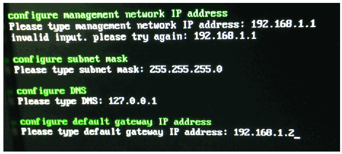

NIST IR 8219 日本語訳
英語タイトル : Securing Manufacturing Industrial Control Systems: Behavioral Anomaly Detection日本語タイトル : 製造業の産業用制御システムのセキュリティ確保：振る舞い異常検知
公開日 : 2020-07-16
原文URL : https://csrc.nist.gov/pubs/ir/8219/final
翻訳編集 : 自動生成（有志による非公式の日本語訳）, 原文取得日 : 2026-10-31, 訳文 : 879 / 904 ブロック
[要約] NIST IR 8219 は、NIST の国立サイバーセキュリティ卓越センター（NCCoE）が工学研究所（EL）と共同で、製造業の組織におけるサイバーセキュリティを支援する一連の振る舞い異常検知（BAD）機能を実証した結果を文書化した報告書です。これらの機能により、製造者は運用環境内の異常な状態を検知して、マルウェア攻撃や、重要な運用データの完全性に対するその他の脅威を緩和できます。実証は、ロボット式の製造システムと、化学製造業で使われているものに似たプロセス制御システムという、2 つの異なるが関連する環境で行われ、ネットワークベース、エージェントベース、運用ヒストリアン／センサーベースの 3 つの検知手法が扱われました。NCCoE と EL は、実証した機能をサイバーセキュリティフレームワークに対応付け、この標準ベースの管理策群が製造者のセキュリティ要件の多くをどのように支援できるかを文書化しました。
NISTIR 8219
NISTIR 8219
Securing Manufacturing Industrial Control Systems:
製造業の産業用制御システムのセキュリティ確保:
Behavioral Anomaly Detection
振る舞い異常検知
James McCarthy Michael Powell Keith Stouffer CheeYee Tang Timothy Zimmerman William Barker Titilayo Ogunyale Devin Wynne Johnathan Wiltberger
James McCarthy Michael Powell Keith Stouffer CheeYee Tang Timothy Zimmerman William Barker Titilayo Ogunyale Devin Wynne Johnathan Wiltberger
This publication is available free of charge from:
この刊行物は次の場所から無料で入手できます:
https://doi.org/10.6028/NIST.IR.8219
https://doi.org/10.6028/NIST.IR.8219
NISTIR 8219
NISTIR 8219
Securing Manufacturing Industrial Control Systems:
製造業の産業用制御システムのセキュリティ確保:
Behavioral Anomaly Detection
振る舞い異常検知
James McCarthy Michael Powell Applied Cybersecurity Division Information Technology Laboratory
James McCarthy Michael Powell 応用サイバーセキュリティ部門 情報技術研究所
William Barker Dakota Consulting Silver Spring, MD
William Barker Dakota Consulting Silver Spring, MD
Keith Stouffer CheeYee Tang Timothy Zimmerman Intelligent Systems Division Engineering Laboratory
Keith Stouffer CheeYee Tang Timothy Zimmerman インテリジェントシステム部門 工学研究所
Titilayo Ogunyale Devin Wynne Johnathan Wiltberger The MITRE Corporation McLean, VA
Titilayo Ogunyale Devin Wynne Johnathan Wiltberger The MITRE Corporation McLean, VA
This publication is available free of charge from:
この刊行物は次の場所から無料で入手できます:
https://doi.org/10.6028/NIST.IR.8219
https://doi.org/10.6028/NIST.IR.8219
July 2020
2020年7月
U.S. Department of Commerce Wilbur L. Ross, Jr., Secretary
米国商務省 Wilbur L. Ross, Jr. 長官
National Institute of Standards and Technology
米国国立標準技術研究所
Walter Copan, NIST Director and Undersecretary of Commerce for Standards and Technology
Walter Copan、NIST 所長兼商務次官（標準・技術担当）
National Institute of Standards and Technology Interagency or Internal Report 8219 93 pages (July 2020)
米国国立標準技術研究所 省庁間報告書または内部報告書 8219 93ページ（2020年7月）
This publication is available free of charge from: https://doi.org/10.6028/NIST.IR.8219
この刊行物は次の場所から無料で入手できます: https://doi.org/10.6028/NIST.IR.8219
Certain commercial entities, equipment, or materials may be identified in this document in order to describe an experimental procedure or concept adequately. Such identification is not intended to imply recommendation or endorsement by NIST, nor is it intended to imply that the entities, materials, or equipment are necessarily the best available for the purpose.
この文書では、実験の手順または概念を適切に説明するために、特定の商業的な事業体、機器、または資材が特定されている場合があります。このような特定は、NIST による推奨または支持を意味するものではなく、それらの事業体、資材、または機器がその目的に必ずしも最適であることを意味するものでもありません。
There may be references in this publication to other publications currently under development by NIST in accordance with its assigned statutory responsibilities. The information in this publication, including concepts and methodologies, may be used by federal agencies even before the completion of such companion publications. Thus, until each publication is completed, current requirements, guidelines, and procedures, where they exist, remain operative. For planning and transition purposes, federal agencies may wish to closely follow the development of these new publications by NIST.
この刊行物には、NIST が法令上の責務に従って策定中の他の刊行物への言及が含まれている場合があります。概念や方法論を含むこの刊行物の情報は、そうした関連刊行物の完成前であっても、連邦機関が利用してもよいです。したがって、各刊行物が完成するまでは、現行の要件、ガイドライン、手順が存在する場合には、それらが引き続き有効です。計画および移行のため、連邦機関は、NIST によるこれらの新しい刊行物の策定状況を注意深く追うことを検討してもよいです。
Organizations are encouraged to review all draft publications during public comment periods and provide feedback to NIST. Many NIST cybersecurity publications, other than the ones noted above, are available at https://csrc.nist.gov/publications.
組織は、パブリックコメント期間中にすべてのドラフト刊行物を確認し、NIST にフィードバックを提供することが推奨されています。上記以外の NIST のサイバーセキュリティ関連刊行物の多くは、https://csrc.nist.gov/publications で入手できます。
Comments on this publication may be submitted to:
この刊行物に対するコメントは次の宛先に提出できます:
National Institute of Standards and Technology Attn: National Cybersecurity Center of Excellence, 100 Bureau Drive (Mail Stop 2002) Gaithersburg, MD 20899-2002 Email: manufacturing_nccoe@nist.gov
National Institute of Standards and Technology Attn: National Cybersecurity Center of Excellence, 100 Bureau Drive (Mail Stop 2002) Gaithersburg, MD 20899-2002 Email: manufacturing_nccoe@nist.gov
All comments are subject to release under the Freedom of Information Act (FOIA).
すべてのコメントは、情報自由法（FOIA）に基づいて公開される場合があります。
Abstract
要旨
Industrial control systems (ICS) are used in many industries to monitor and control physical processes. As ICS continue to adopt commercially available information technology (IT) to promote corporate business systems’ connectivity and remote access capabilities, ICS become more vulnerable to cybersecurity threats. The National Institute of Standards and Technology’s (NIST’s) National Cybersecurity Center of Excellence (NCCoE), in conjunction with NIST’s Engineering Laboratory (EL), has demonstrated a set of behavioral anomaly detection capabilities to support cybersecurity in manufacturing organizations. These capabilities enable manufacturers to detect anomalous conditions in their operating environments to mitigate malware attacks and other threats to the integrity of critical operational data. NIST’s NCCoE and EL have mapped these demonstrated capabilities to the Cybersecurity Framework and have documented how this set of standards-based controls can support many of the security requirements of manufacturers. This report documents the use of behavioral anomaly detection (BAD) capabilities in two distinct but related demonstration environments: a robotics-based manufacturing system and a process control system that resembles what is being used by chemical manufacturing industries.
産業用制御システム（ICS）は、物理プロセスの監視と制御のために多くの産業で使われています。ICS が、企業の業務システムとの接続性やリモートアクセス機能を高めるために市販の情報技術（IT）の採用を進めるにつれ、ICS はサイバーセキュリティ上の脅威に対してより脆弱になっています。米国国立標準技術研究所（NIST）の国立サイバーセキュリティ卓越センター（NCCoE）は、NIST の工学研究所（EL）と共同で、製造業の組織におけるサイバーセキュリティを支援する一連の振る舞い異常検知機能を実証しました。これらの機能により、製造者は運用環境内の異常な状態を検知して、マルウェア攻撃や、重要な運用データの完全性に対するその他の脅威を緩和できます。NIST の NCCoE と EL は、実証したこれらの機能をサイバーセキュリティフレームワークに対応付け、この標準ベースの管理策群が製造者のセキュリティ要件の多くをどのように支援できるかを文書化しました。本報告書は、2 つの異なるが関連する実証環境、すなわちロボット式の製造システムと、化学製造業で使われているものに似たプロセス制御システムにおける、振る舞い異常検知（BAD）機能の使用を文書化したものです。
Keywords
キーワード
BAD; behavioral anomaly detection; cybersecurity; Cybersecurity Framework; ICS; industrial control systems; manufacturing; process control.
BAD; 振る舞い異常検知; サイバーセキュリティ; サイバーセキュリティフレームワーク; ICS; 産業用制御システム; 製造業; プロセス制御。
Acknowledgments
謝辞
NIST and the NCCoE wish to thank Omer Schneider, Phil Neray, and Joe DiPietro of CyberX; Paul J. Geraci, Andrew Duke, Dennis Hui, David Black, and Mark McCoy of OSIsoft; Dennis Murphy, Jason Sharp, and Daniel Trivellato of SecurityMatters; and Erlend A. Engum, Jishnu Nair, Nina Hesby Tvedt, and Siv Hilde Houmb of Secure-NOK for their contributions to this document.
NIST と NCCoE は、本文書への貢献に対し、CyberX の Omer Schneider、Phil Neray、Joe DiPietro、OSIsoft の Paul J. Geraci、Andrew Duke、Dennis Hui、David Black、Mark McCoy、SecurityMatters の Dennis Murphy、Jason Sharp、Daniel Trivellato、Secure-NOK の Erlend A. Engum、Jishnu Nair、Nina Hesby Tvedt、Siv Hilde Houmb の各氏に感謝します。
Please note: SecurityMatters in this project is now Forescout, which acquired the suite of products and solutions used by the NCCoE in this build.
注記: 本プロジェクトにおける SecurityMatters は、現在は Forescout となっています。Forescout は、NCCoE が本構築で使用した製品群およびソリューションを買収しました。
Audience
対象読者
This report is intended for individuals or entities that are interested in understanding BAD technologies and their application to ICS environments. Additionally, this report is intended for those who are interested in understanding how to implement BAD tools in ICS and other operational technology environments.
本報告書は、BAD 技術とその ICS 環境への適用を理解することに関心のある個人または組織を対象としています。また、ICS やその他の運用技術（OT）環境に BAD ツールを導入する方法を理解することに関心のある方も対象としています。
Trademark Information
商標情報
All trademarks, product names, logos, and brands are property of their respective owners.
すべての商標、製品名、ロゴ、ブランドは、それぞれの所有者の財産です。
Executive Summary
エグゼクティブサマリー
National Institute of Standards and Technology’s (NIST’s) National Cybersecurity Center of Excellence (NCCoE), with NIST’s Engineering Laboratory and NCCoE collaborators, offers information regarding the use of behavioral anomaly detection capabilities to support cybersecurity in industrial control systems for manufacturing. This NIST Interagency Report (NISTIR) was developed in response to feedback from members of the manufacturing sector concerning the need for cybersecurity guidance.
米国国立標準技術研究所（NIST）の国立サイバーセキュリティ卓越センター（NCCoE）は、NIST の工学研究所および NCCoE の協力者とともに、製造業向けの産業用制御システムにおけるサイバーセキュリティを支援するための振る舞い異常検知機能の使用に関する情報を提供します。この NIST 省庁間報告書（NISTIR）は、製造業分野の関係者から寄せられた、サイバーセキュリティに関するガイダンスが必要であるとのフィードバックを受けて作成されました。
Cybersecurity attacks directed at a manufacturing infrastructure can be detrimental to both human life and property. behavioral anomaly detection (BAD) mechanisms support a multifaceted approach to detecting cybersecurity attacks against Industrial Control Systems (ICS) devices on which manufacturing processes depend to permit mitigation of those attacks.
製造基盤に向けられたサイバーセキュリティ攻撃は、人命と財産の両方に損害を与えるおそれがあります。振る舞い異常検知（BAD）の仕組みは、製造プロセスが依存する産業用制御システム（ICS）機器に対するサイバーセキュリティ攻撃を検知し、その緩和を可能にする多面的なアプローチを支えます。
The NCCoE and EL deployed commercially available hardware and software provided by industry in response to a NIST notice in the Federal Register to demonstrate behavioral anomaly detection capabilities in an established laboratory infrastructure. We mapped the security characteristics of the demonstrated capabilities to the Framework for Improving Critical Infrastructure Cybersecurity [1] based on NISTIR 8183, the Cybersecurity Framework Manufacturing Profile [2]. The mapping can be used as a reference in applying specific security controls found in prominent industry standards and guidance.
NCCoE と EL は、NIST が連邦官報で行った告知に応じて業界から提供された市販のハードウェアとソフトウェアを導入し、確立されたラボ基盤で振る舞い異常検知機能を実証しました。私たちは、実証した機能のセキュリティ特性を、NISTIR 8183『Cybersecurity Framework Manufacturing Profile』[2] に基づき、『Framework for Improving Critical Infrastructure Cybersecurity』[1] に対応付けました。この対応付けは、主要な業界標準やガイダンスにある具体的なセキュリティ管理策を適用する際の参照として利用できます。
Introducing anomalous data into a manufacturing process can disrupt operations, whether deliberately or inadvertently. The goal of this NISTIR is to provide practical approaches for manufacturers to use in their efforts to strengthen the cybersecurity of their manufacturing processes. This NISTIR demonstrates how BAD tools can be used as a key security component in sustaining business operations, particularly those based on an ICS. The examples provided in this NISTIR illustrate how detecting anomalous conditions can improve the reliability of an ICS in addition to providing specific cybersecurity benefits.
異常なデータが製造プロセスに入り込むと、意図的か偶発的かを問わず、運用が妨げられるおそれがあります。この NISTIR の目標は、製造者が自らの製造プロセスのサイバーセキュリティを強化するための実践的なアプローチを提供することです。この NISTIR は、BAD ツールを、特に ICS に基づく事業運営を維持するための重要なセキュリティ構成要素として、どのように使えるかを示します。この NISTIR で示す例は、異常な状態を検知することが、特定のサイバーセキュリティ上の利点をもたらすことに加えて、ICS の信頼性をどのように向上させうるかを説明しています。
Table of Contents
目次
List of Tables
表の一覧
List of Figures
図の一覧
1. Introduction
1. 序論
The goal of this National Institute of Standards and Technology (NIST) Interagency Report (NISTIR) is to show practical approaches that manufacturers can use to strengthen cybersecurity in their manufacturing processes. Behavioral anomaly detection (BAD) tools can provide a key security component for sustaining business operations, particularly those based on industrial control systems (ICS). Because introducing anomalous data into a manufacturing process can disrupt operations, whether deliberately or inadvertently, the examples provided in this NISTIR demonstrate how detecting anomalous conditions can improve the reliability of manufacturing and other ICS, in addition to providing the demonstrated cybersecurity benefits.
この米国国立標準技術研究所（NIST）省庁間報告書（NISTIR）の目標は、製造者が自らの製造プロセスのサイバーセキュリティを強化するために使える実践的なアプローチを示すことです。振る舞い異常検知（BAD）ツールは、特に産業用制御システム（ICS）に基づく事業運営を維持するための、重要なセキュリティ構成要素となりえます。異常なデータが製造プロセスに入り込むと、意図的か偶発的かを問わず運用が妨げられるおそれがあるため、この NISTIR で示す例は、異常な状態を検知することが、実証されたサイバーセキュリティ上の利点をもたらすことに加えて、製造システムやその他の ICS の信頼性をどのように向上させうるかを示しています。
1.1. Background
1.1. 背景
As stated in NIST Special Publication (SP) 800-82 [3], ICS are vital to the operation of the United States’ critical infrastructures, which are often highly interconnected and mutually dependent systems. While federal agencies also operate many ICS, approximately 90 percent of the nation’s critical infrastructures are privately owned and operated. As ICS increasingly adopt information technology (IT) to promote corporate business systems’ connectivity and remote access capabilities by using industry-standard computers, operating systems (OSs), and network protocols, the accompanying integration provides significantly less isolation of ICS from the outside world. While security controls have been designed to deal with security issues in typical IT systems, special precautions must be taken when introducing these same approaches in ICS environments. In some cases, new security techniques tailored to the specific ICS environment are needed. NIST recognizes this concern and is working with industry to solve these challenges by developing reference designs and a practical application of cybersecurity technologies. BAD is one tool for improving ICS security.
NIST Special Publication（SP）800-82 [3] に述べられているとおり、ICS は米国の重要インフラの運用に不可欠であり、それらはしばしば高度に相互接続され、相互に依存するシステムです。連邦機関も多くの ICS を運用していますが、国内の重要インフラの約 90 パーセントは民間が所有し運用しています。ICS が、業界標準のコンピューター、オペレーティングシステム（OS）、ネットワークプロトコルを用いて、企業の業務システムとの接続性やリモートアクセス機能を高めるために情報技術（IT）の採用を進めるにつれ、それに伴う統合によって、ICS は外部の世界から隔離される度合いが大幅に低下します。セキュリティ管理策は一般的な IT システムにおけるセキュリティ上の問題に対処するために設計されてきましたが、これらと同じ手法を ICS 環境に導入する際には、特別な予防措置を講じなければなりません。場合によっては、特定の ICS 環境に合わせた新しいセキュリティ手法が必要です。NIST はこの懸念を認識し、リファレンスデザインとサイバーセキュリティ技術の実践的な適用を開発することで、これらの課題を解決するために業界と協力しています。BAD は、ICS のセキュリティを向上させるためのツールの 1 つです。
NIST’s National Cybersecurity Center of Excellence (NCCoE), in conjunction with NIST’s Engineering Lab (EL) and NCCoE industry collaborators, has demonstrated a set of behavioral anomaly detection capabilities to support cybersecurity in manufacturing organizations. The use of these capabilities enables manufacturers to detect anomalous conditions in their operating environments to mitigate malware attacks and other threats to the integrity of critical operational data. NIST’s NCCoE and EL have mapped these demonstrated capabilities to the NIST Cybersecurity Framework [1] and have documented how this set of standards-based controls can support many of the security requirements of manufacturers. This NISTIR documents the use of BAD capabilities in two distinct but related demonstration environments: a collaborative robotics-based manufacturing system and a process control system (PCS) that resembles what is being used by chemical manufacturing industries.
NIST の国立サイバーセキュリティ卓越センター（NCCoE）は、NIST の工学研究所（EL）および NCCoE の業界協力者と共同で、製造業の組織におけるサイバーセキュリティを支援する一連の振る舞い異常検知機能を実証しました。これらの機能を使用することで、製造者は運用環境内の異常な状態を検知して、マルウェア攻撃や、重要な運用データの完全性に対するその他の脅威を緩和できます。NIST の NCCoE と EL は、実証したこれらの機能を NIST サイバーセキュリティフレームワーク [1] に対応付け、この標準ベースの管理策群が製造者のセキュリティ要件の多くをどのように支援できるかを文書化しました。この NISTIR は、2 つの異なるが関連する実証環境、すなわち協働ロボットを用いた製造システムと、化学製造業で使われているものに似たプロセス制御システム（PCS）における、BAD 機能の使用を文書化したものです。
1.2. Purpose and Scope
1.2. 目的と範囲
The scope of this NISTIR is a single cybersecurity capability. The security characteristics of different BAD approaches were mapped to the Cybersecurity Framework. The mapping points manufacturers to specific security controls found in prominent cybersecurity standards.
この NISTIR の範囲は、単一のサイバーセキュリティ機能です。さまざまな BAD アプローチのセキュリティ特性を、サイバーセキュリティフレームワークに対応付けました。この対応付けにより、製造者は、主要なサイバーセキュリティ標準にある具体的なセキュリティ管理策を参照できます。
1.3. Challenges
1.3. 課題
Cybersecurity is essential to the safe and reliable operation of modern industrial processes. Threats to ICS can come from numerous sources, including hostile governments, criminal groups, disgruntled employees, other malicious individuals, unanticipated consequences of component interactions, accidents, and natural disasters. The Cybersecurity Framework [1] addresses identifying the threats and potential vulnerabilities, preventing and detecting events, and responding to and recovering from incidents. It is not possible to prevent all cyber events. It may not even be possible to identify all threats for which ICS need to be prepared. It is certainly necessary to detect incidents before the response to or recovery from the incidents can be undertaken. Therefore, the detection of cyber incidents is an essential element for cybersecurity.
サイバーセキュリティは、現代の産業プロセスの安全で信頼できる運用に不可欠です。ICS に対する脅威は、敵対的な政府、犯罪集団、不満を抱く従業員、その他の悪意ある個人、構成要素間の相互作用による予期せぬ結果、事故、自然災害など、数多くの発生源から生じえます。サイバーセキュリティフレームワーク [1] は、脅威と潜在的な脆弱性の識別、イベントの防止と検知、インシデントへの対応と復旧を扱います。すべてのサイバーイベントを防ぐことはできません。ICS が備えるべきすべての脅威を識別することさえ、できない場合があります。インシデントへの対応や復旧に着手する前に、インシデントを検知することが必要であることは間違いありません。したがって、サイバーインシデントの検知は、サイバーセキュリティの不可欠な要素です。
Many incident-detection tools involve monitoring system behaviors for out-of-specification settings or readings or for predefined threat signatures (information elements previously identified as being associated with threats or vulnerability characteristics). However, as previously mentioned, not all threats and vulnerabilities are known beforehand (e.g., zero-day attacks); therefore, not all threats and vulnerabilities can be included among signatures for which monitoring is undertaken. BAD involves continuously monitoring systems for unusual events or trends. The monitor looks for evidence of a compromise rather than for the attack itself.
多くのインシデント検知ツールは、仕様外の設定値や読み取り値、または事前に定義された脅威シグネチャ（脅威や脆弱性の特性に関連すると以前に識別された情報要素）について、システムの挙動を監視します。しかし、前述のとおり、すべての脅威と脆弱性があらかじめわかっているわけではない（たとえばゼロデイ攻撃）ため、すべての脅威と脆弱性を、監視の対象とするシグネチャに含めることはできません。BAD では、異常なイベントや傾向がないか、システムを継続的に監視します。監視者は、攻撃そのものではなく、侵害の証拠を探します。
The challenge addressed by this project is to demonstrate example implementations of BAD capabilities that manufacturers can adopt to achieve their cybersecurity goals. Specifically, this project responds to a need within the manufacturing community to improve the ability to detect anomalous behavior in real or near-real time. Early detection of potential cybersecurity incidents is key to helping reduce the impact of these incidents for ICS.
このプロジェクトが取り組む課題は、製造者がサイバーセキュリティの目標を達成するために採用できる BAD 機能の実装例を示すことです。具体的には、このプロジェクトは、異常な挙動をリアルタイムまたはそれに近い時間で検知する能力を向上させるという、製造業コミュニティ内のニーズに応えるものです。潜在的なサイバーセキュリティインシデントを早期に検知することは、ICS におけるそれらのインシデントの影響を低減するうえで重要です。
1.4. Approach to Addressing Challenges
1.4. 課題への対処アプローチ
The NCCoE developed and demonstrated a set of example approaches for detecting anomalous conditions within manufacturers’ ICS environments. These examples include recommendations that are practical for businesses to implement to strengthen cybersecurity in their manufacturing processes and have the additional potential for detecting anomalous conditions not related to security, such as equipment malfunctioning.
NCCoE は、製造者の ICS 環境内で異常な状態を検知するための一連のアプローチ例を開発し、実証しました。これらの例には、企業が製造プロセスのサイバーセキュリティを強化するために実装できる実践的な推奨事項が含まれており、さらに、機器の誤動作など、セキュリティに関連しない異常な状態を検知できる可能性もあります。
The NCCoE examples provide the following capabilities:
NCCoE の例は、次の機能を提供します。
•models of BAD capabilities that manufacturers can adopt to achieve their security goals for mitigating the risks posed by threats to cybersecurity
•製造者が、サイバーセキュリティに対する脅威がもたらすリスクを緩和するというセキュリティ目標を達成するために採用できる BAD 機能のモデル
•nonintrusive techniques to analyze industrial network communications, allowing the existing ICS infrastructure to flow through the network without interruption or a performance impact
•産業用ネットワーク通信を分析する非侵入型の手法であり、既存のICS基盤を流れるネットワーク通信を中断させず、性能にも影響を与えません。
•the establishment of one or more baselines and notification when specific changes or anomalies occur in the environment over time
•1 つ以上のベースラインの確立と、環境に時間とともに特定の変化や異常が生じたときの通知
•the identification of new devices on the ICS network and of assets that have disappeared from the network
•ICS ネットワーク上の新しい機器と、ネットワークから消えた資産の識別
•the detection of unauthorized configuration changes and of file transfers in the network
•未認可の構成変更とネットワーク内のファイル転送の検知
•increased visibility into network operation and real-time alerting
•ネットワーク運用の可視性の向上とリアルタイムのアラート通知
The NCCoE used commercially available products provided by industry collaborators to address this cybersecurity challenge. These products were provided under Cooperative Research and Development Agreements. This NISTIR does not endorse any products and does not guarantee compliance with any regulatory initiatives. An organization’s information security experts should identify the products that will best integrate with their existing tools, processes, and system infrastructure. Organizations can adopt one of the demonstrated approaches or another one that adheres to the suggested guidelines. This NISTIR can also be used as a starting point for implementing BAD.
NCCoE は、このサイバーセキュリティ上の課題に対処するため、業界の協力者から提供された市販の製品を使用しました。これらの製品は、共同研究開発協定（Cooperative Research and Development Agreements）に基づいて提供されました。この NISTIR は、いかなる製品も推奨せず、いかなる規制上の取り組みへの準拠も保証しません。組織の情報セキュリティ専門家は、既存のツール、プロセス、システム基盤に最もよく統合できる製品を特定すべきです。組織は、実証で示したアプローチのいずれか、または推奨されるガイドラインに沿った別のアプローチを採用できます。この NISTIR は、BAD の実装の出発点としても使用できます。
1.5. Benefits
1.5. 利点
This NISTIR is intended to help organizations accomplish their goals by using anomaly detection tools for the following purposes:
この NISTIR は、組織が次の目的で異常検知ツールを使用して目標を達成できるよう支援することを意図しています。
•detect cyber incidents in time to permit effective response and recovery
•効果的な対応と復旧を可能にする時間内に、サイバーインシデントを検知します。
•expand visibility and monitoring capabilities within manufacturing control systems, networks, and devices
•製造用制御システム、ネットワーク、機器における可視性と監視能力を拡大します。
•reduce opportunities for disruptive cyber incidents by providing real-time monitoring and anomaly-detection alerts
•リアルタイムの監視と異常検知アラートを提供することで、業務を妨げるサイバーインシデントが生じる機会を減らします。
•support the oversight of resources (e.g., IT, personnel, data)
•資源（たとえば IT、人員、データ）の管理監督を支援します。
•enable faster incident-response times, fewer incidents, and shorter downtimes
•インシデント対応時間の短縮、インシデント件数の減少、ダウンタイムの短縮を可能にします。
2. Cybersecurity Framework and NIST Manufacturing Profile
2. サイバーセキュリティフレームワークと NIST 製造プロファイル
The Framework for Improving Critical Infrastructure Cybersecurity [1] is a voluntary risk-based assemblage of industry standards and best practices designed to help organizations manage cybersecurity risks. The Cybersecurity Framework, created through collaboration between government and the private sector, uses a common language to address and manage cybersecurity risk in a cost-effective way, based on business needs, without imposing additional regulatory requirements. The Cybersecurity Framework Manufacturing Profile [2] defines specific cybersecurity activities and outcomes for the protection of the manufacturing system and its components, facility, and environment. By using the Profile, the manufacturer can align cybersecurity activities with business requirements, risk tolerances, and resources. The Profile provides a manufacturing sector-specific approach to cybersecurity from standards, guidelines, and industry best practices.
『Framework for Improving Critical Infrastructure Cybersecurity』[1] は、組織がサイバーセキュリティリスクを管理するのを支援するために設計された、リスクベースの任意の業界標準とベストプラクティスの集合です。政府と民間部門の協力によって作成されたサイバーセキュリティフレームワークは、共通の言語を使用して、追加の規制要件を課すことなく、事業上のニーズに基づいて費用対効果の高い方法でサイバーセキュリティリスクに対処し、管理します。『Cybersecurity Framework Manufacturing Profile』[2] は、製造システムとその構成要素、施設、環境を保護するための具体的なサイバーセキュリティ活動と成果を定義しています。このプロファイルを用いることで、製造者はサイバーセキュリティ活動を事業上の要件、リスク許容度、資源に整合させることができます。このプロファイルは、標準、ガイドライン、業界のベストプラクティスに基づく、製造業分野に特化したサイバーセキュリティへのアプローチを提供します。
Table 2-1 maps Functions addressed by BAD capabilities to NIST Cybersecurity Framework Functions as presented in the Profile. In Table 2-1, the references to the requirements are American National Standards Institute/International Society of Automation Standard 62443-2-1 (Security for Industrial Automation and Control Systems: Establishing an Industrial Automation and Control Systems Security Program) [4], American National Standards Institute/International Society of Automation Standard 62443-2-3 (Security for Industrial Automation and Control Systems – Part 2-3: Patch Management in the IACS Environment) [5], and NIST Special Publication (SP) 800-53 (Security and Privacy Controls for Federal Information Systems and Organizations) [6].
表 2-1 は、BAD 機能が対処する機能を、プロファイルに示された NIST サイバーセキュリティフレームワークの機能に対応付けています。表 2-1 で要件として参照しているのは、American National Standards Institute/International Society of Automation Standard 62443-2-1（Security for Industrial Automation and Control Systems: Establishing an Industrial Automation and Control Systems Security Program）[4]、American National Standards Institute/International Society of Automation Standard 62443-2-3（Security for Industrial Automation and Control Systems – Part 2-3: Patch Management in the IACS Environment）[5]、および NIST Special Publication（SP）800-53（Security and Privacy Controls for Federal Information Systems and Organizations）[6] です。
Table 2-1 Mapping of Cybersecurity Framework Functions Addressed by BAD Capabilities to the Manufacturing Profile
表 2-1 BAD 機能が対処するサイバーセキュリティフレームワークの機能と製造プロファイルとの対応付け
| Function | Category | Subcategory | Manufacturing Profile | Reference |
|---|---|---|---|---|
| Detect | Anomalies and Events (DE.AE) | DE.AE-2 | Low | 62443-2-1:2009 4.3.4.5.6, 62443-2-3:2015 SR 2.8, 2.9 AU-6 IR-4 AU-6(1) IR-4(1) |
| Review and analyze detected events within the manufacturing system to understand attack targets and methods | ||||
| Moderate and High | ||||
| Employ automated mechanisms, where feasible, to review and analyze detected events within the manufacturing system | ||||
| DE.AE-3 | Low and Moderate | 62443-3-3:2013 SR 6.1 IR-5 AU-6(5)(6) AU-12(1) | ||
| Ensure that event data is compiled and correlated across the manufacturing system by using various sources, such as event reports, audit monitoring, network monitoring, physical access monitoring, and user/administrator reports | ||||
| High | ||||
| Integrate the analysis of events, where feasible, with the analysis of vulnerability scanning information, performance data, manufacturing system monitoring, and facility monitoring to further enhance the ability to identify inappropriate or unusual activity | ||||
| DE.AE-4 | Low | RA-3 IR-4(1) SI-4(2) IR-4(4) | ||
| Determine the negative impacts, resulting from detected events, to manufacturing operations, assets, and individuals, and correlate the impacts with the risk assessment outcomes | ||||
| Moderate | ||||
| Employ automated mechanisms to support impact analysis | ||||
| High | ||||
| Correlate detected event information and responses to achieve perspective on the event’s impact across the organization |
| 機能 | カテゴリ | サブカテゴリ | 製造プロファイル | 参照 |
|---|---|---|---|---|
| 検知（DETECT） | 異常とイベント（DE.AE） | DE.AE-2 | 低 | 62443-2-1:2009 4.3.4.5.6, 62443-2-3:2015 SR 2.8, 2.9 AU-6 IR-4 AU-6(1) IR-4(1) |
| 製造システム内で検知されたイベントをレビューおよび分析し、攻撃の標的と手法を理解する | ||||
| 中および高 | ||||
| 実行可能であれば、自動化された仕組みを用いて、製造システム内で検知されたイベントをレビューおよび分析する | ||||
| DE.AE-3 | 低および中 | 62443-3-3:2013 SR 6.1 IR-5 AU-6(5)(6) AU-12(1) | ||
| イベントデータが、イベントレポート、監査監視、ネットワーク監視、物理アクセス監視、ユーザー／管理者からの報告など、さまざまな情報源を用いて、製造システム全体で収集され、相関付けられるようにする | ||||
| 高 | ||||
| 実行可能であれば、イベントの分析を、脆弱性スキャン情報、性能データ、製造システムの監視、施設の監視の分析と統合し、不適切または異常な活動を識別する能力をさらに高める | ||||
| DE.AE-4 | 低 | RA-3 IR-4(1) SI-4(2) IR-4(4) | ||
| 検知されたイベントが製造の運用、資産、個人に及ぼす悪影響を判断し、その影響をリスクアセスメントの結果と相関付ける | ||||
| 中 | ||||
| 影響分析を支援するために、自動化された仕組みを用いる | ||||
| 高 | ||||
| 検知されたイベントの情報と対応を相関付け、そのイベントが組織全体に及ぼす影響についての見通しを得る |
3. Demonstration Environment Architecture
3. 実証環境のアーキテクチャ
The Cybersecurity for Smart Manufacturing Systems (CSMS) demonstration environment emulates real-world manufacturing processes and their ICS by using software simulators and commercial off-the-shelf hardware in a laboratory environment [7]. The CSMS environment was designed to measure the performance impact on ICS that is induced by cybersecurity technologies. The PCS and the collaborative robotic system (CRS) are the two systems used for demonstrating BAD capabilities. The PCS and CRS demonstrations are described in Sections 3.1 and 3.2.
Cybersecurity for Smart Manufacturing Systems（CSMS）実証環境は、ラボ環境でソフトウェアシミュレーターと市販の汎用ハードウェアを使用して、実世界の製造プロセスとその ICS を模擬します [7]。CSMS 環境は、サイバーセキュリティ技術が ICS にもたらす性能への影響を測定するために設計されました。PCS と協働ロボットシステム（CRS）は、BAD 機能を実証するために使用する 2 つのシステムです。PCS と CRS の実証は、3.1 節と 3.2 節で説明します。
Figure 3-1 depicts a high-level architecture for the BAD demonstration environment. The capabilities that are introduced in the demonstration environment are in bold type in Figure 3-1 and address the Cybersecurity Framework Functions and Subcategories listed in Table 2-1.
図 3-1 は、BAD 実証環境の高レベルアーキテクチャを示しています。実証環境に導入した機能は図 3-1 で太字になっており、表 2-1 に示したサイバーセキュリティフレームワークの機能とサブカテゴリに対処します。
The local area network (LAN), a firewalled-off cybersecurity tool environment (demilitarized zone [DMZ]), and two ICS environments make up the existing architecture of the CSMS demonstration environment. The LAN consists of a hypervisor for virtualization, a network time protocol (NTP) server for time synchronization, a server for backup and storage, and a virtualized Active Directory (AD) server for domain services. Within the demonstration environment’s DMZ, there is a hypervisor that allows cybersecurity tools to be deployed within an isolated environment.
CSMS 実証環境の既存のアーキテクチャは、ローカルエリアネットワーク（LAN）、ファイアウォールで隔てられたサイバーセキュリティツール環境（非武装地帯 [DMZ]）、および 2 つの ICS 環境で構成されます。LAN は、仮想化のためのハイパーバイザー、時刻同期のためのネットワークタイムプロトコル（NTP）サーバー、バックアップとストレージのためのサーバー、ドメインサービスのための仮想化された Active Directory（AD）サーバーで構成されます。実証環境の DMZ 内には、サイバーセキュリティツールを隔離された環境に展開できるハイパーバイザーがあります。
Within this architecture, the BAD capability is introduced in two areas that use four collaborator products. Two BAD systems are installed within the demonstration environment’s DMZ. One of these BAD systems is agent-based and is installed at multiple end points within the CRS and the PCS, while data is aggregated at the demonstration environment’s demilitarized zone. The other BAD system is implemented as an additional capability to the historian within the CRS only. This build consisted of performing and introducing the BAD capability into the CRS and PCS environments, one product at a time. In other words, only one product was installed and performing BAD at any given time. Each collaborator’s product installation was scheduled to run in sequence to ensure complete autonomy from each product in the build.
このアーキテクチャでは、協力者の4つの製品を用いて、2つの領域にBAD機能を導入しました。2つのBADシステムを実証環境のDMZ内にインストールしました。これらのBADシステムの1つはエージェントベースで、CRSとPCS内の複数のエンドポイントにインストールされ、データは実証環境の非武装地帯に集約されます。もう1つのBADシステムは、CRSのみにおいてヒストリアンの追加機能として実装されました。この構築では、BAD機能をCRSとPCSの環境に1製品ずつ導入し、実行しました。言い換えると、任意の時点でインストールされ、BAD機能を実行していた製品は1つだけでした。構築における各協力者の製品のインストールは、各製品が完全に独立して実行されるよう、順番にスケジュールされました。
Figure 3-1 BAD High-Level Architecture
図 3-1 BAD の高レベルアーキテクチャ
![Block diagram of the BAD high-level architecture. A rounded box “Testbed LAN” contains an orange box “HyperV / AD” and the labels “NTP” and “VEEAM”; a line runs from it through a firewall icon to the box “Testbed DMZ”, which contains an orange box “HyperV” with “Behavioral Analytics” in bold. Double-headed arrows connect the Testbed LAN down to a dashed box “ICS” containing two systems: “PCS” with blue boxes “HMI, Controller” and “PLC, OPC, Historian, TE Simulator”; and “CRS” with blue boxes “HMI, PLC, Historian (bold), Remote I/O” and “Robot Driver, Controllers, Machining Stations”.](assets/ir-8219/p0017-figure-01.png)
BAD の上位アーキテクチャのブロック図です。角丸の箱「Testbed LAN」には、オレンジ色の箱「HyperV / AD」と「NTP」「VEEAM」の表示があります。そこからファイアウォールのアイコンを経て「Testbed DMZ」の箱に線が延び、その中にオレンジ色の箱「HyperV」と太字の「Behavioral Analytics」があります。Testbed LAN から下の破線の箱「ICS」へ双方向の矢印があり、ICS には 2 つのシステムがあります。「PCS」には青い箱「HMI、Controller」と「PLC、OPC、Historian、TE Simulator」が、「CRS」には青い箱「HMI、PLC、Historian（太字）、Remote I/O」と「Robot Driver、Controllers、Machining Stations」があります。
3.1. Collaborative Robotic System
3.1. 協働ロボットシステム
The CRS of the environment is composed of two robotic arms that emulate a material-handling application known as machine tending [8]. Robotic machine tending uses robots to interact with the machinery, performing operations that a human operator would normally perform (e.g., loading and unloading parts, opening and closing machine doors, activating operator control-panel buttons). The robots operate in concert according to a material-handling procedure that changes dynamically based on feedback from the simulated machining operations. An architecture of the robotic CRS network is shown in Figure 3-2.
この環境の CRS は、マシンテンディング [8] と呼ばれる資材ハンドリング用途を模擬する 2 台のロボットアームで構成されます。ロボットによるマシンテンディングでは、ロボットが機械とやり取りし、通常は人間のオペレーターが行う作業（たとえば、部品の搬入と搬出、機械のドアの開閉、オペレーター制御盤のボタンの操作）を行います。ロボットは、模擬された機械加工の作業からのフィードバックに基づいて動的に変化する資材ハンドリング手順に従って、連携して動作します。ロボット式 CRS ネットワークのアーキテクチャを図 3-2 に示します。
The robot controllers can operate in one of two modes: deployed or virtualized. In the deployed mode, each robot is controlled on a dedicated Dell PowerEdge R420 server running the robot operating system on top of Ubuntu Linux. In the virtualized mode, each robot is controlled by virtualized servers within a hypervisor running on a Dell PowerEdge 620 server. The deployed mode supports experiments with a pseudo-ideal configuration. The virtualized mode supports experiments with a resource-restricted configuration and can maintain independent demonstration environments.
ロボットコントローラーは、展開モードと仮想化モードのいずれかで動作できます。展開モードでは、各ロボットは、Ubuntu Linux 上でロボットオペレーティングシステムを実行する専用の Dell PowerEdge R420 サーバーで制御されます。仮想化モードでは、各ロボットは、Dell PowerEdge 620 サーバー上で動作するハイパーバイザー内の仮想化サーバーで制御されます。展開モードは、疑似理想構成での実験をサポートします。仮想化モードは、資源制限構成での実験をサポートし、独立した実証環境を維持できます。
The pseudo-ideal configuration provides the robot controller software with computational resources that are well beyond the minimum requirements for unimpeded operations. Operating in this manner is reserved for experiments that do not require server performance impacts to be measured (e.g., network-specific experiments). The resource-restricted configuration allows the researchers to restrict the available resources to the robot controller software and underlying OS (e.g., memory allocation, available hard-disk space, hard-disk access rates, number of central processing unit [CPU] cores).
疑似理想構成では、ロボットコントローラーソフトウェアに、妨げのない運用に必要な最小要件をはるかに上回る計算資源が提供されます。この方法での運用は、サーバーの性能への影響を測定する必要がない実験（たとえば、ネットワーク固有の実験）に限られます。資源制限構成では、研究者が、ロボットコントローラーソフトウェアとその基盤となる OS が利用できる資源（たとえば、メモリ割り当て、利用可能なハードディスク容量、ハードディスクのアクセス速度、中央処理装置 [CPU] のコア数）を制限できます。
The hypervisor also allows software-based cybersecurity tools to be deployed within an isolated environment and allows the ability to restore the CRS environment to a known-good state, reducing the chances of cross-contamination by residual software modules or services remaining within a virtual machine (VM) post-experiment. Software-based cybersecurity tools are installed on VMs dedicated to specific experiments within the hypervisor and are archived. This allows any tool to be recalled for any experiment that requires its execution.
ハイパーバイザーは、ソフトウェアベースのサイバーセキュリティツールを隔離された環境に展開できるようにし、CRS 環境を既知の良好な状態に復元できるようにすることで、実験後に仮想マシン（VM）内に残るソフトウェアモジュールやサービスによる相互汚染の可能性を低減します。ソフトウェアベースのサイバーセキュリティツールは、ハイパーバイザー内の特定の実験専用 VM にインストールされ、アーカイブされます。これにより、その実行を必要とする実験のために、保存されたツールを呼び戻すことができます。
Figure 3-2 Robotic Assembly CRS Network
図 3-2 ロボット組立 CRS のネットワーク
![Network diagram of the robotic assembly CRS. A cloud “Testbed LAN” connects to “CRS LAN Router (NAT)”, which feeds two “Layer 2 Switch” devices. The upper switch connects to the bus “CRS Control System LAN”, to which are attached the “Engineering Workstation”, “Operator HMI”, “Local Historian” (shown faded), “Supervisory PLC”, and “Cybersecurity VM”. The lower switch connects to the bus “CRS Field Communications LAN”, to which are attached four “Machining Stations”, two “Robot Controllers”, and the “Robot Driver”; the robot driver links to two industrial robot arms via “Field Bus”.](assets/ir-8219/p0018-figure-01.png)
ロボット組立 CRS のネットワーク図です。雲形の「Testbed LAN」が「CRS LAN Router (NAT)」につながり、そこから 2 台の「Layer 2 Switch」に分かれます。上のスイッチはバス「CRS Control System LAN」につながり、「Engineering Workstation」「Operator HMI」「Local Historian」（薄く表示）「Supervisory PLC」「Cybersecurity VM」が接続されています。下のスイッチはバス「CRS Field Communications LAN」につながり、4 台の「Machining Stations」、2 台の「Robot Controllers」、「Robot Driver」が接続されています。Robot Driver は「Field Bus」経由で 2 台の産業用ロボットアームに接続されています。
3.1.1. CRS Network Architecture
3.1.1. CRS のネットワークアーキテクチャ
In addition to the two industrial robots, the CRS includes a PLC, an HMI, several servers for executing required computational resources and applications, a cybersecurity virtual machine (CybersecVM), and an engineering workstation.
CRS には、2 台の産業用ロボットに加えて、PLC、HMI、必要な計算資源とアプリケーションを実行するための複数のサーバー、サイバーセキュリティ仮想マシン（CybersecVM）、およびエンジニアリングワークステーションが含まれます。
The CRS LAN is constructed as a hierarchical architecture. For the BAD implementation, the reconfigurable design of the CRS-enabled implementation of network segmentation and security perimeters. The local network traffic (CRS LAN) is managed by a Siemens RUGGEDCOM RX1510, and the high-level environment traffic (environment LAN) and its connection to the “corporate network” are managed by a Cisco ASA 5512-X.
CRSのLANは、階層型アーキテクチャとして構築されています。BADの実装では、CRSの再構成可能な設計により、ネットワークのセグメンテーションとセキュリティ境界を実装できました。ローカルネットワークトラフィック（CRS LAN）はSiemens RUGGEDCOM RX1510で管理され、上位の環境トラフィック（環境LAN）と「企業ネットワーク」への接続はCisco ASA 5512-Xで管理されます。
The CRS LAN has numerous machines that directly operate and support operation of the CRS. The robot controllers or driver servers execute the operational code and communicate directly with the robots to direct their actions. The supervisory PLC communicates the status of the machining stations and operator controls to the robot controllers, and of part tracking for manufacturing performance measurements. The operator HMI also communicates with the PLC to display manufacturing process information and performance measurements to the operator. The engineering workstation hosts the programming environment and debugging tools that are used to modify the robot code and to give terminal-level access to other machines within the CRS. The HyperV server provides server virtualization to the CRS, allowing researchers to create servers on demand, as required by specific software tools or packages.
CRSのLANには、CRSを直接運用する、またはその運用を支援する多数のマシンがあります。ロボットコントローラーまたはドライバーサーバーは、運用コードを実行し、ロボットと直接通信して動作を指示します。監視用PLCは、機械加工ステーションとオペレーター制御の状態、および製造性能測定のための部品追跡情報をロボットコントローラーに伝えます。オペレーター用HMIもPLCと通信して、製造プロセス情報と性能測定値をオペレーターに表示します。エンジニアリングワークステーションは、ロボットコードの変更や、CRS内の他のマシンへのターミナルレベルのアクセスに使用するプログラミング環境とデバッグツールをホストします。HyperVサーバーはCRSにサーバー仮想化を提供し、特定のソフトウェアツールやパッケージに応じて、研究者が必要なサーバーをオンデマンドで作成できるようにします。
3.2. Process Control System
3.2. プロセス制御システム
The PCS CRS emulates an industrial continuous manufacturing system, a manufacturing process to produce or process materials continuously and where the materials are continuously moving, going through chemical reactions, or undergoing mechanical or thermal treatment. Continuous manufacturing usually implies a 24/7 (24 hours a day, seven days a week) operation with infrequent maintenance shutdowns and is contrasted with batch manufacturing. Examples of continuous manufacturing systems are chemical production, oil refining, natural-gas processing, and wastewater treatment [9]. An architecture of the PCS network is depicted in Figure 3-3.
PCSは、産業用の連続製造システムを模擬します。これは、材料を連続的に製造または処理し、材料が連続的に移動して、化学反応を経たり、機械的または熱的な処理を受けたりする製造プロセスです。連続製造は通常、保守のための停止が少ない24/7（1日24時間、週7日）の運用を意味し、バッチ製造と対比されます。連続製造システムの例には、化学品の生産、石油精製、天然ガス処理、排水処理があります[9]。PCSネットワークのアーキテクチャを図3-3に示します。
Figure 3-3 PCS Network Architecture
図 3-3 PCS のネットワークアーキテクチャ
![Network diagram titled “Process Control System Network Diagram”. The bus “System VLAN 1” connects “HMI Host” and “Controller” (both Intel Core i5 Win7) and a “Layer 2 switch, Allen-Bradley Stratix 5700”. A second “Layer 2 switch, Allen-Bradley Stratix 5700” serves the bus “System VLAN 2”, which connects “Plant Simulator”, “Historian”, and “OPC DA” (all Intel Core i5 Win7) and, through “ICS Firewall, Tofino Xenon”, the “PLC, Allen-Bradley”. A dashed “DeviceNet Connection” links the Plant Simulator and the PLC. The switches connect to “System Boundary Router, Allen-Bradley Stratix 8300”, which connects to “Corporate Router/Firewall, Cisco ASA 5512-X” and the cloud “NIST Research Equipment Network”, and to the “Engineering Workstation, HP Z230”.](assets/ir-8219/p0019-figure-01.png)
「Process Control System Network Diagram」と題したネットワーク図です。バス「System VLAN 1」に「HMI Host」と「Controller」（いずれも Intel Core i5 Win7）と「Layer 2 switch, Allen-Bradley Stratix 5700」がつながります。もう 1 台の「Layer 2 switch, Allen-Bradley Stratix 5700」はバス「System VLAN 2」につながり、そこに「Plant Simulator」「Historian」「OPC DA」（いずれも Intel Core i5 Win7）と、「ICS Firewall, Tofino Xenon」を経て「PLC, Allen-Bradley」が接続されています。Plant Simulator と PLC は破線の「DeviceNet Connection」で結ばれています。スイッチは「System Boundary Router, Allen-Bradley Stratix 8300」につながり、そこから「Corporate Router/Firewall, Cisco ASA 5512-X」と雲形の「NIST Research Equipment Network」、および「Engineering Workstation, HP Z230」に接続されています。
The PCS includes a software simulator to emulate the TE chemical reaction process. The TE problem, presented by Downs and Vogel [10], is a well-known process-control problem in continuous chemical manufacturing. The TE control problem was chosen as the continuous process model for several reasons. First, the TE model is a well-known plant model that is used in control-systems research, and the dynamics of the plant process are well understood. Second, the process must be controlled; otherwise, perturbations will drive the system into an unstable state. The inherent unstable open-loop operation of the TE process model presents a real-world scenario in which a cybersecurity attack could represent a real risk to human safety, environmental safety, and economic viability. Third, the process is complex and nonlinear and has many degrees of freedom by which to control and perturb the dynamics of the process. Finally, numerous simulations of the TE process have been developed with readily available reusable code. We chose the University of Washington Simulink controller design by Ricker [11]. The Ricker Simulink model was chosen for its multiloop control architecture, making distributed control architectures viable. It accurately matches the Downs and Vogel model, and the control code is easily separable from the plant code.
PCS には、TE 化学反応プロセスを模擬するソフトウェアシミュレーターが含まれます。Downs と Vogel [10] が示した TE 問題は、連続化学製造における、よく知られたプロセス制御問題です。連続プロセスモデルとして TE 制御問題を選んだ理由はいくつかあります。第 1 に、TE モデルは制御システム研究で使われるよく知られたプラントモデルであり、プラントプロセスの力学が十分に理解されています。第 2 に、このプロセスは制御されなければならず、そうしなければ外乱によってシステムが不安定な状態に陥ります。TE プロセスモデルに本来備わる不安定な開ループ運転は、サイバーセキュリティ攻撃が人間の安全、環境の安全、経済的な存続可能性に現実のリスクをもたらしうる、実世界のシナリオを提示します。第 3 に、このプロセスは複雑で非線形であり、プロセスの力学を制御し、擾乱を与えるための自由度が多くあります。最後に、TE プロセスの多数のシミュレーションが、容易に入手できる再利用可能なコードとともに開発されています。私たちは、Ricker [11] による University of Washington の Simulink コントローラー設計を選びました。Ricker の Simulink モデルは、多重ループ制御アーキテクチャを備え、分散制御アーキテクチャを実現可能にするため選びました。このモデルは Downs と Vogel のモデルと正確に一致し、制御コードをプラントコードから容易に分離できます。
The TE process model is illustrated in Figure 3-4. Downs and Vogel did not reveal the actual substances used in the process; instead, they used generic identifiers for each substance. The process produces two products (G and H) from four reactants (A, C, D, and E). The process is defined as irreversible and exothermic, and the reaction rates of the four reactants are a function of the reactor temperature. The process is broken down into five major operations: a reactor, a product condenser, a vapor-liquid separator, a product stripper, and a recycle compressor. The PCS is housed in a 19-inch rack system. The model has 12 actuators for control and 41 sensors for monitoring. The process description is summarized below.
TE プロセスモデルを図 3-4 に示します。Downs と Vogel は、プロセスで使われる実際の物質を明らかにしませんでした。代わりに、各物質に汎用の識別子を使いました。このプロセスは、4 つの反応物（A、C、D、E）から 2 つの生成物（G と H）を生成します。このプロセスは不可逆かつ発熱的であると定義されており、4 つの反応物の反応速度は反応器温度の関数です。プロセスは、反応器、生成物凝縮器、気液分離器、生成物ストリッパー、リサイクル圧縮機という 5 つの主要な操作に分けられます。PCS は 19 インチラックシステムに収容されています。モデルには、制御用の 12 個のアクチュエーターと、監視用の 41 個のセンサーがあります。プロセスの説明を以下にまとめます。
As previously mentioned, the reaction rates of the reactants are a function of the reactor temperature. The gaseous reactants are combined in the reactor to form liquid products. The reactor temperature is then cooled by using an internal cooling bundle. The reactor product passes through the condenser to the separator. The vapor-liquid separator then separates unreacted gases from the liquid products. The unreacted gases are sent back to the reactor by the recycle compressor. The remaining reactants are removed in a stripping column. Finally, the two end products are sent downstream for further refining and separating.
前述のとおり、反応物の反応速度は反応器温度の関数です。気体の反応物は反応器内で混合され、液体の生成物を形成します。その後、内部の冷却コイルを使って反応器温度を下げます。反応器の生成物は凝縮器を通って分離器に送られます。続いて気液分離器が、未反応の気体を液体の生成物から分離します。未反応の気体は、リサイクル圧縮機によって反応器に戻されます。残りの反応物は、ストリッピング塔で除去されます。最後に、2つの最終生成物は、さらなる精製と分離のために下流へ送られます。
Figure 3-4 TE Process Control Model
図 3-4 TE プロセス制御モデル
Tennessee Eastman（TE）プロセスの配管計装図です。原料の流れ A、D、E（下部に C）は、それぞれ流量計（FI）と弁を経て（流れ 1〜4）「Reactor」に入ります。Reactor には液位（LI）、圧力（PI）、温度（TI）、SC の計器と冷却水の供給・戻り（CWS/CWR）があります。反応器の出口（流れ 7）は「Condenser」（CWS/CWR、流れ 13）を経て「Vap/liq separator」へ進み、気体は「Compressor」（JI）で反応器へ戻されます（流れ 8）。一部は「Purge」（流れ 9）として排出されます。分離器の液体（流れ 10）は蒸気（Stm）と凝縮水（Cond）を使う「Stripper」へ送られ、その出口（流れ 11）が「Product」として出ます。3 つの「ANALYZER」が成分 XA〜XF（反応器の供給）、XA〜XH（パージ）、XD〜XH（製品）を測定します。 ［第三者の画像。第三者の著作物のため、この非公式サイトには掲載していません。原本 PDF を参照してください。］
3.2.1. PCS Network Architecture
3.2.1. PCS のネットワークアーキテクチャ
The PCS includes a software simulator to emulate the TE chemical reaction process. The simulator is written in C code and is executed on a computer running Windows 7. In addition, the system includes a PLC, a software controller implemented in MATLAB, an HMI, an object linking and embedding for process control (OPC) data access (DA) server, a data historian, an engineering workstation, and several virtual LAN switches and network routers.
PCS には、TE 化学反応プロセスを模擬するソフトウェアシミュレーターが含まれます。このシミュレーターは C コードで書かれており、Windows 7 を実行するコンピューター上で動作します。さらに、このシステムには、PLC、MATLAB で実装されたソフトウェアコントローラー、HMI、プロセス制御用オブジェクトリンクと埋め込み（OPC）データアクセス（DA）サーバー、データヒストリアン、エンジニアリングワークステーション、および複数の仮想 LAN スイッチとネットワークルーターが含まれます。
The PCS network is segmented from the demonstration network via a boundary router. The router uses a dynamic routing protocol, Open Shortest Path First, to communicate with the main demonstration environment router. All network traffic needs to go through the boundary router to access the main demonstration network. There are two virtual network segments in the system. Each network is managed by an Ethernet switch. The HMI and the controller are in VLAN-1, while the plant simulator, data historian, OPC DA server, and PLC are in VLAN-2. VLAN-1 simulates a central control-room environment in which the HMI and the controllers are virtually located in the same network segment. VLAN-2 simulates the process operation environment, which typically consists of the operating plant, PLCs, OPC DA server, and data historian. These network switches and routers are highly reconfigurable and therefore, allow the system to implement various network topologies for demonstration.
PCS ネットワークは、境界ルーターを介して実証ネットワークからセグメント化されています。このルーターは、動的ルーティングプロトコルである Open Shortest Path First を使用して、主たる実証環境のルーターと通信します。主たる実証ネットワークにアクセスするすべてのネットワークトラフィックは、境界ルーターを通過する必要があります。システムには 2 つの仮想ネットワークセグメントがあります。各ネットワークは Ethernet スイッチで管理されます。HMI とコントローラーは VLAN-1 にあり、プラントシミュレーター、データヒストリアン、OPC DA サーバー、PLC は VLAN-2 にあります。VLAN-1 は中央制御室の環境を模擬します。この環境では、HMI とコントローラーが仮想的に同じネットワークセグメントに配置されています。VLAN-2 はプロセス運用環境を模擬し、通常は稼働中のプラント、PLC、OPC DA サーバー、データヒストリアンで構成されます。これらのネットワークスイッチとルーターは高度に再構成可能であり、そのため、システムは実証のためにさまざまなネットワークトポロジーを実装できます。
A Tofino Xenon security appliance, a firewall specially designed for ICS application, is installed to protect the PLC. The firewall rules are configured to allow only certain network nodes and specific protocols to access the PLC, and to deny all other traffic. All of the computer nodes in the system have the Windows firewall enabled. Rules are configured to allow computer access to only traffic specific to their applications. For example, the firewall of the OPC DA server computer allows only a restricted range of remote procedure call and Distributed Component Object Model ports for the OPC clients to access, and it restricts the source internet protocol (IP) address of the OPC clients.
PLC を保護するために、ICS 用途向けに特別に設計されたファイアウォールである Tofino Xenon セキュリティアプライアンスがインストールされています。ファイアウォールのルールは、特定のネットワークノードと特定のプロトコルのみが PLC にアクセスできるようにし、それ以外のすべてのトラフィックを拒否するよう構成されています。システム内のすべてのコンピューターノードで、Windows ファイアウォールが有効になっています。ルールは、コンピューターがそれぞれのアプリケーションに固有のトラフィックのみを許可するよう構成されています。たとえば、OPC DA サーバーコンピューターのファイアウォールは、OPC クライアントからのアクセスをリモートプロシージャコールと Distributed Component Object Model の限られた範囲のポートに制限し、OPC クライアントの送信元インターネットプロトコル（IP）アドレスも制限します。
The plant simulator is implemented in C code, which was based on the Fortran code originally developed by Downs and Vogel. The plant simulator requires a controller to provide a control loop to operate continuously. A decentralized controller implemented in Simulink, developed by Ricker, is used as the process controller. The Ricker implementation accurately matches the plant simulator, and the controller is a separate software process that runs on a computer separate from the plant simulator. To provide communication between the plant simulator and the controller, a hardware PLC with an industrial network protocol capability is used. The industrial network protocol is used to communicate between the plant simulator and the PLC. The plant simulator sends its sensor information to the controller, and the controller algorithm uses the sensor inputs to compute the desired values of the actuators and then sends those values back to the plant simulator.
プラントシミュレーターは C コードで実装されており、これは、Downs と Vogel が当初開発した Fortran コードに基づいています。プラントシミュレーターが連続的に動作するには、制御ループを提供するコントローラーが必要です。プロセスコントローラーには、Ricker が開発した、Simulink で実装された分散型コントローラーを使用します。Ricker の実装はプラントシミュレーターと正確に一致し、このコントローラーは、プラントシミュレーターとは別のコンピューター上で動作する、別個のソフトウェアプロセスです。プラントシミュレーターとコントローラーの間の通信を提供するために、産業用ネットワークプロトコルの機能を備えたハードウェア PLC を使用します。産業用ネットワークプロトコルは、プラントシミュレーターと PLC の間の通信に使われます。プラントシミュレーターはセンサー情報をコントローラーに送信し、コントローラーのアルゴリズムはセンサー入力を用いてアクチュエーターの目標値を計算し、その値をプラントシミュレーターに送り返します。
In the plant simulator computer, a multinode DeviceNet card was installed. DeviceNet is a common industrial protocol that is used in the automation industry to exchange data between control devices. The multinode card allows a single hardware device to emulate multiple virtual DeviceNet nodes. In this case, each sensor and actuator point is a dedicated node. Therefore, 53 virtual nodes (41 for sensors and 12 for actuators) were configured in the system. A software interface was developed to send and receive sensor and actuator values between the plant simulator and the PLC, through DeviceNet. An OPC DA server runs on a Windows 7 computer, acting as the main data gateway for the PLC. The PLC communicates to the OPC DA server to update and retrieve all of the sensor and actuator information, respectively. This sensor and actuator information is also known as a tag in PLC terminology. The controller has a MATLAB Simulink interface that directly communicates with the OPC DA server.
プラントシミュレーターのコンピューターには、マルチノードの DeviceNet カードがインストールされました。DeviceNet は、制御機器間でデータを交換するためにオートメーション業界で使われる一般的な産業用プロトコルです。マルチノードカードにより、1 つのハードウェア機器が複数の仮想 DeviceNet ノードを模擬できます。この場合、各センサーとアクチュエーターのポイントが専用のノードになります。そのため、システムには 53 個の仮想ノード（センサー用 41 個、アクチュエーター用 12 個）が構成されました。DeviceNet を通じてプラントシミュレーターと PLC の間でセンサーとアクチュエーターの値を送受信するソフトウェアインターフェースが開発されました。OPC DA サーバーは Windows 7 コンピューター上で動作し、PLC の主たるデータゲートウェイとして機能します。PLC は OPC DA サーバーと通信して、センサー情報を更新し、アクチュエーター情報を取得します。このセンサー情報とアクチュエーター情報は、PLC の用語ではタグとも呼ばれます。コントローラーには、OPC DA サーバーと直接通信する MATLAB Simulink インターフェースがあります。
An HMI and a data historian are implemented in the system. The HMI provides a graphical user interface (GUI) to present information to an operator or user about the state of the process. The data historian serves as the main database to record all of the process sensor and actuator information. Both the HMI and the data historian have built-in interfaces to establish connections to the OPC DA server to access all of the process information. An engineering workstation is used in the system for engineering support, such as PLC development and control, HMI development and deployment, and data-historian data retrieval.
システムには、HMI とデータヒストリアンが実装されています。HMI は、プロセスの状態に関する情報をオペレーターまたはユーザーに提示するグラフィカルユーザーインターフェース（GUI）を提供します。データヒストリアンは、すべてのプロセスのセンサー情報とアクチュエーター情報を記録する主たるデータベースとして機能します。HMI とデータヒストリアンはどちらも、OPC DA サーバーへの接続を確立してすべてのプロセス情報にアクセスするための組み込みインターフェースを備えています。システムでは、PLC の開発と制御、HMI の開発と展開、データヒストリアンのデータ取得などのエンジニアリング支援に、エンジニアリングワークステーションが使われます。
All systems in the PCS are synchronized with the NTP server environment. A network packet analyzer tool is installed in all of the computers in the system to capture and analyze network packets. Other specialized software tools are also used to monitor the system. For example, an OPC data analyzer is used to monitor OPC data exchange, and DeviceNet logging is used to log DeviceNet-level traffic.
PCS 内のすべてのシステムは、NTP サーバー環境と同期しています。ネットワークパケットを捕捉して分析するために、システム内のすべてのコンピューターにネットワークパケットアナライザーツールがインストールされています。システムの監視には、その他の専用ソフトウェアツールも使われます。たとえば、OPC データの交換を監視するために OPC データアナライザーが、DeviceNet レベルのトラフィックを記録するために DeviceNet ロギングが使われます。
3.3. Behavioral Anomaly Detection Capabilities Demonstrated
3.3. 実証した振る舞い異常検知機能
The BAD capability was demonstrated by installing single products into each environment. Only one product was installed and performing BAD at any given time. The BAD capability is achieved by three different detection methods: network-based, agent-based, and historian/sensor-based. CyberX and SecurityMatters SilentDefense demonstrated network-based detection. Secure-NOK’s SNOK Detector demonstrates agent-based detection. The OSIsoft Process Information (PI) System’s PI Data Archive (historian) demonstrates sensor-based detection from historian data.
BAD 機能は、各環境に単一の製品をインストールすることで実証されました。ある時点でインストールされ BAD を実行していた製品は 1 つだけでした。BAD 機能は、ネットワークベース、エージェントベース、ヒストリアン／センサーベースという 3 つの異なる検知手法によって実現されます。CyberX と SecurityMatters SilentDefense は、ネットワークベースの検知を実証しました。Secure-NOK の SNOK Detector は、エージェントベースの検知を実証しています。OSIsoft Process Information（PI）System の PI Data Archive（ヒストリアン）は、ヒストリアンデータからのセンサーベースの検知を実証しています。
3.3.1. SecurityMatters SilentDefense
3.3.1. SecurityMatters SilentDefense
SecurityMatters SilentDefense utilizes sensors to passively sniff traffic at the Layer 3 peer-to-peer switches to monitor critical networks for anomalies. The SilentDefense product also uses a command center to manage and collect data from all sensors at an enterprise site. The installation and configuration procedures undertaken for the SecurityMatters SilentDefense product are provided in Appendix A.
SecurityMatters SilentDefense は、センサーを利用して、レイヤ 3 のピアツーピアスイッチでトラフィックをパッシブにスニッフィングし、重要なネットワークに異常がないか監視します。SilentDefense 製品は、エンタープライズサイトのすべてのセンサーからデータを管理および収集するために、コマンドセンターも使用します。SecurityMatters SilentDefense 製品に対して行ったインストールと構成の手順は、付録 A に示します。
3.3.2. Secure-NOK SNOK
3.3.2. Secure-NOK SNOK
Secure-NOK’s SNOK is a cybersecurity monitoring and detection system tailored for industrial networks and control systems. SNOK utilizes nonintrusive end-point monitoring agents and passive network monitoring from Layer 2 and Layer 3 switches. The SNOK network intrusion detection system (IDS) comes preinstalled on an appliance, and end-point monitoring agents are integrated into the asset owner’s environment. The installation and configuration procedures undertaken for the Secure-NOK SNOK appliance are provided in Appendix B.
Secure-NOK の SNOK は、産業用ネットワークと制御システム向けに調整されたサイバーセキュリティの監視・検知システムです。SNOK は、非侵入型のエンドポイント監視エージェントと、レイヤ 2 およびレイヤ 3 スイッチからのパッシブなネットワーク監視を利用します。SNOK のネットワーク侵入検知システム（IDS）はアプライアンスにプリインストールされた状態で提供され、エンドポイント監視エージェントは資産所有者の環境に統合されます。Secure-NOK SNOK アプライアンスに対して行ったインストールと構成の手順は、付録 B に示します。
3.3.3. CyberX
3.3.3. CyberX
The CyberX platform delivers continuous operational technology (OT) threat monitoring and asset discovery, combining a deep understanding of industrial protocols, devices, and applications with OT-specific behavioral analytics, threat intelligence, risk and vulnerability management, and automated threat modeling. The platform is delivered as a preconfigured appliance, including the IP address, subnet mask, default gateway, and domain name system (DNS) servers utilized in the build environment. The installation and configuration procedures undertaken for the CyberX appliance are provided in Appendix C.
CyberX プラットフォームは、産業用プロトコル、機器、アプリケーションへの深い理解を、OT に特化した振る舞い分析、脅威インテリジェンス、リスクおよび脆弱性の管理、自動化された脅威モデリングと組み合わせて、制御技術（OT）の脅威の継続的な監視と資産の発見を提供します。このプラットフォームは、構築環境で使われる IP アドレス、サブネットマスク、デフォルトゲートウェイ、ドメインネームシステム（DNS）サーバーを含め、事前に構成されたアプライアンスとして提供されます。CyberX アプライアンスに対して行ったインストールと構成の手順は、付録 C に示します。
3.3.4. OSIsoft PI Data Archive
3.3.4. OSIsoft PI Data Archive
The OSIsoft PI System’s PI Data Archive is a component of the PI System that retrieves, archives, and enables high-performance data storage and rapid retrieval by using minimal disk space. The installation and configuration procedures undertaken for OSIsoft’s PI System software are provided in Appendix D.
OSIsoft PI System の PI Data Archive は、PI System の構成要素の 1 つであり、データを取り込み、アーカイブし、最小限のディスク容量で高性能なデータ保存と迅速な検索を可能にします。OSIsoft の PI System ソフトウェアに対して行ったインストールと構成の手順は、付録 D に示します。
3.4. Behavioral Anomaly Detection Methods and Security Functions
3.4. 振る舞い異常検知の手法とセキュリティ機能
Table 3-1 identifies methods used in this project and provides a mapping between the method type, the function performed, and the security control(s) provided. Refer to Table 2-1 for an explanation of the Cybersecurity Framework Subcategory codes.
表 3-1 は、このプロジェクトで使用した手法を示し、手法の種類、実行される機能、提供されるセキュリティ管理策の対応付けを提供します。サイバーセキュリティフレームワークのサブカテゴリコードの説明については、表 2-1 を参照してください。
Table 3-1 BAD Methods and Security Functions
表 3-1 BAD の手法とセキュリティ機能
| Type | Function | Cybersecurity Framework Subcategories |
|---|---|---|
| Network-based | Identifies, monitors, and reports anomalous ICS traffic that might indicate a potential intrusion. Collects ICS network traffic via passive (agentless) monitoring. The system uses deep packet inspection to dissect traffic from both serial and Ethernet control network equipment | DE.AE-1, DE.AE-2, DE.AE-5, DE.CM-1, DE.CM-4, DE.CM-7, DE.DP-4 |
| Historian/sensor-based | Gathers raw data, records process data, and creates calculations. Provides monitoring and performance alerts of the process historian. The historian accesses historical data and consolidates it with current, real-time data. It allows for investigating intermittent issues, troubleshooting equipment failures, comparing current versus past production performance, and measuring new-plant startups against existing facilities | Does not support a NIST Cybersecurity Framework Subcategory in and of itself. It provides the data to be monitored by the ICS behavior monitor (next item) Related Subcategories: DE.AE-5, DE.CM-1 |
| Agent-based | Identifies, monitors, and reports anomalous ICS traffic that might indicate a potential intrusion. Uses nonintrusive software agents to monitor the ICS network that requires no updating. The network IDS passively collects data from the ICS/Supervisory Control and Data Acquisition network via Switch Port Analyzer (SPAN)/mirroring ports. The host-monitoring agents collect data from within end points. The agents send event information to the detector, which looks for early warnings of cybersecurity attacks, and alerts on the anomalies detected by using a web interface | DE.AE-1, DE.AE-2, DE.AE-5, DE.CM-1, DE.CM-4, DE.CM-7, DE.DP-4 |
| 種類 | 機能 | サイバーセキュリティフレームワークのサブカテゴリ |
|---|---|---|
| ネットワークベース | 侵入の可能性を示すおそれのある異常なICSトラフィックを識別、監視、報告します。 パッシブ（エージェントレス）な監視によりICSネットワークトラフィックを収集します。このシステムは、ディープパケットインスペクションを用いて、シリアルおよびEthernetの制御ネットワーク機器からのトラフィックを解析します。 | DE.AE-1, DE.AE-2, DE.AE-5, DE.CM-1, DE.CM-4, DE.CM-7, DE.DP-4 |
| ヒストリアン／センサーベース | 生データを収集し、プロセスデータを記録し、計算を作成します。 プロセスヒストリアンの監視と性能アラートを提供します。ヒストリアンは履歴データにアクセスし、それを現在のリアルタイムデータと統合します。これにより、断続的な問題の調査、機器故障のトラブルシューティング、現在と過去の生産性能の比較、新設プラントの立ち上げ状況を既存施設と照らして評価することが可能になります。 | それ自体ではNISTサイバーセキュリティフレームワークのサブカテゴリをサポートしません。次の項目に示すICS振る舞いモニターが監視するデータを提供します。 関連するサブカテゴリ: DE.AE-5, DE.CM-1 |
| エージェントベース | 侵入の可能性を示すおそれのある異常なICSトラフィックを識別、監視、報告します。 更新を必要としない非侵入型のソフトウェアエージェントを使用して、ICSネットワークを監視します。ネットワークIDSは、Switch Port Analyzer（SPAN）／ミラーリングポートを介して、ICS／Supervisory Control and Data Acquisitionネットワークからデータをパッシブに収集します。ホスト監視エージェントは、エンドポイント内からデータを収集します。エージェントはイベント情報を検知器に送信します。検知器はサイバーセキュリティ攻撃の早期警告を探し、Webインターフェースを用いて検知した異常を警告します。 | DE.AE-1, DE.AE-2, DE.AE-5, DE.CM-1, DE.CM-4, DE.CM-7, DE.DP-4 |
3.5. Typographic Conventions
3.5. 表記規則
Table 3-2 presents the typographic conventions used in this NISTIR’s descriptions of scenarios and demonstration findings.
表 3-2 は、この NISTIR のシナリオと実証所見の説明で使用する表記規則を示します。
Table 3-2 Typographic Conventions
表 3-2 表記規則
| Typeface/Symbol | Meaning | Example |
|---|---|---|
| Italics | file names and path names; references to documents that are not hyperlinks; new terms; and placeholders | For detailed definitions of terms, see the CSRC Glossary. |
| Bold | names of menus, options, command buttons, and fields | Choose File > Edit. |
Monospace | command-line input, onscreen computer output, sample code examples, and status codes | Mkdir |
Monospace Bold | command-line user input contrasted with computer output | service sshd start |
| blue text | link to other parts of the document, a web uniform resource locator (URL), or an email address | All publications from NIST’s NCCoE are available at https:/ |
| 書体／記号 | 意味 | 例 |
|---|---|---|
| 斜体 | ファイル名とパス名、ハイパーリンクではない文書への参照、新しい用語、プレースホルダー | 用語の詳細な定義については、CSRC Glossaryを参照してください。 |
| 太字 | メニュー、オプション、コマンドボタン、フィールドの名前 | File > Editを選択します。 |
等幅 | コマンドライン入力、画面上のコンピューター出力、サンプルコードの例、ステータスコード | Mkdir |
等幅太字 | コンピューター出力と対比されるコマンドラインのユーザー入力 | service sshd start |
| 青色のテキスト | 文書の他の部分へのリンク、WebのUniform Resource Locator（URL）、またはメールアドレス | NISTのNCCoEのすべての刊行物は https:/ |
4. Demonstration Scenarios and Findings
4. 実証シナリオと所見
With both the CRS and PCS infrastructures available for immediate use, implementation of the BAD capabilities consisted of installing and integrating a single tool within the existing infrastructures. The BAD products are installed within the demonstration environment’s DMZ of the existing infrastructure.
CRS と PCS の両方の基盤をすぐに使用できる状態で、BAD 機能の実装は、既存の基盤に単一のツールをインストールして統合することで行いました。BAD 製品は、既存の基盤の実証環境の DMZ 内にインストールされています。
4.1. Network-Based Behavioral Anomaly Detection
4.1. ネットワークベースの振る舞い異常検知
Network-based anomaly detection requires the aggregation of all network traffic into a single collection point. Multiple appliances can also be used with centralized management to collect network traffic data from different zones and sites. Network traffic is examined and compared with a preexisting baseline, which is assumed to be normal at the time that it is captured. Should the network traffic show deviations from this baseline or show any other types of behavior considered suspicious or unauthorized, an alert will be generated based on preconfigured parameters.
ネットワークベースの異常検知では、すべてのネットワークトラフィックを 1 つの収集点に集約する必要があります。集中管理と組み合わせて複数のアプライアンスを使用し、異なるゾーンやサイトからネットワークトラフィックデータを収集することもできます。ネットワークトラフィックを調べ、既存のベースラインと比較します。このベースラインは、取得された時点では正常であると想定されます。ネットワークトラフィックにこのベースラインからの逸脱が見られた場合、または疑わしい、あるいは未認可とみなされるその他の種類の挙動が見られた場合は、事前に構成されたパラメーターに基づいてアラートが生成されます。
During network-based anomaly detection, network traffic from the CRS and PCS LAN networks is aggregated at the demonstration environment’s DMZ via SPAN ports. At the demonstration environment’s DMZ, the traffic is inspected by the CyberX and SilentDefense platforms. Once a baseline of network traffic is established as normal, this aggregation of traffic can show deviations from the baseline, triggering an alert based on preconfigured parameters. Parameters can be configured to trigger alerts relating to network-traffic deviations, user-behavior deviations, volumetric deviations, and protocol deviations.
ネットワークベースの異常検知では、CRS と PCS の LAN ネットワークからのネットワークトラフィックが、SPAN ポートを介して実証環境の DMZ に集約されます。実証環境の DMZ では、CyberX と SilentDefense のプラットフォームがトラフィックを検査します。ネットワークトラフィックのベースラインが正常として確立されると、集約されたトラフィックはベースラインからの逸脱を示すことができ、事前に構成されたパラメーターに基づいてアラートが発せられます。パラメーターは、ネットワークトラフィックの逸脱、ユーザー行動の逸脱、量的な逸脱、プロトコルの逸脱に関するアラートを発するよう構成できます。
4.2. Agent-Based Behavioral Anomaly Detection
4.2. エージェントベースの振る舞い異常検知
Agent-based anomaly detection combines some of the features of network-based anomaly detection with the nonintrusive monitoring of end points. Agent-based anomaly detection uses distributed software agents installed onto or close to devices, such as servers, HMIs, network switches, and controllers. Agents collect and preprocess device information, such as the use of removable media; logged-in users; ingress/egress traffic; device configurations; process and program details; and device parameters, such as memory, disk, and processor utilization. The collected information is sent securely to a detection engine. The detection engine alerts on deviations from the preconfigured security policies and preexisting baselines. The preexisting baselines are reviewed and accepted as normal at the time that they are captured.
エージェントベースの異常検知は、ネットワークベースの異常検知の機能の一部と、エンドポイントの非侵入型の監視を組み合わせたものです。エージェントベースの異常検知では、サーバー、HMI、ネットワークスイッチ、コントローラーなどの機器上またはその近くにインストールされた分散型のソフトウェアエージェントを使用します。エージェントは、リムーバブルメディアの使用、ログイン中のユーザー、入出力トラフィック、機器の構成、プロセスとプログラムの詳細、メモリ・ディスク・プロセッサーの使用率といった機器のパラメーターなどの機器情報を収集し、前処理します。収集された情報は、検知エンジンに安全に送信されます。検知エンジンは、事前に構成されたセキュリティポリシーや既存のベースラインからの逸脱についてアラートを発します。既存のベースラインは、取得された時点でレビューされ、正常として受け入れられたものです。
During agent-based anomaly detection, the behavior of Windows 7 devices in the PCS network, and of Ubuntu Linux devices in the CRS network, was monitored. The host agent information and network traffic are inspected by the Secure-NOK SNOK Detector. Once a baseline of the device configuration and behaviors is established as normal, deviations will trigger alerts.
エージェントベースの異常検知では、PCS ネットワーク内の Windows 7 機器と、CRS ネットワーク内の Ubuntu Linux 機器の挙動を監視しました。ホストエージェントの情報とネットワークトラフィックは、Secure-NOK の SNOK Detector が検査します。機器の構成と挙動のベースラインが正常として確立されると、そこからの逸脱がアラートを発します。
4.3. Historian-Based and Sensor-Based Behavioral Anomaly Detection
4.3. ヒストリアンベースおよびセンサーベースの振る舞い異常検知
Operational historian/sensor-based anomaly detection relies on the collection of sensor data into ICS network components, such as operational historians. Because historians are constantly being fed real-time operational data, which has already been configured within operational bounds, or set points, any deviations from these thresholds will produce an alert that can be captured. Typically, this would be considered an operational anomaly. OSIsoft’s PI Data Archive performs historian/sensor-based detection.
運用ヒストリアン／センサーベースの異常検知は、運用ヒストリアンなどの ICS ネットワーク構成要素にセンサーデータを収集することに依存します。ヒストリアンには、運用上の限界値または設定値の範囲内になるよう既に構成されたリアルタイムの運用データが絶えず供給されているため、これらのしきい値からの逸脱があれば、捕捉可能なアラートが生成されます。通常、これは運用上の異常とみなされます。OSIsoft の PI Data Archive は、ヒストリアン／センサーベースの検知を行います。
4.4. Demonstration Results and Findings
4.4. 実証の結果と所見
The demonstration effort examined 16 classes of BAD. These 16 classes for which anomalous events were successfully detected include detection of the following items:
実証作業では、16 種類の BAD を調べました。異常なイベントの検知に成功したこれら 16 種類は、次の項目の検知を含みます。
•plaintext passwords
•平文のパスワード
•user authentication failures
•ユーザー認証の失敗
•new network devices
•新しいネットワーク機器
•abnormal network traffic between devices
•機器間の異常なネットワークトラフィック
•internet connectivity
•インターネット接続
•data exfiltration
•データ持ち出し
•unauthorized software installations
•未認可のソフトウェアインストール
•PLC firmware modifications
•PLC ファームウェアの変更
•unauthorized PLC logic modifications
•未認可の PLC ロジックの変更
•file transfers between devices
•機器間のファイル転送
•abnormal ICS protocol communications
•異常な ICS プロトコル通信
•malware
•マルウェア
•denial of service (DoS)
•サービス拒否（DoS）
•abnormal manufacturing system operations
•異常な製造システムの運用
•port scans/probes
•ポートスキャン／プローブ
•environmental changes
•環境の変化
Each of the anomalous events addressed threats that would not normally be detected by current security tools that involve monitoring system behaviors for predefined out-of-specification settings or readings or that involve threat signatures (information elements previously identified as being associated with threats or vulnerability characteristics, such as with an IDS or an intrusion protection system). Network-based, agent-based, and historian/sensor-based detection capabilities were examined. Each product that was demonstrated performed as expected.
異常なイベントはいずれも、事前に定義された仕様外の設定値や読み取り値を監視する、または脅威シグネチャ（脅威や脆弱性の特性に関連すると以前に識別された情報要素。IDS や侵入防止システムなどで使われる）を用いる現在のセキュリティツールでは、通常は検知されない脅威に対処するものでした。ネットワークベース、エージェントベース、ヒストリアン／センサーベースの検知機能を調べました。実証した各製品は、期待どおりに動作しました。
As indicated in Section 4.1, individual products were examined in different scenarios, and not all types of anomalous events were examined in each scenario. As a result, no comparison of product detection capabilities can usefully be made or is appropriate to this NIST Interagency Report.
4.1 節に示したとおり、個々の製品はそれぞれ異なるシナリオで調べられ、すべての種類の異常なイベントがすべてのシナリオで調べられたわけではありません。その結果、製品の検知能力の比較は有益な形では行えず、この NIST 省庁間報告書にとって適切でもありません。
The installation, configuration, anomaly scenarios, and results for each tool are described in the appendixes of this document.
各ツールのインストール、構成、異常シナリオ、結果は、この文書の付録に記載されています。
5. Conclusion
5. 結論
The goal of this project was to demonstrate BAD techniques that manufacturers can implement and use to strengthen the cybersecurity of their manufacturing processes. The BAD project demonstrated three different detection methods: network-based, agent-based, and operational historian/sensor-based. We have shown that BAD techniques can serve as a key security component in sustaining ICS operations. This NISTIR illustrates the use of the different BAD capabilities to provide a better understanding of what each of the techniques offers and how to apply each of these techniques in different ICS network environments.
このプロジェクトの目標は、製造者が製造プロセスのサイバーセキュリティを強化するために実装し使用できる BAD 手法を実証することでした。BAD プロジェクトでは、ネットワークベース、エージェントベース、運用ヒストリアン／センサーベースという 3 つの異なる検知手法を実証しました。BAD 手法が、ICS の運用を維持するうえでの重要なセキュリティ構成要素となりうることを示しました。この NISTIR は、さまざまな BAD 機能の使用を示すことで、各手法が何を提供するか、またこれらの各手法を異なる ICS ネットワーク環境にどのように適用するかについての理解を深められるようにしています。
Appendix A. SecurityMatters SilentDefense Supplemental Information
付録 A. SecurityMatters SilentDefense の補足情報
SecurityMatters SilentDefense utilizes sensors to passively sniff traffic at the Layer 3 peer-to-peer switches to monitor critical networks for anomalies. The SilentDefense product also uses a command center to manage and collect data from all network-based sensors within a manufacturing system.
SecurityMatters SilentDefense は、センサーを利用して、レイヤ 3 のピアツーピアスイッチでトラフィックをパッシブにスニッフィングし、重要なネットワークに異常がないか監視します。SilentDefense 製品は、製造システム内のすべてのネットワークベースのセンサーからデータを管理および収集するために、コマンドセンターも使用します。
A.1. Build Architecture
A.1. 構築アーキテクチャ
The SilentDefense dedicated appliance was physically installed in the measurement rack of the Cybersecurity for Smart Manufacturing Systems (CSMS) environment. Three existing Switch Port Analyzer (SPAN) ports from each system (collaborative robotic system [CRS] and process control system [PCS]) were connected to dedicated network interfaces on the appliance for a total of six SPAN ports. The SPAN port connections to the appliance, within the PCS and CRS networks, are shown in Figure A-1 and Figure A-2, respectively.
SilentDefense の専用アプライアンスは、Cybersecurity for Smart Manufacturing Systems（CSMS）環境の測定ラックに物理的に設置されました。各システム（協働ロボットシステム [CRS] とプロセス制御システム [PCS]）から既存の Switch Port Analyzer（SPAN）ポートを 3 つずつ、アプライアンスの専用ネットワークインターフェースに接続し、合計で 6 つの SPAN ポートとしました。PCS ネットワークと CRS ネットワーク内のアプライアンスへの SPAN ポート接続は、それぞれ図 A-1 と図 A-2 に示します。
The appliance network connection was connected to the demilitarized zone (DMZ) network, located in the test bed’s measurement rack, to isolate the appliance’s network traffic from the rest of the network. Engineering laptops were used to interface with the SilentDefense graphical user interface (GUI) via network connections to the DMZ. More information regarding the specific configuration of the network can be found in Section 3.
アプライアンスのネットワーク接続は、アプライアンスのネットワークトラフィックをネットワークの他の部分から隔離するため、テストベッドの測定ラックにある非武装地帯（DMZ）ネットワークに接続されました。エンジニアリング用ノート PC は、DMZ へのネットワーク接続を介して SilentDefense のグラフィカルユーザーインターフェース（GUI）を操作するために使われました。ネットワークの具体的な構成の詳細は、3 節にあります。
Figure A-1 SPAN Port Connections to the SilentDefense Appliance in the PCS
図 A-1 PCS における SilentDefense アプライアンスへの SPAN ポート接続
![Network diagram of the PCS (as in Figure 3-3) with the SilentDefense appliance added. The PCS elements are “System VLAN 1” with “HMI Host” and “Controller”, “System VLAN 2” with “Plant Simulator”, “Historian”, “OPC DA”, “ICS Firewall, Tofino Xenon”, and “PLC, Allen-Bradley” (DeviceNet Connection), two “Layer 2 switch, Allen-Bradley Stratix 5700”, “System Boundary Router, Allen-Bradley Stratix 8300”, “Corporate Router/Firewall, Cisco ASA 5512-X”, the cloud “NIST Research Equipment Network”, and “Engineering Workstation, HP Z230”. Thick orange arrows from the switches and router, labeled “Mirrored Traffic From Switches”, point to a computer labeled with the SecurityMatters logo and “Dedicated Appliance”.](assets/ir-8219/p0027-figure-01.png)
図 3-3 の PCS のネットワーク図に SilentDefense のアプライアンスを加えた図です。PCS の要素は、「HMI Host」「Controller」がつながる「System VLAN 1」、「Plant Simulator」「Historian」「OPC DA」「ICS Firewall, Tofino Xenon」「PLC, Allen-Bradley」（DeviceNet Connection）がつながる「System VLAN 2」、2 台の「Layer 2 switch, Allen-Bradley Stratix 5700」、「System Boundary Router, Allen-Bradley Stratix 8300」、「Corporate Router/Firewall, Cisco ASA 5512-X」、雲形の「NIST Research Equipment Network」、「Engineering Workstation, HP Z230」です。スイッチとルーターから出る太いオレンジ色の矢印（「Mirrored Traffic From Switches」）が、SecurityMatters のロゴと「Dedicated Appliance」の表示があるコンピューターを指しています。
Figure A-2 SPAN Port Connections to the SilentDefense Appliance in the CRS
図 A-2 CRS における SilentDefense アプライアンスへの SPAN ポート接続
![Network diagram of the CRS (as in Figure 3-2) with the SilentDefense appliance added. The CRS elements are the cloud “Testbed LAN”, “CRS LAN Router (NAT)”, two “Layer 2 Switch” devices, the “CRS Control System LAN” with “Engineering Workstation”, “Operator HMI”, “Local Historian” (faded), “Supervisory PLC”, and “Cybersecurity VM”, and the “CRS Field Communications LAN” with “Machining Stations”, “Robot Controllers”, and “Robot Driver” connected to two robot arms via “Field Bus”. Thick orange arrows from the router and switches, labeled “Mirrored Traffic From Switches”, point left to a computer labeled with the SecurityMatters logo and “Dedicated Appliance”.](assets/ir-8219/p0028-figure-01.png)
図 3-2 の CRS のネットワーク図に SilentDefense のアプライアンスを加えた図です。CRS の要素は、雲形の「Testbed LAN」、「CRS LAN Router (NAT)」、2 台の「Layer 2 Switch」、「Engineering Workstation」「Operator HMI」「Local Historian」（薄く表示）「Supervisory PLC」「Cybersecurity VM」がつながる「CRS Control System LAN」、「Machining Stations」「Robot Controllers」「Robot Driver」がつながる「CRS Field Communications LAN」です。Robot Driver は「Field Bus」で 2 台のロボットアームにつながります。ルーターとスイッチから出る太いオレンジ色の矢印（「Mirrored Traffic From Switches」）が、左の SecurityMatters のロゴと「Dedicated Appliance」の表示があるコンピューターを指しています。
A.2. Installation and Configuration
A.2. インストールと構成
Physical hardware and software were provided by SecurityMatters for this demonstration. After the hardware appliance was received, it was installed into the CSMS test bed. Soon after the initial installation, engineers from SecurityMatters arrived on site to complete installation and configuration of the tool. The following subsections describe the steps taken to install and configure the appliance.
この実証のために、物理的なハードウェアとソフトウェアが SecurityMatters から提供されました。ハードウェアアプライアンスを受け取った後、CSMS テストベッドに設置しました。最初の設置の直後に、SecurityMatters のエンジニアが現地を訪れ、ツールのインストールと構成を完了しました。以下の小節では、アプライアンスのインストールと構成のために行った手順を説明します。
A.2.1. Hardware
A.2.1. ハードウェア
The SilentDefense appliance was installed as a bundle (with the sensor and the command center on the same hardware). Typically, these functions are separated in production installations; however, because this was a lab system, the bundle was sufficient for the demonstration environment. The bundled hardware was a Dell R630 1U Rackmount Server with the following specifications:
SilentDefense アプライアンスは、バンドル（センサーとコマンドセンターを同じハードウェア上に置く構成）としてインストールされました。通常、本番のインストールではこれらの機能は分離されますが、これはラボのシステムであったため、実証環境にはバンドル構成で十分でした。バンドルされたハードウェアは Dell R630 1U ラックマウントサーバーで、仕様は次のとおりです。
•central processing unit (CPU): Intel Xeon E5-2620, 2.4-gigahertz, 5-megabyte cache, 6C/12T (6 cores and 12 threads)
•中央処理装置（CPU）: Intel Xeon E5-2620、2.4 ギガヘルツ、5 メガバイトキャッシュ、6C/12T（6 コア、12 スレッド）
•random-access memory: 32 gigabytes (GB), registered dual in-line memory module, 2,400 megatransfers per second
•ランダムアクセスメモリ: 32 ギガバイト（GB）、レジスタード・デュアルインラインメモリモジュール、毎秒 2,400 メガ転送
•hard drive: 800 GB, solid-state drive
•ハードドライブ: 800 GB、ソリッドステートドライブ
•redundant array of independent disks controller: PERC H730, 1 GB cache
•redundant array of independent disks コントローラー: PERC H730、1 GB キャッシュ
•sniffing network interface card (NIC): Intel i350 Quad Port Peripheral Component Interconnect Express Card
•スニッフィング用ネットワークインターフェースカード（NIC）: Intel i350 Quad Port Peripheral Component Interconnect Express Card
A.2.2. Operating System
A.2.2. オペレーティングシステム
SilentDefense 3.11.1 uses the Ubuntu 16.04.3 Long-Term Support (LTS) Server operating system (OS), which is modified with two scripts. First, there is a SecurityMatters OS update script to update libraries to the latest versions and to install some new libraries necessary for SilentDefense operation. The OS is then modified with a main-configuration script, which hardens the OS by performing operations, such as disabling users, setting iptables, and setting the update repository addresses to local hard-drive folders (so that automatic updates are not from the internet). These are the steps for modifying the OS:
SilentDefense 3.11.1 は、2 つのスクリプトで変更された Ubuntu 16.04.3 Long-Term Support（LTS）Server オペレーティングシステム（OS）を使用します。まず、ライブラリを最新版に更新し、SilentDefense の動作に必要な新しいライブラリをインストールするための、SecurityMatters の OS 更新スクリプトがあります。次に、OS はメイン構成スクリプトによって変更されます。このスクリプトは、ユーザーの無効化、iptables の設定、更新リポジトリのアドレスのローカルハードドライブのフォルダーへの設定（自動更新がインターネットからのものにならないようにするため）といった操作を行い、OS を堅牢化します。OS を変更する手順は次のとおりです。
1.Install the Ubuntu 16.04.3 LTS Server OS.
1.Ubuntu 16.04.3 LTS Server OS をインストールします。
2.Run the SilentDefense OS by using the following command:
2.次のコマンドを使用して、SilentDefense OS を実行します。
> sudo ./update_os_16.04.3_to_29.11.2017.run3.Reboot the system by using the following command:
3.次のコマンドを使用して、システムを再起動します。
> sudo reboot now4.Run the SilentDefense main-configuration script by using the following command:
4.次のコマンドを使用して、SilentDefense のメイン構成スクリプトを実行します。
> sudo ./main configuration_29.11.2017.runA.2.3. Configure Sniffing Ports
A.2.3. スニッフィングポートの構成
The Intel i350 card has four sniffing ports to configure. This configuration is done through the SilentDefense sdconfig utility:
Intel i350 カードには、構成するスニッフィングポートが 4 つあります。この構成は、SilentDefense の sdconfig ユーティリティで行います。
1.Run the SilentDefense configuration utility by using the following command:
1.次のコマンドを使用して、SilentDefense 構成ユーティリティを実行します。
> sudo sdconfig2.Choose the option Configure New Monitoring Interface
2.オプション Configure New Monitoring Interface を選択します。
3.Select the four Intel i350 NIC interfaces by using the space bar on the keyboard
3.キーボードのスペースバーを使用して、Intel i350 NIC の 4 つのインターフェースを選択します。
4.Click OK
4.OK をクリックします。
5.Choose the option Exit this configuration Utility
5.オプション Exit this configuration Utility を選択します。
A.2.4. Configure the Management Port Internet Protocol Address
A.2.4. 管理ポートの Internet Protocol アドレスの構成
The SilentDefense system has a management port that is used to connect to the sensors and for the SilentDefense administrators and analysts to access the system GUI. This configuration is done through the SilentDefense sdconfig utility:
SilentDefense システムには、センサーへの接続と、SilentDefense の管理者およびアナリストによるシステム GUI へのアクセスに使用される管理ポートがあります。この構成は、SilentDefense の sdconfig ユーティリティで行います。
1.Run the SilentDefense configuration utility by using the following command:
1.次のコマンドを使用して、SilentDefense 構成ユーティリティを実行します。
> sudo sdconfig2.Choose the option Remove management interface configuration
2.オプション Remove management interface configuration を選択します。
3.Choose the option Configure management interface
3.オプション Configure management interface を選択します。
4.Type in the following information:
4.次の情報を入力します。
a.internet protocol address (IP address)
a.インターネットプロトコルアドレス（IP アドレス）
b.subnet mask
b.サブネットマスク
c.gateway
c.ゲートウェイ
d.domain name system server(s)
d.ドメインネームシステムサーバー（複数可）
5.Press OK
5.OK を押します。
A.2.5. Configure the SPAN Ports on Layer 3 Network Switches
A.2.5. レイヤ 3 ネットワークスイッチでの SPAN ポートの構成
The SilentDefense passive monitoring system uses SPAN ports to intercept and analyze network packets. The process to configure a SPAN port varies among different makes and models of networking hardware. For SPAN port configuration information, consult the current configuration manual or user guide for the specific networking hardware.
SilentDefense のパッシブ監視システムは、SPAN ポートを使用してネットワークパケットを傍受し、分析します。SPAN ポートを構成する手順は、ネットワークハードウェアのメーカーやモデルによって異なります。SPAN ポートの構成情報については、該当するネットワークハードウェアの最新の構成マニュアルまたはユーザーガイドを参照してください。
A.2.6. Log into SilentDefense
A.2.6. SilentDefense へのログイン
The SilentDefense GUI has a default username and password of admin. Upon the first login, the password must be changed to something more secure. The SilentDefense software will not allow the new username and password to be the same.
SilentDefense の GUI のデフォルトのユーザー名とパスワードは admin です。最初のログイン時には、パスワードをより安全なものに変更しなければなりません。SilentDefense ソフトウェアでは、新しいユーザー名とパスワードを同じにすることはできません。
1.Browse to the SilentDefense GUI from a web browser by using the following uniform resource locator (URL):
1.次の Uniform Resource Locator（URL）を使用して、Web ブラウザーから SilentDefense の GUI にアクセスします。
https://<mgmt_ip_address>2.Type the username admin and the password admin in the login fields, and then click Sign in
2.ログインフィールドにユーザー名 admin とパスワード admin を入力し、Sign in をクリックします。
3.A new window pops up, requiring that the password be changed. Type in a new password that meets the following requirements:
3.パスワードの変更を求める新しいウィンドウが表示されます。次の要件を満たす新しいパスワードを入力します。
a.contains a minimum of eight characters
a.8 文字以上であること
b.does not contain the account name
b.アカウント名を含まないこと
c.contains at least three character groups (e.g., uppercase, lowercase, number, special)
c.少なくとも 3 つの文字グループ（たとえば、大文字、小文字、数字、特殊文字）を含むこと
4.Click Apply
4.Apply をクリックします。
5.The dashboard now appears, and SilentDefense can be used
5.ダッシュボードが表示され、SilentDefense を使用できる状態になります。
A.3. Anomaly Scenarios
A.3. 異常シナリオ
The network-based anomaly detection method was demonstrated for the scenarios detailed in the following subsections. Each scenario includes a description of the anomaly, a detailed description of how each demonstration event was conducted in the CSMS environment, and the observed results.
ネットワークベースの異常検知手法は、次の小節で詳述するシナリオについて実証されました。各シナリオには、異常の説明、CSMS 環境で各実証イベントがどのように実施されたかの詳細な説明、および観察された結果が含まれます。
For the sake of brevity, only a subset of the alerts observed during each anomaly scenario is shown. However, each anomaly scenario includes a screenshot of the alerts summary (or aggregated summary) observed after the anomaly scenario had completed.
簡潔さのため、各異常シナリオで観察されたアラートの一部のみを示します。ただし、各異常シナリオには、異常シナリオの完了後に観察されたアラートの要約（または集約された要約）のスクリーンショットが含まれます。
A.3.1. Unencrypted Passwords Are Used to Access a Networking Device
A.3.1. ネットワーク機器へのアクセスにおける暗号化されていないパスワードの使用
Unencrypted or plaintext passwords transmitted over a network are a vulnerability for ICS networks. If packets containing these credentials are intercepted, then the passwords can be easily unmasked and can be used to obtain unauthorized access to devices or services that use those credentials. This vulnerability can be amplified if multiple devices utilize the same credentials.
ネットワーク上で送信される暗号化されていないパスワード、すなわち平文のパスワードは、ICS ネットワークの脆弱性です。これらの認証情報を含むパケットが傍受されると、パスワードを容易に読み取ることができ、その認証情報を使用する機器やサービスへの未認可のアクセスを得るために使用される可能性があります。複数の機器が同じ認証情報を使用している場合、この脆弱性は増幅されるおそれがあります。
This anomaly was executed on the PCS. The network switches and router provide a Telnet service for remote management. This protocol transmits user credentials as plaintext. A Telnet connection was opened between the engineering workstation and VLAN-1 by using the open-source PuTTY [12] client.
この異常は PCS で実行されました。ネットワークスイッチとルーターは、リモート管理のための Telnet サービスを提供します。このプロトコルは、ユーザーの認証情報を平文で送信します。オープンソースの PuTTY [12] クライアントを使用して、エンジニアリングワークステーションと VLAN-1 の間で Telnet 接続を開きました。
SilentDefense の「Alert details」画面です（メニューは Dashboard、Network、Events、Sensors、Settings、ユーザーは admin）。「Summary」欄には、Alert ID 3270、Timestamp Dec 7, 2017 14:50:04、Sensor name Local、Detection engine Industrial threat library (ITL)、ID and name「itl_sec_p_telnet - Use of insecure protocol (TELNET)」、Description「Insecure protocol: the use of TELNET has been blacklisted in the Industrial Threat Library because TELNET is considered insecure (all data is exchanged in clear). Consider using SSH instead」、Severity High、送信元 MAC 40:A8:F0:3D:48:AE (HewlettP)、宛先 MAC E4:90:69:3B:C2:C0 (Rockwell)、送信元 IP 172.16.3.10 (fgs-47631ehh.lan.lab)、宛先 IP 172.16.1.3、送信元ポート 50204、宛先ポート 23、L2 Ethernet、L3 IP、L4 TCP、L7 TELNET、Status Not analyzed が表示されています。「Source host info」欄には、IP アドレス 172.16.3.10 (Private IP)、ホスト名 fgs-47631ehh.lan.lab、役割 Master、その他の役割 Windows workstation, Terminal client、ベンダー Rockwell、OS Windows 7 or Windows Server 2008 R2 と、クライアントのプロトコルの一覧（DCOM、DNS、ETHIP、HTTP、Kerberos、LDAP、NTP、NetBIOS、RDP、SMB、SSDP、SSH、SSL、Syslog など）が表示されています。「Alert details」欄には「this alert is raised only once per 24 hours per source/destination host combination」という注記があります。 ［第三者の画像。第三者の著作物のため、この非公式サイトには掲載していません。原本 PDF を参照してください。］
SilentDefense のアラート一覧の画面の抜粋です。2 行とも Dec 7, 2017 14:50:04、センサー Local、状態 Not analyzed、送信元 172.16.3.10、宛先 172.16.1.3、ポート 23 (TCP)、プロトコル TELNET で、「Destination host not …」（重大度 M）と「Use of insecure protoc…」（重大度 H）です。 ［第三者の画像。第三者の著作物のため、この非公式サイトには掲載していません。原本 PDF を参照してください。］
A.3.2. Transmission Control Protocol Connection Requests Are Received from the Internet
A.3.2. インターネットからの伝送制御プロトコル接続要求の受信
When attempting to form a connection by using the transmission control protocol (TCP), a connection request first must be sent to the server. If a TCP connection request is received from the internet (i.e., it has a public IP address), then this can indicate a network misconfiguration, a device misconfiguration, or an unidentified internet connection within the lower levels of the ICS network.
Transmission Control Protocol（TCP）を使用して接続を形成しようとする場合、最初に接続要求をサーバーに送信する必要があります。TCP 接続要求がインターネットから（すなわち、パブリック IP アドレスから）受信された場合、これはネットワークの設定ミス、機器の設定ミス、または ICS ネットワークの下位レベルにある識別されていないインターネット接続を示している可能性があります。
This anomaly was executed on the CRS. The packet manipulation tool Scapy [13] was used with Python [14] to create a Transmission Control Protocol Synchronize packet with a public IP as the source address (129.6.1.10) and with the PLC IP as the destination address, and was injected into the CRS LAN.
この異常は CRS で実行されました。パケット操作ツールの Scapy [13] を Python [14] とともに使用して、送信元アドレスをパブリック IP（129.6.1.10）、宛先アドレスを PLC の IP とする Transmission Control Protocol Synchronize パケットを作成し、CRS の LAN に注入しました。
SilentDefense の「Alert details」画面です（ユーザーは timzim）。「Summary」欄は、Alert ID 67467、Timestamp Jan 3, 2018 13:39:12、Sensor name Local、Detection engine Industrial threat library (ITL)、ID and name「itl_sec_breach_public_ip_attempt - Communication between public and private networks was attempted」、Description「A host with a public IP address has attempted to communicate with a host that has a private IP address or vice versa. Public IP addresses are typically used by devices that can be accessed over the Internet and are not expected to communicate with private networks. Please verify that this is a legitimate communication.」、Severity Medium、送信元 MAC 00:15:5D:02:0A:0E (Microsoft)、宛先 MAC 00:01:05:17:DB:08 (Beckhoff)、送信元 IP 129.6.1.10 (United States)、宛先 IP 192.168.0.30 (plc-robotics.lan.lab)、送信元ポート 47127、宛先ポート 80、L2 Ethernet、L3 IP、L4 TCP、L7 N/A、Status Analyzed です。「Monitored networks」欄は RoboticsControlLAN、192.168.0.0/24、VLAN IDs any です。「Source host info」欄は、IP 129.6.1.10 (Public IP)、役割 Unknown、クライアントのプロトコル FailedConnection (TCP 80)、Purdue level 4 - Site business network、重要度 L、既知の脆弱性 0、関連アラート 3、初回 Dec 12, 2017 14:13:04、最終 Jan 3, 2018 13:40:20 です。「Destination host info」欄は、IP 192.168.0.30 (Private IP)、MAC 00:01:05:17:DB:08 (Beckhoff) と 94:B8:C5:0E:E1:9F (Ruggedco)、役割 PLC、その他の役割 Master, Slave, File server, Web server, Time server、ベンダー Beckhoff と、クライアント・サーバーのプロトコルの一覧（MODBUSTCP、NTP、NetBIOS、DHCP、FTP、HTTP など）です。 ［第三者の画像。第三者の著作物のため、この非公式サイトには掲載していません。原本 PDF を参照してください。］
SilentDefense のアラート一覧の画面の抜粋です。列は Timestamp、Event name(s)、Sensor、Engine、Profile、Status、Severity、Source IP、Destination IP、Dest. Port です。3 行とも「Communication betwe…」、センサー Local、エンジン Indus…、重大度 M、送信元 129.6.1.10、宛先 192.168.0.30、ポート 80 (TCP) で、時刻と状態は Jan 3, 2018 13:40:05（Not analyzed）、13:39:12（Analyzed）、13:38:45（Analyzed）です。 ［第三者の画像。第三者の著作物のため、この非公式サイトには掲載していません。原本 PDF を参照してください。］
A.3.3. Data Exfiltration Between ICS Devices via Server Message Block
A.3.3. Server Message Block による ICS 機器間のデータ持ち出し
Vulnerable devices within an ICS network can be used as a pivot to bring higher-value targets within reach to exfiltrate data (e.g., using a vulnerable Internet of Things device to pivot and leverage attacks against a PLC on the same network). Monitoring for abnormal communication patterns between ICS devices can help detect these types of attacks, especially if the affected devices do not communicate during normal operations.
ICS ネットワーク内の脆弱な機器は、より価値の高い標的に手が届くようにするための足がかりとして利用され、データを持ち出すために使われる場合があります（たとえば、脆弱なモノのインターネット機器を足がかりにして、同じネットワーク上の PLC に対する攻撃を仕掛ける）。ICS 機器間の異常な通信パターンを監視することで、こうした種類の攻撃を検知しやすくなります。特に、影響を受けた機器が通常の運用中は通信しない場合に有効です。
This anomaly was executed on the PCS. An unauthorized Windows File Share (using the Server Message Block protocol) was configured between the HMI server and the engineering workstation. Three types of files were transferred over the share: a comma-separated values (CSV) file, a Microsoft Excel workbook (XLSX) file, and an Adobe portable document file (PDF).
この異常は PCS で実行されました。HMI サーバーとエンジニアリングワークステーションの間に、未認可の Windows ファイル共有（Server Message Block プロトコルを使用）を構成しました。この共有を通じて、3 種類のファイル、すなわちカンマ区切り値（CSV）ファイル、Microsoft Excel ブック（XLSX）ファイル、Adobe のポータブルドキュメントファイル（PDF）を転送しました。
SilentDefense の「Alert details」画面です（ユーザーは admin）。「Summary」欄には、Alert ID 8878、Timestamp Dec 8, 2017 11:32:28、Sensor name Local、Detection engine Industrial threat library (ITL)、ID and name「itl_sec_udb_bfo - Blacklisted file operation」、Description「ユーザーがブラックリストに登録されたファイルまたはフォルダーを読み書きしたことを示します。ユーザー定義のブラックリストには、機密性または完全性の侵害を防ぐため、アクセスを制限すべきリソースが含まれます。既定のブラックリスト対象ファイル拡張子は、セキュリティ上の脅威となる可能性があるためネットワーク上でアクセスまたは転送すべきでないファイル、あるいはマルウェアその他の悪意あるコンテンツの横展開を示す可能性のあるファイルを示します。」、Severity High、送信元 MAC 08:00:27:AE:99:58 (PcsCompu)、宛先 MAC E4:90:69:3B:C2:C5 (Rockwell)、送信元 IP 172.16.2.14 (win-fpvtdcdeucr.lan.lab)、宛先 IP 172.16.3.10 (fgs-47631ehh.lan.lab)、送信元ポート 56387、宛先ポート 445、L2 Ethernet、L3 IP、L4 TCP、L7 SMB、Status Not analyzed、Labels operation=file_delete が表示されています。「Source host info」欄には、IP 172.16.2.14 (Private IP)、ホスト名 win-fpvtdcdeucr.lan.lab、役割 Historian、その他の役割 Windows workstation, OPC server, DNS server, Web server、ベンダー Rockwell、OS Windows 7 or Windows Server 2008 R2 と、クライアントプロトコルの一覧が表示されています。「Alert details」欄には「次のブラックリスト対象ファイル操作が実行されました。ファイルまたはフォルダー：\\172.16.3.10\EngWorkstation_Share\testfile_xmeas7.csv、操作：file_delete、ユーザー：Administrator。このファイルまたはフォルダーは、ブラックリスト項目「\.csv$」（Regex）、操作「Read/Write」に一致しました。このアラートは送信元・宛先ホストとファイル名の組み合わせごとに24時間に1回だけ発報されます。」と表示されています。 ［第三者の画像。第三者の著作物のため、この非公式サイトには掲載していません。原本 PDF を参照してください。］
SilentDefense のアラート一覧の画面の抜粋です。4 行とも、センサー Local、状態 Not analyzed、送信元 172.16.2.14 (win-f…)、宛先 172.16.3.10 (fgs-4…)、ポート 445 (TCP)、プロトコル SMB です。「Blacklisted file operation」（Dec 8, 2017 11:32:28、重大度 H）が 2 行、「Application protocol not …」（11:32:15、エンジン Comm…、プロファイル 8 - TCP co…、M）、「Successful login using bla…」（11:32:15、H）です。 ［第三者の画像。第三者の著作物のため、この非公式サイトには掲載していません。原本 PDF を参照してください。］
A.3.4. Data Exfiltration to the Internet via the File Transfer Protocol
A.3.4. File Transfer Protocol によるインターネットへのデータ持ち出し
Attacks against an ICS, with the goal of information gathering, must (at some point) attempt to exfiltrate the data from the ICS network, likely utilizing the internet as a transport mechanism. Monitoring for ICS devices communicating over the internet can help detect data exfiltration events, especially if the affected device does not normally communicate over the internet. Depending on the protocol used for exfiltration, the file contents and/or data being exfiltrated may be ascertainable (e.g., file names, file types, data transferred using the File Transfer Protocol [FTP]), providing insight into the impact of the anomaly.
情報収集を目的とした ICS に対する攻撃は、（どこかの時点で）ICS ネットワークからデータを持ち出そうとしなければならず、その際にはインターネットを伝送手段として利用する可能性が高いです。ICS 機器がインターネット経由で通信していないか監視することで、データ持ち出しイベントを検知しやすくなります。特に、影響を受けた機器が通常はインターネット経由で通信しない場合に有効です。持ち出しに使われたプロトコルによっては、持ち出されたファイルの内容やデータを確認できる場合があり（たとえば、ファイル名、ファイルの種類、File Transfer Protocol [FTP] で転送されたデータ）、異常の影響を把握する手がかりになります。
This anomaly was executed on the PCS. An FTP server was installed and configured on a server with an internally routed public IP address (129.6.1.2). The FileZilla FTP client [15] was installed on the historian server and was used to transfer three types of files to the simulated “internet based” FTP server: a CSV file, an XLSX file, and an Adobe PDF.
この異常は PCS で実行されました。内部でルーティングされたパブリック IP アドレス（129.6.1.2）を持つサーバーに、FTP サーバーをインストールして構成しました。ヒストリアンサーバーに FileZilla FTP クライアント [15] をインストールし、これを使用して、3 種類のファイル（CSV ファイル、XLSX ファイル、Adobe PDF）を、模擬した「インターネット上の」FTP サーバーに転送しました。
SilentDefense のアラート詳細の欄の画面です（上部のメニューは写っていません）。「Summary」欄には、Alert ID 8859、Timestamp Dec 8, 2017 11:16:36、Sensor name Local、Detection engine Industrial threat library (ITL)、ID and name「itl_sec_udb_bfo - Blacklisted file operation」、前のシナリオと同じブラックリスト対象ファイル操作の説明、Severity High、送信元 MAC 08:00:27:AE:99:58 (PcsCompu)、宛先 MAC E4:90:69:3B:C2:C5 (Rockwell)、送信元 IP 172.16.2.14 (win-fpvtdcdeucr.lan.lab)、宛先 IP 129.6.1.2、送信元ポート 56302、宛先ポート 21、L2 Ethernet、L3 IP、L4 TCP、L7 FTP、Status Not analyzed、Labels operation=file_create が表示されています。「Source host info」欄には、IP 172.16.2.14 (Private IP)、ホスト win-fpvtdcdeucr.lan.lab、役割 Historian、ベンダー Rockwell、OS Windows 7 or Windows Server 2008 R2 と、クライアントプロトコルの一覧が表示されています。「Alert details」欄には「次のブラックリスト対象ファイル操作が実行されました。ファイルまたはフォルダー：testfile_xmeas7.csv、操作：file_create、ユーザー：icssec。このファイルまたはフォルダーは、ブラックリスト項目「\.csv$」（Regex）、操作「Read/Write」に一致しました」と、このアラートは送信元・宛先ホストとファイル名の組み合わせごとに24時間に1回だけ発報される旨が表示されています。 ［第三者の画像。第三者の著作物のため、この非公式サイトには掲載していません。原本 PDF を参照してください。］
SilentDefense のアラート一覧の画面の抜粋です。Dec 8, 2017 11:16:08 から 11:16:37 までの 21 行で、すべてセンサー Local、状態 Not analyzed、重大度 H、送信元 172.16.2.14 (win-fpv…)、宛先 129.6.1.2 です。イベントは「Blacklisted communication」（エンジン Commu…、プロファイル 8 - TCP com…）と「Communication between publ…」（エンジン Industri…）が交互に並び、「Blacklisted file operation」が 2 行（11:16:30 と 11:16:36、ポート 21、FTP）あります。宛先ポートとプロトコルは、21 (TCP) FTP、13161・37193・25658 (TCP) FTPDATA、7038・36440・29089 (TCP) NotAKnownOne です。 ［第三者の画像。第三者の著作物のため、この非公式サイトには掲載していません。原本 PDF を参照してください。］
A.3.5. Unauthorized Device Is Connected to the Network
A.3.5. 未認可の機器がネットワークに接続される
It is important to identify all devices on the ICS network for a complete risk analysis and for minimizing potential attack vectors. The detection of unauthorized devices attached to the ICS network may indicate anomalous activity. These unauthorized devices are important to find and remove, especially because the purpose of an unauthorized device is unknown and may be malicious.
完全なリスク分析を行い、潜在的な攻撃ベクトルを最小限に抑えるためには、ICS ネットワーク上のすべての機器を識別することが重要です。ICS ネットワークに接続された未認可の機器を検知することは、異常な活動を示している場合があります。未認可の機器の目的は不明であり、悪意のあるものである可能性があるため、これらの未認可の機器を見つけて取り除くことが重要です。
This anomaly was executed on the CRS. The engineering laptop (Windows 7 OS) was removed from the network during the baseline phase of the tool configuration and was later connected to the CRS LAN to execute the anomaly. After the initial connection, background traffic was automatically generated onto the network by the laptop.
この異常は CRS で実行されました。エンジニアリング用ノート PC（Windows 7 OS）を、ツール構成のベースライン段階ではネットワークから取り外し、その後、異常を実行するために CRS の LAN に接続しました。最初の接続後、ノート PC によってバックグラウンドトラフィックが自動的にネットワーク上に生成されました。
SilentDefense のアラート詳細の欄の画面です。「Summary」欄は、Alert ID 13407、Timestamp Dec 12, 2017 09:36:56、Sensor name Local、Detection engine Communication patterns (LAN CP)、Profile 9 - UDP communications、Severity Medium、送信元 MAC 34:E6:D7:22:C3:ED (Dell)、宛先 MAC FF:FF:FF:FF:FF:FF (Broadcast)、赤い警告アイコン付きの送信元 IP 192.168.0.147 (knuckles.local) と宛先 IP 255.255.255.255、送信元ポート 12309、宛先ポート 12307、L2 Ethernet、L3 IP、L4 UDP、L7 NotAKnownOne、Status Not analyzed です。「Monitored networks」欄は RoboticsControlLAN、192.168.0.0/24、any です。「Source host info」欄は、IP 192.168.0.147 (Private IP)、ホスト knuckles.local、MAC 34:E6:D7:22:C3:ED (Dell)、役割 Unknown、クライアントのプロトコル DNS (UDP 5353, 5355)・NetBIOS (UDP 137)・NotAKnownOne (UDP 12307)・SMB (UDP 138)、Purdue level 4 - Site business network、重要度 L、関連アラート 16、初回 Dec 12, 2017 09:23:47、最終 Dec 12, 2017 09:49:21 です。「Destination host info」欄は、IP 255.255.255.255 (Broadcast, Private IP)、役割 Broadcast、サーバーのプロトコル DHCP・DNS・ETHIP・NotAKnownOne、関連アラート 17、初回 Dec 4, 2017 04:28:15、最終 Dec 12, 2017 09:50:14 です。「Alert Details」欄は、ID and name「lan_cp_cnw_c - Communication pattern not whitelisted」、Description「Communication pattern not whitelisted: the source and destination hosts are whitelisted in some communication rule, but not with this combination」、Triggering rule/default action「alert」です。 ［第三者の画像。第三者の著作物のため、この非公式サイトには掲載していません。原本 PDF を参照してください。］
SilentDefense のアラート一覧の画面の抜粋です。列は Timestamp、Event name(s)、Sensor、Engine、Profile、Status、Severity、Source IP、Destination IP、Dest. Port、L7 Proto です。8 行とも「Communication patter…」、センサー Local、エンジン Com…、プロファイル 9 - UDP c…、状態 Not analyzed、重大度 M、送信元 192.168.0.147 で、Dec 12, 2017 の 09:37:06（宛先 192.168.0.255、137 (UDP) NetBIOS）、09:36:56（192.168.0.255、138 (UDP) SMB）、09:36:56（255.255.255.255、12307 (UDP) NotAKnownOne）、09:24:11（192.168.0.255、138 (UDP) SMB）、09:23:58（224.0.0.251、5353 (UDP) DNS）、09:23:56（192.168.0.255、137 (UDP) NetBIOS）、09:23:52（255.255.255.255、12307 (UDP) NotAKnownOne）、09:23:47（224.0.0.252、5355 (UDP) DNS）です。 ［第三者の画像。第三者の著作物のため、この非公式サイトには掲載していません。原本 PDF を参照してください。］
A.3.6. Loss of Communications with Modbus TCP Device
A.3.6. Modbus TCP 機器との通信の途絶
ICS devices must exhibit high availability to support manufacturing operations. This quality becomes more important as the speed of manufacturing operations increases (i.e., short cycle times). If an ICS device hosting a network service becomes unavailable during manufacturing operations, then this may be a sign of anomalous activity and should be investigated. The loss of communication with a device or service may be caused by a multitude of anomalies, including device restarts, software faults, high network utilization, and an increased processing load on the device.
ICS機器は、製造の運用を支えるために高い可用性を備えていなければなりません。この性質は、製造の運用速度が上がる（すなわち、サイクルタイムが短くなる）ほど重要になります。ネットワークサービスをホストするICS機器が製造の運用中に利用できなくなった場合、これは異常な活動の兆候である可能性があり、調査すべきです。機器やサービスとの通信の途絶は、機器の再起動、ソフトウェアの不具合、ネットワークの高い使用率、機器の処理負荷の増加など、数多くの異常によって生じる場合があります。
This anomaly was executed on the CRS. A firewall rule was added to the Linux iptables (Linux kernel firewall) on Machining Station 1 to block all incoming packets on Modbus TCP port 502. The firewall replied with a TCP reset for each incoming packet or connection request to make it appear as if the Modbus server had terminated and the TCP socket were closed.
この異常は CRS で実行されました。機械加工ステーション 1 の Linux iptables（Linux カーネルのファイアウォール）に、Modbus TCP ポート 502 で受信するすべてのパケットをブロックするファイアウォールルールを追加しました。ファイアウォールは、受信した各パケットまたは接続要求に対して TCP リセットを返し、あたかも Modbus サーバーが終了し、TCP ソケットが閉じられたかのように見せかけました。
SilentDefense の「Alert details」画面です（ユーザーは timzim）。「Summary」欄は、Alert ID 10348、Timestamp Dec 11, 2017 11:26:01、Sensor name Local、Detection engine Industrial threat library (ITL)、ID and name「itl_ops_lec_modbustcp - MODBUS/TCP device lost all MODBUS/TCP connections」、Description「The device has lost all its active MODBUS/TCP connections. This may be due to networking problems (e.g. unstable network links), device malfunction or the device being decommissioned」、Severity High、宛先 MAC 94:B8:C5:0E:E1:9F (Ruggedco)、宛先 IP 192.168.1.101 (beaglebone-2.local)、L2 Ethernet、L3 IP、L4 TCP、L7 MODBUSTCP、Status Not analyzed です。「Monitored networks」欄は RoboticsFieldBusLAN、192.168.1.0/24、any です。「Destination host info」欄は、IP 192.168.1.101 (Private IP)、ホスト beaglebone-2.local、MAC 94:B8:C5:0E:E1:9F (Ruggedco) と B0:D5:CC:FA:70:C9 (TexasIns)、役割 PLC、その他の役割 Slave, Web server、クライアントのプロトコル DNS・NTP・NoData・SSH、サーバーのプロトコル FailedConnection・HTTP (TCP 80)・MODBUSTCP (TCP 502)・SSH (TCP 22)、ラベル modbus_uid=1 と modbus_uid=255、Purdue level 1 - Process control、重要度 H、既知の脆弱性 0、関連アラート 102、初回 Dec 4, 2017 04:28:10、最終 Dec 11, 2017 11:26:37 です。 ［第三者の画像。第三者の著作物のため、この非公式サイトには掲載していません。原本 PDF を参照してください。］
SilentDefense のアラート一覧の画面の抜粋です。2 行とも、センサー Local、エンジン Indus…、状態 Not analyzed、宛先 192.168.1.101 です。「MODBUS/TCP device …」（Dec 11, 2017 11:26:01、重大度 H、送信元 IP・ポートなし、L7 MODBUSTCP）と「Device with many faile…」（Dec 11, 2017 11:26:00、重大度 L、送信元 192.168.0.98、ポート 502 (TCP)）です。 ［第三者の画像。第三者の著作物のため、この非公式サイトには掲載していません。原本 PDF を参照してください。］
A.3.7. Brute-Force Password Attack Against an ICS Device
A.3.7. ICS 機器に対するブルートフォースのパスワード攻撃
Authentication systems that are not rate restricted may be vulnerable to password-guessing attacks, especially if the default credentials of the device have not been changed. Compiled lists containing default user credentials are freely available on the internet, as are lists of commonly used usernames and passwords. Given enough time, an attacker may be able to access vulnerable systems by using a brute-force password attack.
レート制限されていない認証システムは、パスワード推測攻撃に対して脆弱である可能性があります。特に、機器のデフォルトの認証情報が変更されていない場合はそうです。よく使われるユーザー名とパスワードのリストと同様に、デフォルトのユーザー認証情報をまとめたリストもインターネット上で自由に入手できます。時間が十分にあれば、攻撃者はブルートフォースのパスワード攻撃を用いて脆弱なシステムにアクセスできる可能性があります。
This anomaly was executed on the CRS. The software Nmap [16] was used to generate the brute-force password attack by using the script http-brute. The attack was pointed at an Apache [17] hypertext transfer protocol (http) server on Machining Station 4, containing a directory that was protected by http basic authentication. The http server was not configured to limit the number of authentication attempts.
この異常は CRS で実行されました。ソフトウェアの Nmap [16] を、スクリプト http-brute を使用してブルートフォースのパスワード攻撃を生成するために使用しました。攻撃は、機械加工ステーション 4 上の Apache [17] のハイパーテキスト転送プロトコル（http）サーバーに向けられ、そこには http ベーシック認証で保護されたディレクトリがありました。この http サーバーは、認証の試行回数を制限するようには構成されていませんでした。
SilentDefense の「Alert details」画面です（ユーザーは timzim）。「Summary」欄には、Alert ID 10585、Timestamp Dec 11, 2017 13:12:40、Sensor name Local、Detection engine Industrial threat library (ITL)、ID and name「itl_sec_udb_bcred_fail - Login attempt using blacklisted credentials」、Description「ユーザーがブラックリストに登録された認証情報を使ってシステムへのログインを試みました。ログインは失敗しましたが、システムへのアクセスを得るため、攻撃者が機器の既定の認証情報を使用しようとしている兆候である可能性があります。」、Severity High、送信元 MAC 00:15:5D:04:5B:2B (Microsof)、宛先 MAC 94:B8:C5:0E:E1:9F (Ruggedco)、送信元 IP 192.168.0.10、宛先 IP 192.168.1.104 (station4.lan.lab)、送信元ポート 44436、宛先ポート 80、L2 Ethernet、L3 IP、L4 TCP、L7 HTTP、Status Not analyzed が表示されています。「Monitored networks」欄は RoboticsFieldBusLAN 192.168.1.0/24 と RoboticsControlLAN 192.168.0.0/24 です。「Source host info」欄には、IP 192.168.0.10 (Private IP)、役割 Unknown、サーバープロトコル SSH (TCP 22)、Purdue level 4 - Site business network、重要度 L、関連アラート 53 が表示されています。「Destination host info」欄には、IP 192.168.1.104 (Private IP)、役割 PLC、その他の役割 Slave, Web server、ラベル modbus_uid=1 と modbus_uid=255、Purdue level 1 - Process control、重要度 H、関連アラート 226 が表示されています。「Alert details」欄には「ブラックリストに登録された認証情報によるログインの試み：ユーザー名：root、パスワード：root……」と表示されています。続いて、上記の認証情報が少なくとも次の機器の既知の既定認証情報であると説明されています。「Adcon Telemetry addVANTAGE Pro 6.1, 6.5」「Metrobility NetBeacon Element Management Software」「Moxa Cellular Micro RTU Controller (ioLogik W53xx, ioLogik), IA240/241 Embedded computer」。これは既定のブラックリスト項目です。 ［第三者の画像。第三者の著作物のため、この非公式サイトには掲載していません。原本 PDF を参照してください。］
SilentDefense の集約したアラート一覧の画面の抜粋です（「Filters applied: Today’s alerts, By status, Robotics」）。列は n. of aggr. details、Event name、Severity、Event-specific info、Protocol、Source IPs、Destination IPs、Destination ports、Sensor - Engine - Profile、Min value、Max value、First event、Last event です。3 行とも、プロトコル IP/TCP/HTTP、送信元 192.168.0.10、宛先 192.168.1.104 (station4.lan.lab)、ポート 80、最初と最後のイベントは Dec 11, 2017 です。件数 15「Communication pattern not whitelisted」（M、1 - Local - Communica…）、11「Login attempt using blacklisted credentials」（H、1 - Local - Industrial th…）、1「Successful login using blacklisted credentials」（H、1 - Local - Industrial th…）です。 ［第三者の画像。第三者の著作物のため、この非公式サイトには掲載していません。原本 PDF を参照してください。］
A.3.8. Invalid Credentials for Remote Access
A.3.8. リモートアクセスでの無効な認証情報
While it can be expected that some users will accidentally enter invalid credentials daily, it is important to monitor these events for trends of anomalies. Large quantities of invalid credential usage may indicate a password-guessing attack. These credentials may also be used to authenticate connections between ICS devices. With the increasing use of remote access for ICS devices, it is important to monitor these services for attempts made by attackers to gain unauthorized access.
一部のユーザーが毎日誤って無効な認証情報を入力することは予想されますが、こうしたイベントを監視して、異常の傾向がないか確認することが重要です。無効な認証情報が大量に使用されている場合、パスワード推測攻撃を示している可能性があります。これらの認証情報は、ICS 機器間の接続の認証にも使用される場合があります。ICS 機器へのリモートアクセスの利用が増えているため、攻撃者が未認可のアクセスを得ようとする試みについて、これらのサービスを監視することが重要です。
This anomaly was executed on the PCS. A remote desktop session was initialized from the engineering workstation to the HMI server and required authentication with the Microsoft Active Directory service. Invalid credentials were submitted for authentication.
この異常は PCS で実行されました。エンジニアリングワークステーションから HMI サーバーへのリモートデスクトップセッションを開始し、Microsoft Active Directory サービスによる認証を必要としました。認証のために、無効な認証情報を送信しました。
SilentDefense の「Alert details」画面です（ユーザーは timzim）。「Summary」欄は、Alert ID 10571、Timestamp Dec 11, 2017 13:07:14、Sensor name Local、Detection engine Communication patterns (LAN CP)、Profile 8 - TCP communications、Severity Medium、送信元 MAC F8:B1:56:BA:09:A8 (Dell)、宛先 MAC 94:B8:C5:0E:E1:9F (Ruggedco)、送信元 IP 192.168.0.20 (polaris)、宛先 IP 192.168.1.101 (beaglebone-2.local)、送信元ポート 50661、宛先ポート 80、L2 Ethernet、L3 IP、L4 TCP、L7 proto HTTP（赤い警告アイコン付き）、TCP stream opened in hot start mode false、Status Not analyzed です。「Monitored networks」欄は RoboticsFieldBusLAN 192.168.1.0/24 と RoboticsControlLAN 192.168.0.0/24 です。「Source host info」欄は、IP 192.168.0.20 (Private IP)、ホスト polaris、MAC F8:B1:56:BA:09:A8 (Dell) と 94:B8:C5:0E:E1:9F (Ruggedco)、役割 Web server と、クライアント・サーバーのプロトコルの長い一覧です。「Alert Details」欄は、ID and name「lan_cp_pnw - Application protocol not whitelisted」、Description「Application protocol not whitelisted: the application protocol used in the communication is not whitelisted for this host combination」、Triggering rule/default action「alert」です。 ［第三者の画像。第三者の著作物のため、この非公式サイトには掲載していません。原本 PDF を参照してください。］
SilentDefense の集約したイベント一覧の画面の抜粋で、Event type ID「authentication_fail」で絞り込んでいます。列は Nr. of aggr. details、Event type ID、Event severity、L7 Protocol、Source IP、Destination IP、Sensor、First seen、Last seen です。1 行で、3、authentication_fail、重大度 I、HTTP、192.168.0.20 (polaris)、192.168.1.101 (beaglebone-2.local)、Local (id=1)、Dec 11, 2017 13:07:00、Dec 11, 2017 13:07:00 です。 ［第三者の画像。第三者の著作物のため、この非公式サイトには掲載していません。原本 PDF を参照してください。］
A.3.9. Unauthorized ICS Device Firmware Update
A.3.9. 未認可の ICS 機器ファームウェア更新
Many ICS devices provide services to remotely update firmware over the network. These network services can also provide a mechanism for attackers to replace valid firmware with malicious firmware if the device is not protected.
多くの ICS 機器は、ネットワーク経由でファームウェアをリモートで更新するサービスを提供しています。機器が保護されていない場合、これらのネットワークサービスは、攻撃者が正規のファームウェアを悪意あるファームウェアに置き換える手段にもなりえます。
This anomaly was executed on the PCS. The Allen-Bradley PLC implemented in the PCS contains an Ethernet module (1756-EN2T) that allows its firmware to be upgraded and downgraded over Ethernet/IP. The firmware was upgraded or downgraded by using the ControlFLASH firmware upgrade tool.
この異常は PCS で実行されました。PCS に実装された Allen-Bradley PLC には、Ethernet/IP 経由でファームウェアのアップグレードとダウングレードができる Ethernet モジュール（1756-EN2T）が含まれています。ファームウェアは、ファームウェアアップグレードツールの ControlFLASH を使用してアップグレードまたはダウングレードされました。
SilentDefense の「Alert details」画面です（ユーザーは admin）。「Summary」欄は、Alert ID 11390、Timestamp Dec 11, 2017 16:11:28、Sensor name Local、Detection engine Industrial threat library (ITL)、ID and name「itl_ops_pdop_ethip_firmware_update - ETHIP firmware update command」、Description（ETHIP のマスターまたは操作者が PLC にファームウェア更新を要求したという、危険の可能性がある操作の説明文）、Severity High、送信元 MAC 40:A8:F0:3D:48:AE (HewlettP)、宛先 MAC E4:90:69:3B:C2:C0 (Rockwell)、送信元 IP 172.16.3.10 (fgs-47631ehh.lan.lab)、宛先 IP 172.16.2.102 (plc_tesim)、送信元ポート 54521、宛先ポート 44818、L2 Ethernet、L3 IP、L4 TCP、L7 ETHIP、Status Not analyzed、Labels command=Firmware_update, dst_route=Module_3 です。「Monitored networks」欄は ProcessControlVLAN2 172.16.2.0/24 と ProcessControlEngineering 172.16.3.0/24 です。「Source host info」欄は、IP 172.16.3.10 (Private IP)、ホスト fgs-47631ehh.lan.lab、役割 Master、その他の役割 Windows workstation, Terminal client、ベンダー Rockwell、OS Windows 7 or Windows Server 2008 R2、クライアント・サーバーのプロトコルの一覧、Purdue level 2 - Supervisory control です。「Alert details」欄は「Command: Firmware update」「Destination route: Module 3」です。 ［第三者の画像。第三者の著作物のため、この非公式サイトには掲載していません。原本 PDF を参照してください。］
SilentDefense のアラート一覧の画面の抜粋です。Dec 11, 2017 の 16:11:28 から 16:12:03 までの 12 行で、すべてセンサー Local、状態 Not analyzed、送信元 172.16.3.10 (fgs-4…)、宛先 172.16.2.102 (plc_…)、ポート 44818 (TCP)、プロトコル ETHIP です。最上行は「ETHIP controller reset co…」（H）で、多くの行は「ETHIP firmware update c…」（エンジン Indust…、H）、3 行は「Message type not whitelis…」（エンジン Comm…、プロファイル 8 - TCP co…、M）で、そのうち 2 行の最後の列に「Exit」とあります。 ［第三者の画像。第三者の著作物のため、この非公式サイトには掲載していません。原本 PDF を参照してください。］
A.3.10. Unauthorized HMI Logic Modification
A.3.10. 未認可の HMI ロジック変更
Many ICS devices provide services to remotely update control logic over the network. These network services can also provide a mechanism for attackers to replace valid control logic with malicious logic if the device is not protected. This is especially important for HMIs, as they are typically used by operators to monitor and manipulate the manufacturing process in a safe and controlled manner.
多くの ICS 機器は、ネットワーク経由で制御ロジックをリモートで更新するサービスを提供しています。機器が保護されていない場合、これらのネットワークサービスは、攻撃者が正規の制御ロジックを悪意あるロジックに置き換える手段にもなりえます。HMI は通常、オペレーターが製造プロセスを安全かつ制御された方法で監視し操作するために使うものであるため、これは特に重要です。
This anomaly was executed on the CRS. The database implemented on the CRS Red Lion HMI (model G310) was modified and uploaded to the HMI by using the Red Lion Crimson 3.0 software. The Modbus TCP registers in the modified database differed slightly from those in the original database.
この異常は CRS で実行されました。CRS の Red Lion HMI（モデル G310）に実装されたデータベースを変更し、Red Lion Crimson 3.0 ソフトウェアを使用して HMI にアップロードしました。変更後のデータベースの Modbus TCP レジスターは、元のデータベースのものとわずかに異なっていました。
SilentDefense の「Alert details」画面です（ユーザーは timzim）。「Summary」欄は、Alert ID 13650、Timestamp Dec 12, 2017 11:24:22、Sensor name Local、Detection engine Communication patterns (LAN CP)、Profile 8 - TCP communications、Severity Medium、送信元 MAC 34:E6:D7:22:C3:ED (Dell)、宛先 MAC 00:05:E4:03:7C:3B (RedLionC)、赤い警告アイコン付きの送信元 IP 192.168.0.147 (knuckles.local)、宛先 IP 192.168.0.98 (hmi.lan.lab)、送信元ポート 60611、宛先ポート 789、L2 Ethernet、L3 IP、L4 TCP、L7 NotAKnownOne、TCP stream opened in hot start mode false、Status Not analyzed です。「Monitored networks」欄は RoboticsControlLAN 192.168.0.0/24 です。「Source host info」欄は、IP 192.168.0.147 (Private IP)、ホスト knuckles.local、役割 Unknown、Purdue level 4 - Site business network、重要度 L、関連アラート 63 です。「Destination host info」欄は、IP 192.168.0.98 (Private IP)、MAC 00:05:E4:03:7C:3B (RedLionC) と 94:B8:C5:0E:E1:9F (Ruggedco)、役割 Master、その他の役割 File server, Web server、クライアントのプロトコル MODBUSTCP (TCP 502)、サーバーのプロトコル FTP・HTTP・NoData・NotAKnownOne (TCP 789)、Purdue level 2 - Supervisory control、重要度 H、関連アラート 429 です。「Alert Details」欄は、ID and name「lan_cp_cnw_s - Source host not whitelisted」、Description「Communicating host not whitelisted: the source host is not whitelisted in any of the communication rules」、Triggering rule/default action「alert」です。 ［第三者の画像。第三者の著作物のため、この非公式サイトには掲載していません。原本 PDF を参照してください。］
SilentDefense の集約されたアラート一覧の画面の抜粋です（すべて重大度 M、最初と最後のイベントは Dec 12, 2017）。行（件数、イベント名、イベント固有情報、プロトコル、送信元、宛先、ポート、センサー・エンジン・プロファイル、最小値／最大値）：15「Numeric field value outside whitelisted enumeration」、/upstream/read_input_registers/star…、IP/TCP/MODBU…、192.168.0.98 (hmi.lan.lab)から192.168.0.30 (plc-robotics.lan.lab)、502、1 - Local - Protocol fiel…、32771/32771；15「Length field value outside whitelisted range」、/upstream/read_discrete_inputs/qua…、IP/TCP/MODBU…、192.168.0.98 (hmi.lan.lab)から192.168.1.104 (station4.lan.lab)、502、2、2；15「Numeric field value outside whitelisted enumeration」、/upstream/read_discrete_inputs/sta…、IP/TCP/MODBU…、192.168.0.98 (hmi.lan.lab)から192.168.1.104、502、4、4；1「Numeric field value outside whitelisted enumeration」、/upstream/read_holding_registers/s…、IP/TCP/MODBU…、192.168.0.98 (hmi.lan.lab)から192.168.0.30、502、0、0；1「Source host not whitelisted」、IP/TCP/NotAKn…、192.168.0.147 (knuckles.local)から192.168.0.98 (hmi.lan.lab)、789、1 - Local - Communica…；1「Message type not whitelisted」、「Read Holding Registers Exception (1…」、IP/TCP/MODBU…、192.168.0.98から192.168.0.30、502、1 - Local - Communica…。 ［第三者の画像。第三者の著作物のため、この非公式サイトには掲載していません。原本 PDF を参照してください。］
A.3.11. ICS Device Receives Diagnostic Modbus TCP Function Codes
A.3.11. ICS 機器による診断用 Modbus TCP ファンクションコードの受信
Certain ICS network protocols enable diagnostic access to ICS devices. While this type of functionality enables remote maintenance and diagnostics to authorized personnel, it may also be leveraged by aggressors to compromise ICS devices.
一部のICSネットワークプロトコルは、ICS機器への診断アクセスを可能にします。この種の機能により、認可された担当者はリモートで保守や診断を行えますが、攻撃者によってICS機器の侵害に悪用される可能性もあります。
This anomaly was executed on the CRS. Python [14] was used to create a Modbus TCP message with the diagnostic function code value of 43 (0x2B), known as an encapsulated interface transfer. The message was generated by the cybersecurity virtual machine (CybersecVM) and was transmitted to the PLC Modbus server.
この異常は CRS で実行されました。Python [14] を使用して、カプセル化インターフェース転送として知られる診断ファンクションコード値 43（0x2B）を持つ Modbus TCP メッセージを作成しました。このメッセージはサイバーセキュリティ仮想マシン（CybersecVM）によって生成され、PLC の Modbus サーバーに送信されました。
SilentDefense の「Alert details」画面です（ユーザーは timzim）。「Summary」欄は、Alert ID 10681、Timestamp Dec 11, 2017 13:40:27、Sensor name Local、Detection engine Protocol fields (DPBI)、Profile 10 - MB-to-0.30、Severity Medium、送信元 MAC 00:15:5D:04:5B:2B (Microsof)、宛先 MAC 00:01:05:17:DB:08 (Beckhoff)、送信元 IP 192.168.0.10、宛先 IP 192.168.0.30 (plc-robotics.lan.lab)、送信元ポート 56346、宛先ポート 502、L2 Ethernet、L3 IP、L4 TCP、L7 MODBUSTCP、TCP stream opened in hot start mode false、Status Not analyzed、Labels uid=1 です。「Monitored networks」欄は RoboticsControlLAN 192.168.0.0/24 です。「Source host info」欄は、IP 192.168.0.10 (Private IP)、役割 Master、Purdue level 2 - Supervisory control、重要度 H、関連アラート 57 です。「Destination host info」欄は、IP 192.168.0.30 (Private IP)、役割 PLC、ベンダー Beckhoff です。「Alert details」欄の解析済み要求・応答 0 には、「dpbi_uv_num_set - Numeric field value outside whitelisted enumeration」（数値フィールドの値がフィールドモデルの許可値の集合にないという説明、方向 Upstream、Field path /upstream/header/fc、Field value 43 (0x2B)、Field model {[2, 6], 15} - samples: 33,572,816）と「dpbi_uf_fnw - Field not whitelisted」（通信で使われたアプリケーションプロトコルのフィールドがプロトコルモデルで許可されていないという説明、方向 Upstream、Field path /upstream/encapsulated_interface_transport）があり、解析済み要求・応答 1 は同じ数値フィールドのアラート（方向 Downstream）で始まります。 ［第三者の画像。第三者の著作物のため、この非公式サイトには掲載していません。原本 PDF を参照してください。］
SilentDefense のアラート一覧の画面の抜粋です。2 行とも、センサー Local、状態 Not analyzed、重大度 M、送信元 192.168.0.10、宛先 192.168.0.30、ポート 502 (TCP)、L7 MODBUSTCP です。「Communication patter…」（Dec 11, 2017 13:40:28、エンジン Com…、プロファイル 8 - TCP c…）と「Numeric field value ou…」（Dec 11, 2017 13:40:27、エンジン Prot…、プロファイル 10 - MB-t…）です。 ［第三者の画像。第三者の著作物のため、この非公式サイトには掲載していません。原本 PDF を参照してください。］
A.3.12. ICS Device Receives Undefined Modbus TCP Function Codes
A.3.12. ICS 機器が未定義の Modbus TCP ファンクションコードを受信する
Communications that do not conform to the defined specifications of the industrial protocol may cause an ICS device to act in an undefined or unsafe manner. Depending on the manufacturing process and the ICS device, the nonconforming communications may or may not be impactful, but investigation into the cause is warranted.
産業用プロトコルの定義された仕様に適合しない通信は、ICS機器を未定義の、または安全でない動作に至らせるおそれがあります。製造プロセスとICS機器によって、適合しない通信が影響を及ぼすかどうかは異なりますが、その原因を調査する必要があります。
This anomaly was executed on the CRS. Python [14] was used to create a Modbus TCP message with the undefined function code value of 49 (0x31). The message was generated by the CybersecVM and was transmitted to the PLC Modbus server.
この異常は CRS で実行されました。Python [14] を使用して、未定義のファンクションコード値 49（0x31）を持つ Modbus TCP メッセージを作成しました。このメッセージは CybersecVM によって生成され、PLC の Modbus サーバーに送信されました。
SilentDefense の「Alert details」画面です（ユーザーは timzim）。「Summary」欄は、Alert ID 10673、Timestamp Dec 11, 2017 13:37:02、Sensor name Local、Detection engine Protocol fields (DPBI)、Profile 10 - MB-to-0.30、Severity Medium、送信元 MAC 00:15:5D:04:5B:2B (Microsof)、宛先 MAC 00:01:05:17:DB:08 (Beckhoff)、送信元 IP 192.168.0.10、宛先 IP 192.168.0.30 (plc-robotics.lan.lab)、送信元ポート 56342、宛先ポート 502、L2 Ethernet、L3 IP、L4 TCP、L7 MODBUSTCP、TCP stream opened in hot start mode false、Status Not analyzed、Labels uid=1 です。「Monitored networks」欄は RoboticsControlLAN 192.168.0.0/24 です。「Source host info」欄は、IP 192.168.0.10 (Private IP)、役割 Master、Purdue level 2 - Supervisory control、重要度 H、関連アラート 55、最終 Dec 11, 2017 13:37:03 です。「Destination host info」欄は、IP 192.168.0.30、役割 PLC、ベンダー Beckhoff です。「Alert details」欄には、「dpbi_uv_num_set - Numeric field value outside whitelisted enumeration」（方向 Upstream、Field path /upstream/header/fc、Field value 49 (0x31)、Field model {[2, 6], 15} - samples: 33,572,816）と「dpbi_uf_fnw - Field not whitelisted」（方向 Upstream、Field path /upstream/other）があります。「Alert data」欄は、Upstream data: 8 B、表示の選択肢 ASCII・Hexadecimal・Mixed（選択中）で、「0000 00 00 00 00 00 02 01 31」と表示されています。 ［第三者の画像。第三者の著作物のため、この非公式サイトには掲載していません。原本 PDF を参照してください。］
SilentDefense のアラート一覧の画面の抜粋です。2 行とも Dec 11, 2017 13:37:02、センサー Local、状態 Not analyzed、重大度 M、送信元 192.168.0.10、宛先 192.168.0.30、ポート 502 (TCP)、L7 MODBUSTCP で、「Communication patter…」（エンジン Com…、プロファイル 8 - TCP c…）と「Numeric field value ou…」（エンジン Prot…、プロファイル 10 - MB-t…）です。 ［第三者の画像。第三者の著作物のため、この非公式サイトには掲載していません。原本 PDF を参照してください。］
A.3.13. ICS Device Receives Malformed Modbus TCP Traffic
A.3.13. ICS 機器が不正な形式の Modbus TCP トラフィックを受信する
Communications that do not conform to the defined specifications of the industrial protocol may cause an ICS device to act in an undefined or unsafe manner. Depending on the manufacturing process and the ICS device, the nonconforming communications may or may not be impactful, but investigation into the cause is warranted.
産業用プロトコルの定義された仕様に適合しない通信は、ICS機器を未定義の、または安全でない動作に至らせるおそれがあります。製造プロセスとICS機器によって、適合しない通信が影響を及ぼすかどうかは異なりますが、その原因を調査する必要があります。
This anomaly was executed on the CRS. Python [14] was used to create a malformed Modbus TCP message. The message was generated by the CybersecVM and was transmitted to the PLC Modbus server.
この異常は CRS で実行されました。Python [14] を使用して、不正な形式の Modbus TCP メッセージを作成しました。このメッセージは CybersecVM によって生成され、PLC の Modbus サーバーに送信されました。
SilentDefense の「Alert details」画面です（ユーザーは timzim）。「Summary」欄は、Alert ID 10833、Timestamp Dec 11, 2017 14:31:02、Sensor name Local、Detection engine Malformed packet、Severity Medium、送信元 MAC 00:15:5D:04:5B:2B (Microsof)、宛先 MAC 00:01:05:17:DB:08 (Beckhoff)、送信元 IP 192.168.0.10、宛先 IP 192.168.0.30 (plc-robotics.lan.lab)、送信元ポート 56396、宛先ポート 502、L2 Ethernet、L3 IP、L4 TCP、L7 MODBUSTCP、TCP stream opened in hot start mode false、Status Not analyzed、Labels uid=222 です。「Monitored networks」欄は RoboticsControlLAN 192.168.0.0/24 です。「Source host info」欄は、IP 192.168.0.10 (Private IP)、役割 Master、Purdue level 2 - Supervisory control、重要度 H、関連アラート 60、最終 Dec 11, 2017 14:31:02 です。「Destination host info」欄は、IP 192.168.0.30、役割 PLC、ベンダー Beckhoff です。「Alert details」欄は「pars_ops_trunc_pdu - Truncated application protocol message」、Description「Malformed application protocol message: the application message PDU is truncated or incomplete」、方向 Upstream、Field path /upstream です。「Alert data」欄は Upstream data: 1 B、Mixed 表示で「0000 53」（ASCII「S」）です。 ［第三者の画像。第三者の著作物のため、この非公式サイトには掲載していません。原本 PDF を参照してください。］
SilentDefense のアラート一覧の画面の抜粋です。3 行とも、センサー Local、状態 Not analyzed、重大度 M、送信元 192.168.0.10、宛先 192.168.0.30、ポート 502 (TCP)、L7 MODBUSTCP で、「Truncated application …」（Dec 11, 2017 14:31:02、エンジン Malf…）、「Communication patter…」（14:31:02、エンジン Com…、プロファイル 8 - TCP c…）、「Numeric field value ou…」（14:31:01、エンジン Prot…、プロファイル 10 - MB-t…）です。 ［第三者の画像。第三者の著作物のため、この非公式サイトには掲載していません。原本 PDF を参照してください。］
A.3.14. Illegal Memory Addresses of ICS Device Are Accessed
A.3.14. ICS 機器の不正なメモリアドレスにアクセスされる
Some industrial protocols (like Modbus) require relative addressing to access ICS device registers. Attackers may attempt to modify illegal memory locations of ICS devices by using these types of industrial protocols or may attempt to cause the ICS device to act in an undefined or unsafe manner by modifying data located in a protected memory location.
一部の産業用プロトコル（Modbus など）では、ICS 機器のレジスターにアクセスするために相対アドレス指定が必要です。攻撃者は、こうした種類の産業用プロトコルを使用して ICS 機器の不正なメモリ位置を変更しようとしたり、保護されたメモリ位置にあるデータを変更して ICS 機器を未定義の、または安全でない動作に至らせようとしたりする場合があります。
This anomaly was executed on the CRS. The HMI database was modified to access an illegal register on the PLC Modbus TCP server when the anomaly was activated. The valid Modbus address range for the PLC registers is 0x8000 to 0x80FF.
この異常は CRS で実行されました。異常が有効になったときに PLC の Modbus TCP サーバー上の不正なレジスターにアクセスするよう、HMI データベースを変更しました。PLC レジスターの有効な Modbus アドレス範囲は 0x8000 から 0x80FF です。
SilentDefense の「Alert details」画面です（ユーザーは timzim）。「Summary」欄は、Alert ID 10883、Timestamp Dec 11, 2017 14:34:58、Sensor name Local、Detection engine Protocol fields (DPBI)、Profile 10 - MB-to-0.30、Severity Medium、送信元 MAC 00:05:E4:03:7C:3B (RedLionC)、宛先 MAC 00:01:05:17:DB:08 (Beckhoff)、送信元 IP 192.168.0.98 (hmi.lan.lab)、宛先 IP 192.168.0.30 (plc-robotics.lan.lab)、送信元ポート 37368、宛先ポート 502、L2 Ethernet、L3 IP、L4 TCP、L7 MODBUSTCP、TCP stream opened in hot start mode false、Status Not analyzed、Labels uid=1 です。「Monitored networks」欄は RoboticsControlLAN 192.168.0.0/24 です。「Source host info」欄は、IP 192.168.0.98 (Private IP)、役割 Master、その他の役割 File server, Web server、Purdue level 2 - Supervisory control、重要度 H、関連アラート 309 です。「Destination host info」欄は、IP 192.168.0.30 (Private IP)、役割 PLC、ベンダー Beckhoff です。「Alert details」欄の要求・応答 0 は「dpbi_uv_num_set - Numeric field value outside whitelisted enumeration」（方向 Upstream、Field path /upstream/write_single_register/register_address、Field value 399 (0x018F)、Field model {32778, 32782} - samples: 8）、要求・応答 1 は同じアラート（方向 Downstream、Field path /downstream/header/fc、Field value 134 (0x86)、Field model {[2, 6], 15, 131} - samples: 33,572,819）で、その後に「dpbi_uf_fnw - Field not whitelisted」が続きます。 ［第三者の画像。第三者の著作物のため、この非公式サイトには掲載していません。原本 PDF を参照してください。］
SilentDefense のアラート一覧の画面の抜粋です。2 行とも Dec 11, 2017 14:34:58、センサー Local、状態 Not analyzed、重大度 M、送信元 192.168.0.98、宛先 192.168.0.30、ポート 502 (TCP)、L7 MODBUSTCP で、「Message type not whit…」（エンジン Com…、プロファイル 8 - TCP c…）と「Numeric field value ou…」（エンジン Prot…、プロファイル 10 - MB-t…）です。 ［第三者の画像。第三者の著作物のため、この非公式サイトには掲載していません。原本 PDF を参照してください。］
A.3.15. ICS Device Scanning Is Performed on the Network
A.3.15. ネットワーク上での ICS 機器スキャンの実施
During the reconnaissance phase, an attacker may attempt to locate vulnerable devices in an ICS network and will likely probe for ICS-specific services (e.g., Modbus TCP). Once a vulnerable service is discovered, an attacker may attempt to exploit that service.
偵察段階で、攻撃者は ICS ネットワーク内の脆弱な機器の位置を特定しようとし、ICS 固有のサービス（たとえば Modbus TCP）を探る可能性が高いです。脆弱なサービスが見つかると、攻撃者はそのサービスを悪用しようとする場合があります。
This anomaly was executed on the CRS. The software Nmap [16] was used to generate the Modbus device scan by using the script modbus-discover [18]. The attack was directed at two ICS devices: the PLC and Machining Station 4.
この異常は CRS で実行されました。Nmap [16] ソフトウェアとスクリプト modbus-discover [18] を使用して、Modbus 機器のスキャンを生成しました。攻撃は、PLC と機械加工ステーション 4 の 2 つの ICS 機器に向けられました。
SilentDefense の「Alert details」画面です（ユーザーは timzim）。「Summary」欄は、Alert ID 10909、Timestamp Dec 11, 2017 14:38:08、Sensor name Local、Detection engine Protocol fields (DPBI)、Profile 10 - MB-to-0.30、Severity Medium、送信元 MAC 00:15:5D:04:5B:2B (Microsof)、宛先 MAC 00:01:05:17:DB:08 (Beckhoff)、送信元 IP 192.168.0.10、宛先 IP 192.168.0.30 (plc-robotics.lan.lab)、送信元ポート 56410、宛先ポート 502、L2 Ethernet、L3 IP、L4 TCP、L7 MODBUSTCP、TCP stream opened in hot start mode false、Status Not analyzed、Labels uid=2 です。「Monitored networks」欄は RoboticsControlLAN 192.168.0.0/24 です。「Source host info」欄は、IP 192.168.0.10 (Private IP)、役割 Master、Purdue level 2 - Supervisory control、重要度 H、関連アラート 86、最終 Dec 11, 2017 14:38:17 です。「Destination host info」欄は、IP 192.168.0.30、役割 PLC、ベンダー Beckhoff です。「Alert details」欄には、「dpbi_uv_num_set - Numeric field value outside whitelisted enumeration」（Upstream、/upstream/header/fc、値 17 (0x11)、モデル {[2, 6], 15} - samples: 33,572,816）、/upstream/header/uid に対する同じアラート（値 2 (0x02)、モデル {[0, 1]} - samples: 33,572,816）、「dpbi_uf_fnw - Field not whitelisted」（Upstream、/upstream/report_slave）があります。 ［第三者の画像。第三者の著作物のため、この非公式サイトには掲載していません。原本 PDF を参照してください。］
SilentDefense の集約したアラート一覧の画面の抜粋です（すべて重大度 M、プロトコル IP/TCP/MODBU…、送信元 192.168.0.10、ポート 502、最初と最後のイベントは Dec 11, 2017）。行は、件数 14「Communication pattern not whitelisted」（3 destination IPs）、10「Numeric field value outside whitelisted enumeration」（/upstream/header/fc、192.168.0.30 (plc-robotics.lan.lab)、17/17）、10「Field not whitelisted」（/upstream/report_slave、192.168.0.30）、9「Numeric field value outside whitelisted enumeration」（/upstream/header/uid、192.168.0.30、2/10）、2「Length field value outside whitelisted range」（/upstream/header/len、192.168.1.104 (station4.lan.lab)、2/5）、2「Numeric field value outside whitelisted enumeration」（/downstream/header/fc、192.168.1.104、43/145）、2 同じイベント（/upstream/header/fc、192.168.1.104、17/43）と、宛先 192.168.1.104 への 1 件の「Field not whitelisted」4 行（/downstream/encapsulated_interfac…、/downstream/report_slave_exception、/upstream/encapsulated_interface_t…、/upstream/report_slave）です。 ［第三者の画像。第三者の著作物のため、この非公式サイトには掲載していません。原本 PDF を参照してください。］
Appendix B. Secure-NOK SNOK Supplemental Information
付録 B. Secure-NOK SNOK の補足情報
Secure-NOK SNOK is a cybersecurity monitoring and detection system tailored for industrial networks and control systems. In the installation, the SNOK network intrusion detection system (IDS) comes preinstalled on an appliance that is integrated into the asset owner’s environment.
Secure-NOK SNOK は、産業用ネットワークと制御システム向けに調整されたサイバーセキュリティの監視・検知システムです。このインストールでは、SNOK のネットワーク侵入検知システム（IDS）は、資産所有者の環境に統合されるアプライアンスにプリインストールされた状態で提供されます。
B.1. Build Architecture
B.1. 構築アーキテクチャ
Two SNOK dedicated appliances were physically installed in the measurement rack of the Cybersecurity for Smart Manufacturing Systems (CSMS) environment. One appliance was dedicated to the process control system (PCS), and the other appliance was dedicated to the collaborative robotic system (CRS). Three existing Switch Port Analyzer (SPAN) ports from each system (PCS and CRS) were connected to a VERSAstream packet broker (VS-1208BT-S) to aggregate the mirrored traffic from the PCS and the CRS into two respective streams for a total of six SPAN ports. The appliance connections within the PCS and CRS networks are shown in Figure B-1 and Figure B-2, respectively.
2 台の SNOK 専用アプライアンスが、Cybersecurity for Smart Manufacturing Systems（CSMS）環境の測定ラックに物理的に設置されました。1 台はプロセス制御システム（PCS）専用で、もう 1 台は協働ロボットシステム（CRS）専用です。各システム（PCS と CRS）から既存の Switch Port Analyzer（SPAN）ポートを 3 つずつ VERSAstream パケットブローカー（VS-1208BT-S）に接続し、PCS と CRS からのミラーリングされたトラフィックを集約して、各システムに対応する 2 つのストリームにしました。SPAN ポートは合計 6 つです。PCS と CRS の各ネットワーク内におけるアプライアンスの接続を、それぞれ図 B-1 と図 B-2 に示します。
The PCS appliance network was connected to the demilitarized zone (DMZ) network, located in the test bed’s measurement rack, to isolate the appliance’s network traffic from the rest of the network traffic. The engineering laptop was used to interface with the SNOK graphical user interface (GUI) via physical connections to the DMZ. The CRS appliance network was connected to the industrial control system (ICS) local area network (LAN), and the SNOK GUI was accessed via the engineering workstation. More information regarding the specific configuration of the network can be found in Section 3.
PCS のアプライアンスのネットワークは、アプライアンスのネットワークトラフィックをその他のネットワークトラフィックから隔離するため、テストベッドの測定ラックにある非武装地帯（DMZ）ネットワークに接続されました。エンジニアリング用ノート PC は、DMZ への物理的な接続を介して SNOK のグラフィカルユーザーインターフェース（GUI）を操作するために使われました。CRS のアプライアンスのネットワークは産業用制御システム（ICS）のローカルエリアネットワーク（LAN）に接続され、SNOK の GUI にはエンジニアリングワークステーションからアクセスしました。ネットワークの具体的な構成の詳細は、3 節にあります。
Figure B-1 SPAN Port Connections to the SNOK Appliance in the PCS (Including the Hosts with SNOK Agents)
図 B-1 PCS における SNOK アプライアンスへの SPAN ポート接続（SNOK エージェントを備えたホストを含む）
![Network diagram of the PCS with the SNOK appliance and agents. The bus “Testbed VLAN 1 172.16.1.0/24” connects “HMI Host 172.16.1.4” and “Controller 172.16.1.5”, each with a “SNOK Agent” badge. The bus “ICS Testbed VLAN 2 172.16.2.0/24” connects “OPC DA 172.16.2.5” (SNOK Agent), “Historian Host 172.16.2.4 / Historian VM 172.16.2.14” (labeled “Host Agent” and “VM Host Agent”), “Plant Simulator Host 172.16.2.3 (For management)” (labeled “Host Agent” and “Network Agent*”, with the note “* For DeviceNet Connection. Needs to be on Linux platform”), and, through an “ICS Firewall”, the “PLC 192.16.2.102 (For management)” with “PLC Data Feed 172.16.4.5” and “PLC Data Feed 172.16.4.102”; a dashed “DeviceNet Connection” links the plant simulator and the PLC. Two “Layer 2 switch” devices connect to the “Testbed Boundary Router 10.100.0.40/24”, which connects to “Corporate Router/Firewall 129.6.78.55/25, 10.100.0.1/24”, the cloud “NIST Research Equipment Network”, “cyberSecVM 10.100.0.45”, and the “Engineering Workstation HP 172.16.3.1/24” (SNOK Agent). Thick orange arrows labeled “Mirrored Traffic From Switches” point to “SNOK Detector” and “SNOK Network IDS”.](assets/ir-8219/p0046-figure-01.png)
SNOK のアプライアンスとエージェントを加えた PCS のネットワーク図です。バス「Testbed VLAN 1 172.16.1.0/24」に「HMI Host 172.16.1.4」と「Controller 172.16.1.5」がつながり、それぞれに「SNOK Agent」の札があります。バス「ICS Testbed VLAN 2 172.16.2.0/24」には、「OPC DA 172.16.2.5」（SNOK Agent）、「Historian Host 172.16.2.4 / Historian VM 172.16.2.14」（「Host Agent」「VM Host Agent」）、「Plant Simulator Host 172.16.2.3 (For management)」（「Host Agent」「Network Agent*」。注記「* For DeviceNet Connection. Needs to be on Linux platform」）と、「ICS Firewall」を経て「PLC 192.16.2.102 (For management)」（「PLC Data Feed 172.16.4.5」「PLC Data Feed 172.16.4.102」）がつながります。プラントシミュレーターと PLC は破線の「DeviceNet Connection」で結ばれています。2 台の「Layer 2 switch」は「Testbed Boundary Router 10.100.0.40/24」につながり、そこから「Corporate Router/Firewall 129.6.78.55/25, 10.100.0.1/24」、雲形の「NIST Research Equipment Network」、「cyberSecVM 10.100.0.45」、「Engineering Workstation HP 172.16.3.1/24」（SNOK Agent）に接続されています。「Mirrored Traffic From Switches」と書かれた太いオレンジ色の矢印が「SNOK Detector」と「SNOK Network IDS」を指しています。
Figure B-2 SPAN Port Connections to the SNOK Appliance in the CRS (Including the Hosts with SNOK Agents)
図 B-2 CRS における SNOK アプライアンスへの SPAN ポート接続（SNOK エージェントを備えたホストを含む）
![Network diagram of the CRS (as in Figure 3-2) with the SNOK appliance and agents. “SNOK Agent” badges are on the “Engineering Workstation”, the “Local Historian” (faded), the two “Robot Controllers”, and the “Robot Driver”. The other elements are the cloud “Testbed LAN”, “CRS LAN Router (NAT)”, two “Layer 2 Switch” devices, the “CRS Control System LAN” with “Operator HMI”, “Supervisory PLC”, and “Cybersecurity VM”, and the “CRS Field Communications LAN” with four “Machining Stations” and two robot arms connected to the robot driver via “Field Bus”. Thick orange arrows from the router and switches, labeled “Mirrored Traffic From Switches”, point left to “SNOK Detector” and “SNOK Network IDS”.](assets/ir-8219/p0047-figure-01.png)
SNOK のアプライアンスとエージェントを加えた CRS のネットワーク図です（図 3-2 と同じ構成）。「SNOK Agent」の札が「Engineering Workstation」「Local Historian」（薄く表示）、2 台の「Robot Controllers」、「Robot Driver」に付いています。ほかの要素は、雲形の「Testbed LAN」、「CRS LAN Router (NAT)」、2 台の「Layer 2 Switch」、「Operator HMI」「Supervisory PLC」「Cybersecurity VM」がつながる「CRS Control System LAN」、および 4 台の「Machining Stations」と、「Field Bus」を介して Robot Driver につながる 2 台のロボットアームがある「CRS Field Communications LAN」です。ルーターとスイッチから出る「Mirrored Traffic From Switches」とラベルの付いた太いオレンジ色の矢印が、左の「SNOK Detector」と「SNOK Network IDS」を指しています。
B.2. Installation and Configuration
B.2. インストールと構成
Physical hardware appliances and software were provided by Secure-NOK for this demonstration. After the hardware appliances were received, they were installed into the CSMS test bed. Soon after the initial installation, engineers from Secure-NOK arrived on site to complete the installation and configuration of the tool. The following subsections describe the steps taken to install and configure the appliances.
この実証のために、物理的なハードウェアアプライアンスとソフトウェアが Secure-NOK から提供されました。ハードウェアアプライアンスを受け取った後、CSMS テストベッドに設置しました。最初の設置の直後に、Secure-NOK のエンジニアが現地を訪れ、ツールのインストールと構成を完了しました。以下の小節では、アプライアンスのインストールと構成のために行った手順を説明します。
B.2.1. Hardware
B.2.1. ハードウェア
The hardware used included two Siemens SIMATIC industrial personal computers (IPCs) executing the SNOK services: a SIMATIC IPC227E for the PCS and a SIMATIC IPC427E for the CRS. A VERSAstream packet broker (VS-1208BT-S) was used to aggregate the mirrored traffic from the PCS and the CRS into two respective streams, one for each IPC.
使用したハードウェアには、SNOK サービスを実行する 2 台の Siemens SIMATIC 産業用パーソナルコンピューター（IPC）、すなわち PCS 用の SIMATIC IPC227E と CRS 用の SIMATIC IPC427E が含まれます。VERSAstream パケットブローカー（VS-1208BT-S）を使用して、PCS と CRS からのミラーリングされたトラフィックを、各 IPC に 1 つずつの、それぞれ 2 つのストリームに集約しました。
B.2.2. Windows XP/Windows 7/Windows Server 2012 Installation
B.2.2. Windows XP / Windows 7 / Windows Server 2012 のインストール
The steps in this section describe the installation of SNOK Agents on end points with Microsoft Windows operating systems (OSs).
この節の手順は、Microsoft Windows オペレーティングシステム（OS）を搭載したエンドポイントへの SNOK エージェントのインストールを説明します。
1.Launch SNOKAgentSetup.exe from the Windows Agent folder in the installation pack
1.インストールパックの Windows Agent フォルダーから SNOKAgentSetup.exe を起動します。
2.Click Next>
2.Next> をクリックします。
3.Select both components, and then click Next>
3.両方のコンポーネントを選択し、Next> をクリックします。
4.Input the username and password for administrative privileges, and then click Install
4.管理者権限のユーザー名とパスワードを入力し、Install をクリックします。
5.Modify the configuration file located at <installation directory>\SNOK-agent\bin\snokagentconfig.txt to include the following information:
5.<installation directory>\SNOK-agent\bin\snokagentconfig.txt にある構成ファイルを変更し、次の情報を含めます。
a.idAgent: a unique identifier (ID) that will not be used by any other agent that reports to the same SNOK Detector
a.idAgent: 同じ SNOK Detector に報告する他のどのエージェントにも使われない、一意の識別子（ID）
b.detectorIP: the internet protocol (IP) address of the SNOK Detector to which the agent will report
b.detectorIP: エージェントが報告する先の SNOK Detector のインターネットプロトコル（IP）アドレス
c.licenseKey: the license key provided for the SNOK Detector
c.licenseKey: SNOK Detector に対して提供されたライセンスキー
B.2.2.1. Start SNOK Agent Manually
B.2.2.1. SNOK エージェントの手動起動
If the installation did not include selecting Automatically start agent, then follow the steps below to manually start the agent:
インストール時に Automatically start agent を選択しなかった場合は、次の手順に従ってエージェントを手動で起動します。
1.Open the command prompt
1.コマンドプロンプトを開きます。
2.Change the directory to <installation directory>\bin\ by using the following command:
2.次のコマンドを使用して、ディレクトリを <installation directory>\bin\ に変更します。
> cd C:\SNOK\bin\3.Run the agent by using the following command and then pressing the Enter key:
3.次のコマンドを使用してエージェントを実行し、Enter キーを押します。
> SNOKAgent.exeB.2.2.2. Stop SNOK Agent Manually
B.2.2.2. SNOK エージェントの手動停止
1.Open the Task Manager
1.タスクマネージャーを開きます。
2.Open the Processes tab
2.Processes タブを開きます。
3.Select the process named SNOKAgent.exe
3.SNOKAgent.exe というプロセスを選択します。
4.Click the End Task button
4.End Task ボタンをクリックします。
B.2.3. Ubuntu 12 / Ubuntu 14 Installation
B.2.3. Ubuntu 12 / Ubuntu 14 のインストール
1.Copy the file snoknetmonagent_<version>.deb into the /home directory of the IPC
1.ファイル snoknetmonagent_<version>.deb を IPC の /home ディレクトリにコピーします。
2.Add the Debian Wheezy universe to the apt sources file by using the following command:
2.次のコマンドを使用して、Debian Wheezy universe を apt のソースファイルに追加します。
> sudo echo “deb http://httpredir.debian.org/debian wheezy main” >> /etc/apt/sources.list3.Install the libpcap-dev package by using the following command:
3.次のコマンドを使用して、libpcap-dev パッケージをインストールします。
> sudo apt-get install libpcap-dev4.Install the SNOK Agent from the Debian software package file by using the following command:
4.次のコマンドを使用して、Debian ソフトウェアパッケージファイルから SNOK エージェントをインストールします。
> sudo dpkg -I ~/snoknetmonagent_<version>.deb5.Modify the configuration file snok-netmonconfig.txt located in the directory /etc/default/ to include the following information:
5.ディレクトリ /etc/default/ にある構成ファイル snok-netmonconfig.txt を変更し、次の情報を含めます。
a.idAgent: a unique ID that will not be used by any other agent that reports to the same SNOK Detector
a.idAgent: 同じ SNOK Detector に報告する他のどのエージェントにも使われない、一意の ID
b.detectorIP: the IP address of the SNOK Detector to which the agent will report
b.detectorIP: エージェントが報告する先の SNOK Detector の IP アドレス
c.licenseKey: the license key provided for the SNOK Detector
c.licenseKey: SNOK Detector に対して提供されたライセンスキー
B.2.4. SNOK Detector Configuration
B.2.4. SNOK 検知器の構成
The SNOK Detector comes installed as part of a preconfigured appliance, requiring final configuration before integration into the asset owner’s environment. The following configuration must be completed on the appliance before installation:
SNOK Detector は、事前に構成されたアプライアンスの一部としてインストールされた状態で提供されますが、資産所有者の環境に統合する前に最終的な構成が必要です。インストールの前に、アプライアンスで次の構成を完了しなければなりません。
1.Obtain a license key from Secure-NOK. The media access control (MAC) address of the network interface is needed to generate the license. On the appliance, execute the following command to obtain the address, which will be the hexadecimal number after HWaddr, in the format of xx:xx:xx:xx:xx:xx:
1.Secure-NOK からライセンスキーを入手します。ライセンスの生成には、ネットワークインターフェースのメディアアクセス制御（MAC）アドレスが必要です。アプライアンスで次のコマンドを実行してアドレスを取得します。アドレスは HWaddr の後に続く 16 進数で、xx:xx:xx:xx:xx:xx の形式です。
> sudo ifconfig eth02.Copy the license key file snoklicense.key to the directory /home/snok/
2.ライセンスキーファイル snoklicense.key をディレクトリ /home/snok/ にコピーします。
3.Start the configuration software by using the following command:
3.次のコマンドを使用して、構成ソフトウェアを起動します。
> sudo /usr/share/snok/snok-config.sh4.Ensure that 1 (VMs Installation) SNOK Detector with local Visualizer is highlighted, and then press the Enter key
4.1 (VMs Installation) SNOK Detector with local Visualizer が強調表示されていることを確認し、Enter キーを押します。
5.On the Database VM IP page, enter the IP address of the preconfigured appliance, and then press the Enter key
5.Database VM IP ページで、事前に構成されたアプライアンスの IP アドレスを入力し、Enter キーを押します。
6.On the Detector mode page, ensure that the messages received are not forwarded (isolated) and selected, and then press the Enter key
6.Detector mode ページで、受信したメッセージが転送されない（isolated）ことを確認して選択し、Enter キーを押します。
7.On the Date-Time Synchronization page, select 1 Enter IP for Simple Network Time Protocol Server (Network Time Protocol [NTP]/Simple Network Time Protocol [SNTP] server available), and then press the Enter key
7.Date-Time Synchronization ページで、1 Enter IP for Simple Network Time Protocol Server (Network Time Protocol [NTP]/Simple Network Time Protocol [SNTP] server available) を選択し、Enter キーを押します。
8.On the NTP/SNTP IP page, type the IP address of the NTP server, and then press the Enter key. The lab NTP server (10.100.0.15) was used for the build environment
8.NTP/SNTP IP ページで、NTP サーバーの IP アドレスを入力し、Enter キーを押します。構築環境にはラボの NTP サーバー（10.100.0.15）を使用しました。
9.On the External Event Reporting page, select any reporting methods, and then press the Enter key. The build configuration did not require any external reporting (e.g., syslog, email), so option 3 Go to next step is selected.
9.External Event Reporting ページで、任意の報告方法を選択し、Enter キーを押します。構築の構成では外部への報告（たとえば syslog、電子メール）が不要であったため、option 3 Go to next step を選択しました。
10.When prompted, enter the database password to enable the automated configuration
10.プロンプトが表示されたら、自動構成を有効にするためのデータベースパスワードを入力します。
11.Start the snok-box service by using the following command:
11.次のコマンドを使用して、snok-box サービスを起動します。
> sudo service snok-box start12.Start the snok-dumper service by using the following command:
12.次のコマンドを使用して、snok-dumper サービスを起動します。
> sudo service snok-dumper startB.3. Anomaly Scenarios
B.3. 異常シナリオ
The agent-based anomaly detection method was demonstrated for the scenarios detailed in the following subsections. Each scenario includes a description of the anomaly, a detailed description of how each demonstration event was conducted in the CSMS environment, and the observed results.
エージェントベースの異常検知手法は、次の小節で詳述するシナリオについて実証されました。各シナリオには、異常の説明、CSMS 環境で各実証イベントがどのように実施されたかの詳細な説明、および観察された結果が含まれます。
For the sake of brevity, only a subset of the alerts observed during the demonstration is shown. However, each anomaly scenario includes a screenshot of the alerts summary observed after the anomaly scenario had completed.
簡潔さのため、実証中に観察されたアラートの一部のみを示します。ただし、各異常シナリオには、異常シナリオの完了後に観察されたアラートの要約のスクリーンショットが含まれます。
B.3.1. Web Browser Is Used to Access the Internet
B.3.1. Web ブラウザーがインターネットへのアクセスに使われる
The detection of unauthorized internet traffic on ICS networks is important for mitigating risk to the manufacturing system. Internet-accessible network connections introduce a gateway for malware into the ICS network, as well as a gateway for sensitive manufacturing system data to be exfiltrated out of the ICS network.
ICS ネットワーク上の未認可のインターネットトラフィックを検知することは、製造システムへのリスクを緩和するうえで重要です。インターネットにアクセス可能なネットワーク接続は、ICS ネットワークへのマルウェアの侵入口となるとともに、製造システムの機微なデータが ICS ネットワークの外へ持ち出される経路にもなります。
This anomaly was executed on the CRS. A hypertext transfer protocol (http) server was installed and configured on a server with an internally routed public IP address (129.6.1.2). The Firefox web browser was used to connect to a web page, from the engineering workstation to the internet-based HTTP server.
この異常は CRS で実行されました。内部でルーティングされたパブリック IP アドレス（129.6.1.2）を持つサーバーに、ハイパーテキスト転送プロトコル（http）サーバーをインストールして構成しました。エンジニアリングワークステーションから、インターネット上の HTTP サーバーの Web ページに、Firefox Web ブラウザーを使用して接続しました。
SNOK のアラート行の画面の抜粋です。「Installed Base Mismatch」と「Installed Base Mismatch : Unknown Process detected Process Name: firefox-esr」が表示されています。 ［第三者の画像。第三者の著作物のため、この非公式サイトには掲載していません。原本 PDF を参照してください。］
SNOK のアラート行の画面の抜粋です。「NIST EL / Collaborative Robots Sys / All segments / NetworkAgent 1」、「02/16/2018 13:12:02」、「Unexpected new connection」、「A new IP address has been detected in the network」、送信元 IP 129.6.1.2・宛先 IP 192.168.0.20 と両者の MAC アドレス（94:b8:c5:0e:e1:9f、f8:b1:56:ba:09:a8）が表示されています。 ［第三者の画像。第三者の著作物のため、この非公式サイトには掲載していません。原本 PDF を参照してください。］
通信記録の画面の抜粋です。送信元「129.6.1.2 / 94:b8:c5:0e:e1:9f」、宛先「192.168.0.20 / f8:b1:56:ba:09:a8」、プロトコル「HTTP」、時刻「02/16/2018 13:11:59」と「02/16/2018 13:13:01」、値「0.15」と「0.98」が表示されています。 ［第三者の画像。第三者の著作物のため、この非公式サイトには掲載していません。原本 PDF を参照してください。］
B.3.2. Data Exfiltration to the Internet via HTTP
B.3.2. HTTP によるインターネットへのデータ持ち出し
Attacks against an ICS with the goal of information gathering must (at some point) attempt to exfiltrate sensitive or proprietary data from the ICS network, potentially utilizing the internet as a transport mechanism. Monitoring for ICS devices communicating to other devices over the internet can help detect data exfiltration events, especially if the affected device does not normally communicate over the internet.
情報収集を目的とした ICS に対する攻撃は、（どこかの時点で）ICS ネットワークから機微なデータや専有データを持ち出そうとしなければならず、その際にはインターネットを伝送手段として利用する可能性があります。ICS 機器がインターネット経由で他の機器と通信していないか監視することで、データ持ち出しイベントを検知しやすくなります。特に、影響を受けた機器が通常はインターネット経由で通信しない場合に有効です。
This anomaly was executed on the CRS. An http server and the PHP (Hypertext Preprocessor) server-side scripting language [19] were installed and configured on a server with an internally routed public IP address (129.6.1.2). A PHP web page was created to enable file uploads over http. The web page was accessed by the Firefox web browser on the engineering workstation, and the sensitive file ControlsSchematic.dwg, an AutoCAD drawing file, was selected and uploaded to the server.
この異常は CRS で実行されました。内部でルーティングされたパブリック IP アドレス（129.6.1.2）を持つサーバーに、http サーバーと PHP（Hypertext Preprocessor）サーバーサイドスクリプト言語 [19] をインストールして構成しました。http 経由でファイルをアップロードできる PHP の Web ページを作成しました。エンジニアリングワークステーションの Firefox Web ブラウザーでこの Web ページにアクセスし、機微なファイルである ControlsSchematic.dwg（AutoCAD の図面ファイル）を選択してサーバーにアップロードしました。
SNOK のアラート行の画面の抜粋です。「NIST EL / Collaborative Robots Sys / All segments / NetworkAgent 1」、「02/16/2018 13:07:52」、「Unexpected new connection」、「A new IP address has been detected in the network」、送信元 IP 129.6.1.2・宛先 IP 192.168.0.20 と両者の MAC アドレス、「Authorized by: admin, Timestamp: 02/16/2018 13:12:00, Message:」が表示されています。 ［第三者の画像。第三者の著作物のため、この非公式サイトには掲載していません。原本 PDF を参照してください。］
SNOK のアラート行の画面の抜粋です。「NIST EL / Collaborative Robots Sys / All segments / Engineering WS」、「02/16/2018 13:10:23」、「Installed Base Mismatch」、「Installed Base Mismatch : Unknown Process detected Process Name: wget」と、赤い「Authorize」ボタンが表示されています。 ［第三者の画像。第三者の著作物のため、この非公式サイトには掲載していません。原本 PDF を参照してください。］
通信の一覧表の画面の抜粋です。列は「Source IP / Source MAC」「Destination IP / Destination MAC」「Protocol Type」「Start Timestamp」「End Timestamp」「Packets/second」「kBits/second」で、行は 192.168.0.20 / f8:b1:56:ba:09:a8、129.6.1.2 / 94:b8:c5:0e:e1:9f、HTTP、02/16/2018 13:23:27、02/16/2018 13:24:30、0.17、0.08 です。 ［第三者の画像。第三者の著作物のため、この非公式サイトには掲載していません。原本 PDF を参照してください。］
B.3.3. European Institute for Computer Antivirus Research Virus Test File Is Detected on Host
B.3.3. European Institute for Computer Antivirus Research のウイルステストファイルがホストで検知される
Computer viruses and malware are serious threats to the ICS. They can undermine the ICS security, confidentiality, and stability and can even sabotage the ICS. Providing the ability to detect viruses and malware in the ICS network is important.
コンピューターウイルスとマルウェアは、ICS に対する深刻な脅威です。これらは ICS のセキュリティ、機密性、安定性を損なうおそれがあり、ICS を妨害することさえあります。ICS ネットワーク内でウイルスとマルウェアを検知する能力を備えることは重要です。
This anomaly was executed on the PCS. Before the CyberX platform tool was installed, a European Institute for Computer Antivirus Research test file was created and stored on the engineering workstation.
この異常は PCS で実行されました。CyberX プラットフォームツールをインストールする前に、European Institute for Computer Antivirus Research のテストファイルを作成し、エンジニアリングワークステーションに保存しました。
アラート一覧表の画面の抜粋です。列は「Host」「Timestamp」「Type」「Description」で、行は「NIST EL / Process Control / All Segments / Engineering WS」、「02/21/2018 12:47:00」、「Security Policy Violation」、「Security Policy Violation : Anti-Virus Event : Anti-Virus Disabled / Network Segment Security Policy Violation」です。 ［第三者の画像。第三者の著作物のため、この非公式サイトには掲載していません。原本 PDF を参照してください。］
B.3.4. Host Scanning Is Performed on the Network
B.3.4. ネットワーク上でホストスキャンが行われる
During the reconnaissance phase, an attacker may attempt to locate vulnerable devices on an ICS network. A host scan is one method to discover hosts or devices in the network. Once a host or device is discovered and identified, an attacker may attempt to exploit the host or device.
偵察段階で、攻撃者は ICS ネットワーク上の脆弱な機器の位置を特定しようとする場合があります。ホストスキャンは、ネットワーク内のホストや機器を発見する方法の 1 つです。ホストや機器が発見され識別されると、攻撃者はそのホストや機器を悪用しようとする場合があります。
This anomaly was executed on the PCS. The software Nmap [16] was used to perform a host discovery scan of the ICS network on the subnet 172.16.2.0/24. The scan originated from the cybersecurity virtual machine (CybersecVM), logically located in the LAN.
この異常は PCS で実行されました。ソフトウェアの Nmap [16] を使用して、ICS ネットワークのサブネット 172.16.2.0/24 に対してホスト検出スキャンを実行しました。スキャンの発信元は、論理的に LAN 内に置かれたサイバーセキュリティ仮想マシン（CybersecVM）でした。
SNOK のアラートの長い一覧（約 20 行）の画面です。各行は「NIST EL / Process Control / All Segments / PCS NetMon」、「02/21/2018 13:05:15」、「Unexpected new connection」、「A new IP address has been detected in the network」で、送信元 IP は 10.100.0.28、宛先 IP は行ごとに異なる 172.16.2.x（172.16.2.80、172.16.2.82、172.16.2.84、172.16.2.97 など）、送信元 MAC は 00:15:5d:02:0a:08、宛先 MAC は e4:90:69:3b:c2:c1 です。一部の行には「Authorized by: admin」と 02/21/2018 13:06 ごろの時刻が、ほかの行（桃色）には赤い「Authorize」ボタンが表示されています。 ［第三者の画像。第三者の著作物のため、この非公式サイトには掲載していません。原本 PDF を参照してください。］
B.3.5. Port Scanning Is Performed on the Network
B.3.5. ネットワーク上でポートスキャンが行われる
During the reconnaissance phase, an attacker may attempt to locate vulnerable services in an ICS network, likely probing for any open network ports to determine if a specific network service is available (e.g., Modbus). Once a vulnerable service is discovered, an attacker may attempt to exploit that service.
偵察段階で、攻撃者は ICS ネットワーク内の脆弱なサービスの位置を特定しようとする場合があり、特定のネットワークサービス（たとえば Modbus）が利用可能かどうかを判断するために、開いているネットワークポートを探る可能性が高いです。脆弱なサービスが見つかると、攻撃者はそのサービスを悪用しようとする場合があります。
This anomaly was executed on the CRS. The software Nmap [16] was used to perform a network scan for devices with the Modbus service enabled (port 502). The scan originated from the CybersecVM, logically hosted on the historian located in the LAN.
この異常は CRS で実行されました。ソフトウェアの Nmap [16] を使用して、Modbus サービスが有効な機器（ポート 502）を探すネットワークスキャンを実行しました。スキャンの発信元は、論理的に LAN 内にあるヒストリアン上でホストされた CybersecVM でした。
SNOK のアラート行の画面の抜粋です。「NIST EL / Collaborative Robots Sys / All segments / Historian」、「02/20/2018 13:43:42」、「Installed Base Mismatch」、「Installed Base Mismatch : Unknown Process detected Process Name: nmap」と、赤い「Authorize」ボタンが表示されています。 ［第三者の画像。第三者の著作物のため、この非公式サイトには掲載していません。原本 PDF を参照してください。］
SNOK のアラート表の画面です。列は「NetMonAgent」「Timestamp」「Type」「Description」「Connection Details」「Authorization」です。4 行とも「NIST EL / Collaborative Robots Sys / All segments / NetworkAgent 1」、「02/20/2018 13:44:29」、「Unexpected new connection」、「A new IP address has been detected in the network」で、赤い「Authorize」ボタンがあります。接続の詳細は、送信元 IP 192.168.0.10 から宛先 192.168.0.30（送信元 MAC 00:15:5d:02:0a:0e、宛先 MAC 00:01:05:17:db:08）、192.168.0.60（00:15:5d:02:0a:0e、00:30:de:00:c4:3c）、192.168.1.104（00:15:5d:02:0a:0e、94:b8:c5:0e:e1:9f）、192.168.1.104（94:b8:c5:0e:e1:9f、b0:d5:cc:f4:26:ec）です。 ［第三者の画像。第三者の著作物のため、この非公式サイトには掲載していません。原本 PDF を参照してください。］
SNOK のアラート 4 行の画面です。各行は「NIST EL / Process Control / All Segments / PCS NetMon」、「02/21/2018 13:33:00」、「Unexpected new connection」、「A new IP address has been detected in the network」で、赤い「Authorize」ボタンがあります。接続の詳細は、送信元 IP 10.100.0.28 から宛先 172.16.1.5（送信元 MAC e4:90:69:3b:c2:c4、宛先 MAC 0c:c4:7a:31:3e:d7）、172.16.1.4（e4:90:69:3b:c2:c4、0c:c4:7a:31:44:47）、172.16.1.4（00:15:5d:02:0a:08、e4:90:69:3b:c2:c1）、172.16.1.5（00:15:5d:02:0a:08、e4:90:69:3b:c2:c1）です。 ［第三者の画像。第三者の著作物のため、この非公式サイトには掲載していません。原本 PDF を参照してください。］
通信の一覧表の画面です。列は「Source IP / Source MAC」「Destination IP / Destination MAC」「Protocol Type」「Start Timestamp」「End Timestamp」「Packets/second」「kBits/second」です。4 行とも Modbus/TCP で、期間は 02/20/2018 13:43:24〜02/20/2018 13:44:27 です。192.168.0.10（00:15:5d:02:0a:0e）から 192.168.0.30（00:01:05:17:db:08）への通信は 0.49 packets/second、0.00 kBits/second、192.168.0.10（00:15:5d:02:0a:0e）から 192.168.0.60（00:30:de:00:c4:3c）への通信は 0.15 packets/second、0.00 kBits/second、192.168.0.10（00:15:5d:02:0a:0e）から 192.168.1.104（94:b8:c5:0e:e1:9f）への通信は 0.76 packets/second、0.01 kBits/second、192.168.0.10（94:b8:c5:0e:e1:9f）から 192.168.1.104（b0:d5:cc:f4:26:ec）への通信は 0.38 packets/second、0.00 kBits/second です。 ［第三者の画像。第三者の著作物のため、この非公式サイトには掲載していません。原本 PDF を参照してください。］
B.3.6. Unauthorized Installation of Software
B.3.6. ソフトウェアの未認可インストール
Many Linux distributions provide an automated method to download and install packages. Often, these packages originate from third parties and may not be validated against the ICS environments. Attackers may install unvalidated or even malicious packages to the ICS. The ability to detect unauthorized downloads and unauthorized installations of software is important.
多くの Linux ディストリビューションは、パッケージをダウンロードしてインストールする自動化された方法を提供しています。これらのパッケージはしばしばサードパーティに由来し、ICS 環境に対して検証されていない場合があります。攻撃者は、検証されていない、あるいは悪意さえあるパッケージを ICS にインストールする場合があります。ソフトウェアの未認可のダウンロードと未認可のインストールを検知する能力は重要です。
This anomaly was executed on the CRS. The Advanced Package Tool (apt-get) was used to install a small package with minimal dependencies (md5deep). The installation was performed on the engineering workstation via the command line.
この異常は CRS で実行されました。Advanced Package Tool（apt-get）を使用して、依存関係が最小限の小さなパッケージ（md5deep）をインストールしました。インストールは、エンジニアリングワークステーション上でコマンドラインから実行しました。
SNOK のアラート表の画面です。列は「Host」「Timestamp」「Type」「Description」「Authorization」です。3 行とも「NIST EL / Collaborative Robots Sys / All segments / Robotic Driver」、「Installed Base Mismatch」、「Installed Base Mismatch : Unknown Process detected」で、赤い「Authorize」ボタンがあります。時刻とプロセス名は、02/20/2018 11:12:35「Process Name: python」、11:12:33「Process Name: //bin/dbus-daemon」、11:12:05「Process Name: [dpkg]」です。 ［第三者の画像。第三者の著作物のため、この非公式サイトには掲載していません。原本 PDF を参照してください。］
SNOK のアラート表の画面です。列は「NetMonAgent」「Timestamp」「Type」「Description」「Connection Details」「Authorization」です。2 行とも「NIST EL / Collaborative Robots Sys / All segments / NetworkAgent 1」、「Unexpected new connection」、「A new IP address has been detected in the network」で、赤い「Authorize」ボタンがあります。02/20/2018 11:13:12 は送信元 IP 192.168.1.5 から宛先 IP 91.189.94.25、11:12:09 は 192.168.1.5 から 91.189.91.23 です（送信元 MAC a0:ce:c8:1f:bd:99、宛先 MAC 94:b8:c5:0e:e1:9f は共通）。 ［第三者の画像。第三者の著作物のため、この非公式サイトには掲載していません。原本 PDF を参照してください。］
通信の一覧表の画面の抜粋です。列は「Source IP / Source MAC」「Destination IP / Destination MAC」「Protocol Type」「Start Timestamp」「End Timestamp」「Packets/second」「kBits/second」で、行は 192.168.1.5 / a0:ce:c8:1f:bd:99、91.189.94.25 / 94:b8:c5:0e:e1:9f、HTTP、02/20/2018 11:12:05、02/20/2018 11:13:08、0.03、0.00 です。 ［第三者の画像。第三者の著作物のため、この非公式サイトには掲載していません。原本 PDF を参照してください。］
B.3.7. Unauthorized Programmable Logic Controller Firmware Update
B.3.7. プログラマブルロジックコントローラーのファームウェアの未認可更新
Many ICS devices provide services to remotely update firmware over the network. These network services can also provide a mechanism for attackers to replace valid firmware with malicious firmware if the device is not protected.
多くの ICS 機器は、ネットワーク経由でファームウェアをリモートで更新するサービスを提供しています。機器が保護されていない場合、これらのネットワークサービスは、攻撃者が正規のファームウェアを悪意あるファームウェアに置き換える手段にもなりえます。
This anomaly was executed on the PCS. The Allen-Bradley programmable logic controller (PLC) implemented in the PCS contains an Ethernet module (1756-EN2T) that allows its firmware to be upgraded and downgraded over Ethernet/IP. The firmware was upgraded or downgraded by using the ControlFLASH firmware upgrade tool.
この異常は PCS で実行されました。PCS に実装された Allen-Bradley のプログラマブルロジックコントローラー（PLC）には、Ethernet/IP 経由でファームウェアのアップグレードとダウングレードができる Ethernet モジュール（1756-EN2T）が含まれています。ファームウェアは、ファームウェアアップグレードツールの ControlFLASH を使用してアップグレードまたはダウングレードされました。
SNOK のアラート表の画面です（B.3.6 の最初の画面と同じ内容です）。列は「Host」「Timestamp」「Type」「Description」「Authorization」です。3 行とも「NIST EL / Collaborative Robots Sys / All segments / Robotic Driver」、「Installed Base Mismatch」、「Installed Base Mismatch : Unknown Process detected」で、赤い「Authorize」ボタンがあります。時刻とプロセス名は、02/20/2018 11:12:35「Process Name: python」、11:12:33「Process Name: //bin/dbus-daemon」、11:12:05「Process Name: [dpkg]」です。 ［第三者の画像。第三者の著作物のため、この非公式サイトには掲載していません。原本 PDF を参照してください。］
通信の一覧表の画面の抜粋です（B.3.6 の最後の画面と同じ内容です）。列は「Source IP / Source MAC」「Destination IP / Destination MAC」「Protocol Type」「Start Timestamp」「End Timestamp」「Packets/second」「kBits/second」で、行は 192.168.1.5 / a0:ce:c8:1f:bd:99、91.189.94.25 / 94:b8:c5:0e:e1:9f、HTTP、02/20/2018 11:12:05、02/20/2018 11:13:08、0.03、0.00 です。 ［第三者の画像。第三者の著作物のため、この非公式サイトには掲載していません。原本 PDF を参照してください。］
B.3.8. Unauthorized PLC Logic Download
B.3.8. PLC ロジックの未認可ダウンロード
Many PLCs enable remote access for uploading and downloading control logic to and from the controller. This service provides great convenience but also provides a mechanism for attackers to remotely access the control logic and proprietary manufacturing information if the PLC is not protected.
多くの PLC は、コントローラーへの制御ロジックのアップロードとコントローラーからのダウンロードのために、リモートアクセスを可能にしています。このサービスは大きな利便性を提供しますが、PLC が保護されていない場合、攻撃者が制御ロジックや専有の製造情報にリモートからアクセスする手段にもなります。
This anomaly was executed on the PCS. The Allen-Bradley software Studio 5000 was used to download the logic from the PCS PLC to the engineering workstation. Physical access to the PLC was required to change the operation mode from RUN to REMOTE RUN.
この異常は PCS で実行されました。Allen-Bradley のソフトウェア Studio 5000 を使用して、PCS の PLC からエンジニアリングワークステーションにロジックをダウンロードしました。動作モードを RUN から REMOTE RUN に変更するには、PLC への物理的なアクセスが必要でした。
SNOK のアラート行の画面です。各行は「NIST EL / Process Control / All Segments / PCS NetMon」、「02/22/2018 16:24:41」、「Abnormal communication pattern on a specific protocol between IP addresses」で、赤い「Authorize」ボタンがあります。1 行目は「The communication between two IP addresses on a specific protocol is high in both number of packets and traffic bandwidth usage」で、送信元 IP 172.16.2.102、宛先 IP 172.16.3.10、送信元 MAC 00:1d:9c:c9:6d:42、宛先 MAC e4:90:69:3b:c2:c5、Protocol: CIP、[ 41(kbps) > 0(kbps) ]、[ 157(pps) > 0(pps) ] です。2 行目は「The communication between two IP addresses on a specific protocol is low in traffic bandwidth usage」で、送信元 IP 172.16.2.4、宛先 IP 172.16.3.10、送信元 MAC 0c:c4:7a:31:44:bd、宛先 MAC e4:90:69:3b:c2:c5、Protocol: TCP、[ 0(kbps) < 1(kbps) ] です。3 行目は上端だけが見えています。 ［第三者の画像。第三者の著作物のため、この非公式サイトには掲載していません。原本 PDF を参照してください。］
B.3.9. Unauthorized PLC Logic Modification
B.3.9. PLC ロジックの未認可変更
As previously mentioned, many PLCs enable remote access for uploading and downloading control logic to and from the controller. This service provides great convenience but also provides a mechanism for attackers to replace valid control logic with malicious logic if the device is not protected.
前述のとおり、多くの PLC は、コントローラーへの制御ロジックのアップロードとコントローラーからのダウンロードのために、リモートアクセスを可能にしています。このサービスは大きな利便性を提供しますが、PLC が保護されていない場合、攻撃者が正規の制御ロジックを悪意あるロジックに置き換える手段にもなります。
This anomaly was executed on the PCS. The Allen-Bradley software Studio 5000 was used to upload new logic from the engineering workstation to the PCS PLC. Physical access to the PLC was required to change the operation mode from RUN to REMOTE RUN.
この異常は PCS で実行されました。Allen-Bradley のソフトウェア Studio 5000 を使用して、エンジニアリングワークステーションから PCS の PLC に新しいロジックをアップロードしました。動作モードを RUN から REMOTE RUN に変更するには、PLC への物理的なアクセスが必要でした。
SNOK のアラート 5 行の画面です。各行は「NIST EL / Process Control / All Segments / PCS NetMon」、「02/22/2018 16:27:49」で、赤い「Authorize」ボタンがあります。最初の 2 行の種類は「Abnormal communication pattern on a specific protocol between IP addresses」（説明は「The communication between two IP addresses on a specific protocol is high in both number of packets and traffic bandwidth usage」、Protocol: CIP）、残りの 3 行は「Abnormal communication pattern between IP addresses」（説明は「The communication between two IP addresses is high in terms of both packet and traffic bandwidth usage」）です。接続の詳細は 172.16.3.10 と 172.16.2.102 の間の双方向の通信で、「[ 50(kbps) > 0(kbps) ] [ 19(pps) > 0(pps) ]」「[ 99(kbps) > 0(kbps) ] [ 37(pps) > 0(pps) ]」「[ 37(kbps) > 0(kbps) ] [ 125(pps) > 0(pps) ]」などの値が示されています。 ［第三者の画像。第三者の著作物のため、この非公式サイトには掲載していません。原本 PDF を参照してください。］
B.3.10. Unauthorized Connection Is Established Between ICS Devices
B.3.10. ICS 機器間における未認可接続の確立
An unauthorized connection between two ICS devices may indicate anomalous activity and is important to discover, especially when the devices do not normally communicate.
2 つの ICS 機器の間の未認可の接続は、異常な活動を示している場合があり、特にそれらの機器が通常は通信しない場合には、発見することが重要です。
The anomaly was executed on the PCS. An unauthorized remote desktop session was initialized from the human-machine interface (HMI) server to the object linking and embedding for process control (OPC) server. Valid credentials were used to complete the connection.
この異常は PCS で実行されました。ヒューマンマシンインターフェース（HMI）サーバーから、プロセス制御用オブジェクトリンクと埋め込み（OPC）サーバーへの、未認可のリモートデスクトップセッションを開始しました。接続の完了には、有効な認証情報を使用しました。
SNOK のアラート 2 行の画面です。各行は「NIST EL / Process Control / All Segments / PCS NetMon」、「02/22/2018 16:45:34」、「Abnormal communication pattern on a specific protocol between IP addresses」、「The communication between two IP addresses on a specific protocol is high in traffic bandwidth usage」で、赤い「Authorize」ボタンがあります。1 行目は送信元 IP 172.16.2.5、宛先 IP 172.16.1.4、Protocol: TCP、「[ 116(kbps) > 109(kbps) ]」、2 行目は同じ送信元・宛先、Protocol: TCP、「[ 77(kbps) > 73(kbps) ]」です。 ［第三者の画像。第三者の著作物のため、この非公式サイトには掲載していません。原本 PDF を参照してください。］
B.3.11. Host-Based Firewall Is Disabled
B.3.11. ホストベースのファイアウォールの無効化
The host-based firewall is an important part of the overall network security strategy. Attackers may attempt to disable the firewall to gain access to the host. Any change in the operating state of the host-based firewall may indicate malicious activity.
ホストベースのファイアウォールは、ネットワークセキュリティ戦略全体の重要な部分です。攻撃者は、ホストへのアクセスを得るためにファイアウォールを無効にしようとする場合があります。ホストベースのファイアウォールの動作状態の変更は、悪意ある活動を示している場合があります。
This anomaly was executed on the PCS. The engineering workstation utilized the Microsoft Windows 7 OS, which included the Windows Firewall component. The Windows Firewall was manually disabled and enabled to generate the anomaly.
この異常は PCS で実行されました。エンジニアリングワークステーションは Microsoft Windows 7 OS を使用しており、これには Windows ファイアウォールのコンポーネントが含まれていました。異常を生成するために、Windows ファイアウォールを手動で無効化し、有効化しました。
イベント 3 行の画面の抜粋です。各行は「All Segments」「Engineering WS」で、「02/23/2018 15:41:47」「Windows firewall status」「Windows firewall enabled」、「02/23/2018 15:41:45」「Windows firewall status」「Windows firewall enabled」、「02/23/2018 15:41:45」「Security Policy Violation」「Network Segment Security Policy Violation」です。 ［第三者の画像。第三者の著作物のため、この非公式サイトには掲載していません。原本 PDF を参照してください。］
B.3.12. Host-Based Anti-Virus Software Is Disabled
B.3.12. ホストベースのウイルス対策ソフトウェアの無効化
The anti-virus software is an important part of the overall ICS security strategy. Attackers may attempt to disable the anti-virus software to download malware to the host. Any change in the operating state of the anti-virus software may indicate malicious activity.
ウイルス対策ソフトウェアは、ICS のセキュリティ戦略全体の重要な部分です。攻撃者は、ホストにマルウェアをダウンロードするためにウイルス対策ソフトウェアを無効にしようとする場合があります。ウイルス対策ソフトウェアの動作状態の変更は、悪意ある活動を示している場合があります。
This anomaly was executed on the PCS. Symantec Endpoint Protection anti-virus software was installed and operational on the engineering workstation. The software was manually disabled and enabled to generate the anomaly.
この異常は PCS で実行されました。Symantec Endpoint Protection のウイルス対策ソフトウェアが、エンジニアリングワークステーションにインストールされ、稼働していました。異常を生成するために、このソフトウェアを手動で無効化し、有効化しました。
イベント 2 行の画面の抜粋です。各行は「All Segments」「Engineering WS」「02/23/2018 15:43:07」で、「Antivirus status」「AntiVirus protection disabled」と、「Security Policy Violation」「Network Segment Security Policy Violation」です。 ［第三者の画像。第三者の著作物のため、この非公式サイトには掲載していません。原本 PDF を参照してください。］
B.3.13. Host Central Processing Unit Load Is Increased
B.3.13. ホストの中央処理装置の負荷増加
Most hosts in the ICS environment are running a predefined set of tasks or schedules. The system load of each host usually closely follows a routine or pattern. Any change or deviation from the routine could indicate malicious activity or abnormal or fault behavior of the ICS.
ICS 環境のほとんどのホストは、事前に定義された一連のタスクまたはスケジュールを実行しています。各ホストのシステム負荷は、通常、決まった手順またはパターンに密接に従います。その手順からの変更や逸脱は、悪意ある活動、あるいは ICS の異常な動作や障害による動作を示している可能性があります。
This anomaly was executed on the PCS. The software Prime95 [20] was installed on the engineering workstation to generate the anomaly. The Prime95 torture test option Blend was used to execute a search for large prime numbers, resulting in a central processing unit utilization increase that was continuously greater than 95 percent.
この異常は PCS で実行されました。異常を生成するために、エンジニアリングワークステーションにソフトウェアの Prime95 [20] をインストールしました。Prime95 のストレステストのオプション Blend を使用して大きな素数の探索を実行し、その結果、中央処理装置の使用率は継続的に 95 パーセントを超えました。
フィルター付きの SNOK のイベント一覧の画面です。列は「NetworkSegment」「Host」「Timestamp (Detector)」「Type」「Description」です。フィルターには、NetworkSegment の一覧（Any、All Segments）、Host の一覧（All Segments::HMI Host、::Controller、::Historian VM、::OPC DA Server、::Engineering WS。最後が選択されています）、From・To の日付欄、Type の一覧（Any、Agent started、Detector started、USB event、CPU load。最後が選択されています）、「Free text search」があります。結果は 3 行で、各行は「All Segments」「Engineering WS」「CPU load」です。02/27/2018 11:41:16「CPU usage normal CPU Load: 32%」、11:38:44「CPU usage increased CPU Load: 99%」、11:27:39「CPU usage normal CPU Load: 31%」です。 ［第三者の画像。第三者の著作物のため、この非公式サイトには掲載していません。原本 PDF を参照してください。］
B.3.14. Unauthorized Detachment of the Keyboard from the Host
B.3.14. ホストからのキーボードの未認可の取り外し
While access to unused Universal Serial Bus (USB) ports can be denied through numerous physical means, the potential may still exist for an attacker to simply remove an attached USB device to gain access to a USB port. The detection of a disconnection of an input device may indicate malicious activity.
未使用の Universal Serial Bus（USB）ポートへのアクセスは、数多くの物理的手段で拒否できますが、接続済みの USB 機器を単に取り外して USB ポートにアクセスすることが攻撃者に可能な場合もあります。入力機器の切断を検知することは、悪意ある活動を示している場合があります。
This anomaly was executed on the PCS. A USB keyboard attached to the engineering workstation was temporarily disconnected from the USB port.
この異常は PCS で実行されました。エンジニアリングワークステーションに接続されていた USB キーボードを、USB ポートから一時的に取り外しました。
SNOK のアラート 2 行の画面です。各行には「NIST EL / Process Control / All Segments / Engineering WS」と「Security Policy Violation」があり、赤い「Authorize」ボタンがあります。「02/27/2018 11:47:18」 | 「Security Policy Violation : USB Event : Device Inserted / Site Security Policy Violation / (Device class: Device)」。「02/27/2018 11:47:10」 | 「Security Policy Violation : USB Event : Device Removed / Site Security Policy Violation / (Device class: Device)」です。 ［第三者の画像。第三者の著作物のため、この非公式サイトには掲載していません。原本 PDF を参照してください。］
B.3.15. Unauthorized Insertion of a USB Storage Device
B.3.15. USB ストレージ機器の未認可の挿入
Portable USB storage devices could be a threat to the ICS. An unauthorized USB device may contain malware. Once inserted into a host, the malware can potentially gain control of the host and infect other hosts in the ICS network.
ポータブルな USB ストレージ機器は、ICS にとって脅威となりえます。未認可の USB 機器にはマルウェアが含まれている場合があります。ホストに挿入されると、マルウェアはホストの制御を奪う可能性があり、ICS ネットワーク内の他のホストに感染させる可能性もあります。
This anomaly was executed on the PCS. A USB storage device (flash drive) was temporarily connected to the engineering workstation.
この異常は PCS で実行されました。USB ストレージ機器（フラッシュドライブ）を、エンジニアリングワークステーションに一時的に接続しました。
SNOK のアラート表の画面です。列は「Host」「Timestamp」「Type」「Description」「Authorization」です。2 行あり、各行には「NIST EL / Process Control / All Segments / Engineering WS」と「Security Policy Violation」があり、赤い「Authorize」ボタンがあります。「02/27/2018 11:19:01」 | 「Security Policy Violation : USB Event : Device Inserted / Site Security Policy Violation / (Device class: Device)」。「02/27/2018 11:18:56」 | 「Security Policy Violation : USB Event : Device Removed / Site Security Policy Violation / (Device class: Device)」です。 ［第三者の画像。第三者の著作物のため、この非公式サイトには掲載していません。原本 PDF を参照してください。］
Appendix C. CyberX Supplemental Information
付録 C. CyberX の補足情報
The CyberX platform delivers continuous operational technology (OT) threat monitoring and asset discovery, combining a deep understanding of industrial protocols, devices, and applications with OT-specific behavioral analytics, threat intelligence, risk and vulnerability management, and automated threat modeling. The platform is delivered as a preconfigured appliance, including the internet protocol (IP) address, subnet mask, default gateway, and domain name system (DNS) servers utilized in the build environment.
CyberX プラットフォームは、産業用プロトコル、機器、アプリケーションへの深い理解を、OT に特化した振る舞い分析、脅威インテリジェンス、リスクおよび脆弱性の管理、自動化された脅威モデリングと組み合わせて、制御技術（OT）の脅威の継続的な監視と資産の発見を提供します。このプラットフォームは、構築環境で使われるインターネットプロトコル（IP）アドレス、サブネットマスク、デフォルトゲートウェイ、ドメインネームシステム（DNS）サーバーを含め、事前に構成されたアプライアンスとして提供されます。
C.1. Build Architecture
C.1. 構築アーキテクチャ
The CyberX appliance was physically installed in the measurement rack of the Cybersecurity for Smart Manufacturing Systems (CSMS) environment. Three existing Switch Port Analyzer (SPAN) ports from each system (collaborative robotic system [CRS] and process control system [PCS]) were connected to dedicated network interfaces on the appliance for a total of six SPAN ports. The SPAN port connections to the appliance, within the PCS and CRS networks, are shown in Figure C-1 and Figure C-2, respectively.
CyberX のアプライアンスは、Cybersecurity for Smart Manufacturing Systems（CSMS）環境の測定ラックに物理的に設置されました。各システム（協働ロボットシステム [CRS] とプロセス制御システム [PCS]）から既存の Switch Port Analyzer（SPAN）ポートを 3 つずつ、アプライアンスの専用ネットワークインターフェースに接続し、合計で 6 つの SPAN ポートとしました。PCS ネットワークと CRS ネットワーク内のアプライアンスへの SPAN ポート接続は、それぞれ図 C-1 と図 C-2 に示します。
Enterprises typically deploy multiple CyberX appliances across various geographically distributed sites, along with a central manager that is used to aggregate asset, vulnerability, and threat information from each CyberX appliance, and to manage software updates and configurations for each individual appliance.
エンタープライズでは通常、地理的に分散したさまざまなサイトに複数の CyberX アプライアンスを導入し、各 CyberX アプライアンスから資産、脆弱性、脅威の情報を集約し、個々のアプライアンスのソフトウェア更新と構成を管理するために使用する中央マネージャーも併せて導入します。
The appliance network was connected to the demilitarized zone (DMZ) network, located in the test bed’s measurement rack, to isolate the appliance’s network traffic from the rest of the network traffic. Engineering laptops were used to interface with the CyberX console graphical user interface (GUI) via physical connections to the DMZ. More information regarding the specific configuration of the network can be found in Section 3.
アプライアンスのネットワークは、アプライアンスのネットワークトラフィックをその他のネットワークトラフィックから隔離するため、テストベッドの測定ラックにある非武装地帯（DMZ）ネットワークに接続されました。エンジニアリング用ノート PC は、DMZ への物理的な接続を介して CyberX コンソールのグラフィカルユーザーインターフェース（GUI）を操作するために使われました。ネットワークの具体的な構成の詳細は、3 節にあります。
Figure C-1 SPAN Port Connections to the CyberX Appliance in the PCS
図 C-1 PCS における CyberX アプライアンスへの SPAN ポート接続
![Network diagram of the PCS. Two horizontal network bars, “System VLAN 1” and “System VLAN 2”, each connected to a “Layer 2 switch Allen-Bradley Stratix 5700”. On VLAN 1: “HMI Host Intel Core i5 Win7” and “Controller Intel Core i5 Win7”. On VLAN 2: “Plant Simulator Intel Core i5 Win7”, “Historian Intel Core i5 Win7”, “OPC DA Intel Core i5 Win7”, and an “ICS Firewall Tofino Xenon” in front of the “PLC Allen-Bradley”; a dashed “DeviceNet Connection” links the Plant Simulator and the PLC. The switches connect to a “System Boundary Router Allen-Bradley Stratix 8300”, which links to the “Corporate Router/Firewall Cisco ASA 5512-X” and the “NIST Research Equipment Network” cloud, and to the “Engineering Workstation HP Z230”. A thick orange line from both switches and the router ends in a large arrow labeled “Mirrored Traffic From Switches”, pointing to a computer labeled with the CyberX logo (“Trusted. Industrial. Cybersecurity.”) and “Dedicated Appliance”.](assets/ir-8219/p0060-figure-02.png)
PCS のネットワーク構成図です。横長の 2 本のネットワーク「System VLAN 1」と「System VLAN 2」が、それぞれ「Layer 2 switch Allen-Bradley Stratix 5700」につながっています。VLAN 1 には「HMI Host Intel Core i5 Win7」と「Controller Intel Core i5 Win7」、VLAN 2 には「Plant Simulator Intel Core i5 Win7」「Historian Intel Core i5 Win7」「OPC DA Intel Core i5 Win7」と、「PLC Allen-Bradley」の手前の「ICS Firewall Tofino Xenon」があり、Plant Simulator と PLC は破線の「DeviceNet Connection」で結ばれています。スイッチは「System Boundary Router Allen-Bradley Stratix 8300」につながり、ルーターは「Corporate Router/Firewall Cisco ASA 5512-X」と「NIST Research Equipment Network」の雲、および「Engineering Workstation HP Z230」につながっています。両方のスイッチとルーターから伸びる太いオレンジ色の線は、「Mirrored Traffic From Switches」とラベルの付いた大きな矢印となり、CyberX のロゴ（「Trusted. Industrial. Cybersecurity.」）と「Dedicated Appliance」と書かれたコンピューターを指しています。
Figure C-2 SPAN Port Connections to the CyberX Appliance in the CRS
図 C-2 CRS における CyberX アプライアンスへの SPAN ポート接続
![Network diagram of the CRS. A “Testbed LAN” cloud connects to the “CRS LAN Router (NAT)”, which connects to two “Layer 2 Switch” devices. The upper switch serves the “CRS Control System LAN” with “Engineering Workstation”, “Operator HMI”, “Local Historian” (grayed out), “Supervisory PLC”, and “Cybersecurity VM”. The lower switch serves the “CRS Field Communications LAN” with four “Machining Stations”, two “Robot Controllers”, and a “Robot Driver” connected by “Field Bus” to two robot arms. A thick orange line from the router and both switches, labeled “Mirrored Traffic From Switches”, ends in an arrow pointing to a computer labeled with the CyberX logo (“Trusted. Industrial. Cybersecurity.”) and “Dedicated Appliance”.](assets/ir-8219/p0060-figure-01.png)
CRS のネットワーク構成図です。「Testbed LAN」の雲が「CRS LAN Router (NAT)」につながり、ルーターは 2 台の「Layer 2 Switch」につながっています。上のスイッチは「CRS Control System LAN」で、「Engineering Workstation」「Operator HMI」「Local Historian」（灰色）「Supervisory PLC」「Cybersecurity VM」が接続しています。下のスイッチは「CRS Field Communications LAN」で、4 台の「Machining Stations」、2 台の「Robot Controllers」、「Field Bus」で 2 台のロボットアームにつながる「Robot Driver」が接続しています。ルーターと 2 台のスイッチからの太いオレンジ色の線（「Mirrored Traffic From Switches」）は矢印になり、CyberX のロゴ（「Trusted. Industrial. Cybersecurity.」）と「Dedicated Appliance」と書かれたコンピューターを指しています。
C.2. Installation and Configuration
C.2. インストールと構成
Physical hardware and software were provided by CyberX for this demonstration. After the hardware appliance was received, it was installed into the CSMS test bed. Soon after the initial installation, engineers from CyberX arrived on site to complete the installation and configuration of the product. The following subsections describe the steps taken to install and configure the appliance.
この実証のために、物理的なハードウェアとソフトウェアが CyberX から提供されました。ハードウェアアプライアンスを受け取った後、CSMS テストベッドに設置しました。最初の設置の直後に、CyberX のエンジニアが現地を訪れ、製品のインストールと構成を完了しました。以下の小節では、アプライアンスのインストールと構成のために行った手順を説明します。
C.2.1. Configuration Guide
C.2.1. 構成ガイド
The CyberX appliance was received preconfigured for the build environment with the proper IP address, subnet mask, default gateway, and DNS server. If reconfiguration is needed, then access the server via the command line and type the following command:
CyberX のアプライアンスは、構築環境に合わせた適切な IP アドレス、サブネットマスク、デフォルトゲートウェイ、DNS サーバーが事前に構成された状態で受け取りました。再構成が必要な場合は、コマンドラインからサーバーにアクセスし、次のコマンドを入力します。
> cyberx-xsense-network-reconfigureThis will open a dialogue for the configuration, similar to the dialogue shown in Figure C-3.
これにより、図 C-3 に示すものに似た、構成用のダイアログが開きます。
Figure C-3 CyberX Network Reconfiguration Program on the Appliance
図 C-3 アプライアンス上の CyberX ネットワーク再構成プログラム

コンソール画面（黒地に緑と白の文字）の写真です。「configure management network IP address / Please type management network IP address: 192.168.1.1 / invalid input. please try again: 192.168.1.1 / configure subnet mask / Please type subnet mask: 255.255.255.0 / configure DNS / Please type DNS: 127.0.0.1 / configure default gateway IP address / Please type default gateway IP address: 192.168.1.2_」と表示されています。
C.2.2. Configuration of Forwarding Rules
C.2.2. 転送ルールの構成
The CyberX platform is typically combined with an existing security information and event management (SIEM) system. The following steps describe the process to forward data from CyberX to the SIEM:
CyberX プラットフォームは通常、既存のセキュリティ情報およびイベント管理（SIEM）システムと組み合わせて使用されます。次の手順では、CyberX から SIEM にデータを転送する方法を説明します。
1.Select Forwarding from the navigation menu on the CyberX console
1.CyberX コンソールのナビゲーションメニューから Forwarding を選択します。
2.Select Create Forwarding Rule
2.Create Forwarding Rule を選択します。
3.Complete the required information for the Forwarding Rule, and then select Submit
3.転送ルールに必要な情報を入力し、Submit を選択します。
C.2.3. Enabling Self-Learning Analytics
C.2.3. 自己学習分析の有効化
The CyberX platform has five different self-learning analytics engines that are used to detect various types of behavioral anomalies within the network. The following steps describe the process to enable individual analytics engines:
CyberX プラットフォームには、ネットワーク内のさまざまな種類の振る舞い異常を検知するために使われる、5 つの異なる自己学習分析エンジンがあります。次の手順は、個々の分析エンジンを有効にする手順を説明します。
1.Select System Settings from the navigation menu on the CyberX console
1.CyberX コンソールのナビゲーションメニューから System Settings を選択します。
2.Click the Enabled/Disabled button next to each engine to enable or disable the engine. If an engine is enabled, then the button will indicate Enabled and will be illuminated with a green background color. An example with all five engines enabled is shown in Figure C-4
2.各エンジンの横にある Enabled/Disabled ボタンをクリックして、エンジンを有効または無効にします。エンジンが有効な場合、ボタンには Enabled と表示され、背景色が緑色で点灯します。5 つのエンジンがすべて有効になっている例を図 C-4 に示します。
Figure C-4 Example Screenshot with All Five Self-Learning Analytics Enabled
図 C-4 5 つの自己学習分析がすべて有効になっている画面例
CyberX の「Engines」パネル（「controlling engines」）の画面です。5 つのエンジンが並び、それぞれに緑の「Enabled」ボタンがあります。「Protocol Violation」（「Packet Structure or Field Values That Don’t Comply with Protocol Specification」）、「Policy Violation」（「Deviation from Baseline Behavior Defined in Learned or Configured Policy」）、「Malware」（「Detection of Malicious Network Activity」）、「Anomaly」（「Anomaly in Network Behavior」）、「Operational」（「Operational Incidents or Malfunctioning Entities」）です。 ［第三者の画像。第三者の著作物のため、この非公式サイトには掲載していません。原本 PDF を参照してください。］
C.3. Anomaly Scenarios
C.3. 異常シナリオ
The network-based anomaly detection method was demonstrated for the scenarios detailed in the following subsections. Each scenario includes a description of the anomaly, a detailed description of how each demonstration event was conducted in the CSMS environment, and the observed results.
ネットワークベースの異常検知手法は、次の小節で詳述するシナリオについて実証されました。各シナリオには、異常の説明、CSMS 環境で各実証イベントがどのように実施されたかの詳細な説明、および観察された結果が含まれます。
For the sake of brevity, only a subset of the alerts observed during the demonstration is shown. However, each anomaly scenario includes a screenshot of the alerts summary observed after the anomaly scenario had completed.
簡潔さのため、実証中に観察されたアラートの一部のみを示します。ただし、各異常シナリオには、異常シナリオの完了後に観察されたアラートの要約のスクリーンショットが含まれます。
Alerts can be observed in the Alerts dashboard, grouped by the severity and type of alert, as well as in the Event Log (time line view). The Event Log view is shown in the screenshot in Figure C-5.
アラートは、重大度と種類ごとにグループ化された Alerts ダッシュボードで確認できるほか、Event Log（タイムラインビュー）でも確認できます。Event Log ビューは、図 C-5 のスクリーンショットに示します。
Figure C-5 Event Log (Time Line View) of Real-Time Alerts in the CyberX Console
図 C-5 CyberX コンソールにおけるリアルタイムアラートのイベントログ（タイムラインビュー）
CyberX のイベントログをタイムライン表示した画面です。縦の時間軸（「22:54:57」）の左右に、ベルのアイコン、赤い「Alert」の札、日付「Nov 21, 2017 10:54:57 PM」の付いた「Alert Detected」のカードが並んでいます。カードの文面は、「MMS device 170.39.2.12 attempted to execute an MMS program identified by name R395024397Application_1 on device 170.39.2.14. This program access is not allowed by policy. It is recommended to notify t...」（「PCAP file」リンク付き）、「Havex (also known as Energetic Bear) Remote Access Trojan or Backdoor/Oldrea has been detected. This APT (Advanced Persistent Threat) is focused on the energy sector. It provides the attackers access ...」、「A DNP3 Master 10.2.1.15 attempted to initiate an illegal request (application layer confirmation).」、「A DNP3 Master 10.2.1.21 attempted to initiate an illegal operation. The operation is considered to be illegal since it incorporated function code (WARM_RESTART) which should not be used by a master. I...」（「PCAP file」リンク付き）、「A rogue attempt to remotely login to device. This attempt violates the network’s access policy, as it was done from source address 10.2.1.6 to destination address 10.2.1.3. It is recommended to notify...」などです。各カードに「more」リンクがあります。 ［第三者の画像。第三者の著作物のため、この非公式サイトには掲載していません。原本 PDF を参照してください。］
C.3.1. Unencrypted Hypertext Transfer Protocol Credentials Are Detected on the Network
C.3.1. ネットワーク上で暗号化されていない Hypertext Transfer Protocol の認証情報が検知される
Unencrypted or plaintext credentials transmitted over a network are a vulnerability for ICS networks. If packets containing these credentials are intercepted, then the credentials can be easily unmasked and can be used to obtain unauthorized access to devices or services that use those credentials. This vulnerability can be amplified if multiple devices utilize the same credentials.
ネットワーク上で送信される暗号化されていない認証情報、すなわち平文の認証情報は、ICS ネットワークの脆弱性です。これらの認証情報を含むパケットが傍受されると、認証情報を容易に読み取ることができ、その認証情報を使用する機器やサービスへの未認可のアクセスを得るために使用される可能性があります。複数の機器が同じ認証情報を使用している場合、この脆弱性は増幅されるおそれがあります。
This anomaly was executed on the CRS. An Apache [17] hypertext transfer protocol (http) server was configured on Machining Station 1 and contained a directory that was protected by http basic authentication. The web pages hosted in the protected directory enabled an operator to remotely view machine status information. The connection was initiated from the Firefox browser on the engineering workstation.
この異常は CRS で実行されました。機械加工ステーション 1 に Apache [17] のハイパーテキスト転送プロトコル（http）サーバーを構成し、http ベーシック認証で保護されたディレクトリを設けました。この保護されたディレクトリにホストされた Web ページにより、オペレーターは機械の状態情報をリモートで閲覧できました。接続は、エンジニアリングワークステーションの Firefox ブラウザーから開始しました。
CyberX のタイムラインのイベントカード（「14:03:24」）の画面です。「HTTP Basic Authentication」、「Jan 11, 2018 2:03:24 PM」、「Client device 192.168.0.20 authenticated to HTTP server 192.168.0.98 using cleartext password via HTTP basic authentication」と表示されています。「Devices」の表（列は「Type」「Name」）には「Unknown | POLARIS」と「HMI | 192.168.0.98」があり、その下に「Filter events by related devices」リンクと青い「Info」の札があります。 ［第三者の画像。第三者の著作物のため、この非公式サイトには掲載していません。原本 PDF を参照してください。］
C.3.2. Unauthorized Secure Shell Session Is Established with an Internet-Based Server
C.3.2. インターネット上のサーバーとの間に未認可の Secure Shell セッションが確立される
A Secure Shell (SSH) session is an encrypted and secure connection for remotely sending commands over a network. However, unauthorized SSH sessions with internet-based servers could indicate malicious activity. Attackers can use an SSH session to gain access to the ICS device and network.
Secure Shell（SSH）セッションは、ネットワーク経由でリモートからコマンドを送信するための、暗号化された安全な接続です。しかし、インターネット上のサーバーとの未認可の SSH セッションは、悪意ある活動を示している可能性があります。攻撃者は、SSH セッションを使用して ICS 機器とネットワークへのアクセスを得る場合があります。
This anomaly was executed on the PCS. The OpenSSH [21] suite was installed and configured on a server with an internally routed public IP address (129.6.1.2). The open-source SSH client PuTTY [12] was used to establish a connection with the SSH service from the engineering workstation to the internet-based server.
この異常は PCS で実行されました。内部でルーティングされたパブリック IP アドレス（129.6.1.2）を持つサーバーに、OpenSSH [21] スイートをインストールして構成しました。エンジニアリングワークステーションから、インターネット上のサーバーの SSH サービスへの接続を確立するために、オープンソースの SSH クライアント PuTTY [12] を使用しました。
CyberX のタイムラインのイベントカード（「15:43:26」）の画面です。「Remote Access Connection Established」、「Jan 16, 2018 3:43:26 PM」、「Connection detected from 172.16.3.10 to 129.6.1.2 using SSH」と表示されています。「Devices」の表（列は「Type」「Name」）には「HMI | FGS-47631EHH」と「Internet | Internet」があり、その下に「Filter events by related devices」リンクと青い「Info」の札があります。 ［第三者の画像。第三者の著作物のため、この非公式サイトには掲載していません。原本 PDF を参照してください。］
C.3.3. Data Exfiltration to the Internet via DNS Tunneling
C.3.3. DNS トンネリングによるインターネットへのデータ持ち出し
Attacks against an ICS, with the goal of information gathering, must (at some point) attempt to exfiltrate sensitive or proprietary data from the ICS network, potentially utilizing the internet as a transport mechanism. Monitoring for ICS devices communicating to other devices over the internet can help detect data exfiltration events, especially if the affected device does not normally communicate over the internet.
情報収集を目的とした ICS に対する攻撃は、（どこかの時点で）ICS ネットワークから機微なデータや専有データを持ち出そうとしなければならず、その際にはインターネットを伝送手段として利用する可能性があります。ICS 機器がインターネット経由で他の機器と通信していないか監視することで、データ持ち出しイベントを検知しやすくなります。特に、影響を受けた機器が通常はインターネット経由で通信しない場合に有効です。
This anomaly was executed on the CRS. A script was written in Python [14] to exfiltrate the file contents via DNS tunneling. The DNS request functionality was enabled by the Linux command-line tool nslookup. A DNS Type A record was added to the DNS server, mapping the *.nist.gov domain to our local internet-based server IP address (129.6.1.2).
この異常は CRS で実行されました。ファイルの内容を DNS トンネリングで持ち出すために、Python [14] でスクリプトを作成しました。DNS 要求の機能は、Linux のコマンドラインツール nslookup で実現しました。ドメイン *.nist.gov を、ローカルのインターネット上のサーバーの IP アドレス（129.6.1.2）に対応付ける DNS の Type A レコードを、DNS サーバーに追加しました。
To exfiltrate the file, the Python script would first read 30 bytes from the file measurements.cmm, convert the bytes into a hexadecimal representation encoded as an American Standard Code for Information Interchange (ASCII) string, and concatenate the string as a subdomain with the Uniform Resource Identifier (URI) .nist.gov. The resulting URI would be sent to the nslookup tool, which would subsequently transmit the DNS request. This process would repeat until the complete file contents were exfiltrated.
ファイルを持ち出すために、Python スクリプトはまず、ファイル measurements.cmm から 30 バイトを読み取り、そのバイト列を American Standard Code for Information Interchange（ASCII）文字列としてエンコードした 16 進表現に変換し、その文字列をサブドメインとして Uniform Resource Identifier（URI）.nist.gov に連結します。その結果の URI を nslookup ツールに渡すと、このツールが続いて DNS 要求を送信します。この処理は、ファイルの内容全体が持ち出されるまで繰り返されます。
CyberX のタイムラインのアラートカードを展開した画面（「11:19:20」）です。「Alert Detected」、「Jan 18, 2018 11:19:20 AM」、「DNS client 192.168.0.20 sent a name query of type A to resolve name 202020302e30303036c39020c390202031393520c3900a.nist.gov which is not allowed by policy. It is recommended to notify the security off...」と、「more」リンク、「PCAP file」リンクが表示されています。「Related Alerts」には「POLICY VIOLATION | Unauthorized DNS Name Query | 4 minutes ago | DNS client 192.168.0.20 sent a name query of type A to res...」があります。「Devices」の表（列は「Type」「Name」）には「Domain Controller | LAN-AD」と「Unknown | POLARIS」があり、その下に「Filter events by related devices」リンクと赤い「Alert」の札があります。 ［第三者の画像。第三者の著作物のため、この非公式サイトには掲載していません。原本 PDF を参照してください。］
C.3.4. Data Exfiltration to the Internet via Secure Copy Protocol
C.3.4. Secure Copy Protocol によるインターネットへのデータ持ち出し
As previously mentioned, attacks against an ICS, with the goal of information gathering, must (at some point) attempt to exfiltrate the data from the ICS network, potentially utilizing the internet as a transport mechanism. Monitoring for ICS devices communicating to other devices over the internet can help detect data exfiltration events, especially if the affected device does not normally communicate over the internet. Depending on the protocol used for exfiltration, the file contents and/or data being exfiltrated may be ascertainable (e.g., specific file types transferred using the File Transfer Protocol [FTP] protocol c), providing insight into the impact of the event.
前述のとおり、情報収集を目的とした ICS に対する攻撃は、（どこかの時点で）ICS ネットワークからデータを持ち出そうとしなければならず、その際にはインターネットを伝送手段として利用する可能性があります。ICS 機器がインターネット経由で他の機器と通信していないか監視することで、データ持ち出しイベントを検知しやすくなります。特に、影響を受けた機器が通常はインターネット経由で通信しない場合に有効です。持ち出しに使われたプロトコルによっては、持ち出し対象のファイルの内容やデータを確認できる場合があり（たとえば、File Transfer Protocol [FTP] プロトコル c で転送された特定の種類のファイル）、イベントの影響を把握する手がかりになります。
This anomaly was executed on the CRS. The OpenSSH [21] suite was installed and configured on a server with an internally routed public IP address (129.6.1.2). The secure copy protocol was then used to transfer a sensitive file over SSH from the engineering workstation to the internet.
この異常は CRS で実行されました。内部でルーティングされたパブリック IP アドレス（129.6.1.2）を持つサーバーに、OpenSSH [21] スイートをインストールして構成しました。続いて、Secure Copy Protocol を使用して、機微なファイルをエンジニアリングワークステーションからインターネットへ SSH 経由で転送しました。
CyberX のタイムラインのイベントカード（「14:49:38」）の画面です。「Remote Access Connection Established」、「Jan 11, 2018 2:49:38 PM」、「Connection detected from 192.168.0.20 to 129.6.1.2 using SSH」と表示されています。「Devices」の表（列は「Type」「Name」）には「Unknown | POLARIS」と「Internet | Internet」があり、その下に「Filter events by related devices」リンクと青い「Info」の札があります。 ［第三者の画像。第三者の著作物のため、この非公式サイトには掲載していません。原本 PDF を参照してください。］
C.3.5. European Institute for Computer Antivirus Research Virus Test File Is Detected on the Network
C.3.5. European Institute for Computer Antivirus Research のウイルステストファイルがネットワークで検知される
Malware and computer viruses are serious threats to an ICS. Malware can undermine ICS security, confidentiality, and stability, with the potential to sabotage the ICS. Providing the ability to detect the presence of viruses and malware in the ICS network is important for minimizing risk to the manufacturing system.
マルウェアとコンピューターウイルスは、ICS にとって深刻な脅威です。マルウェアは ICS のセキュリティ、機密性、安定性を損なうおそれがあり、ICS を妨害する可能性があります。ICS ネットワーク内にウイルスとマルウェアが存在することを検知する能力を備えることは、製造システムへのリスクを最小限に抑えるうえで重要です。
This anomaly was executed on the PCS. The European Institute for Computer Antivirus Research (EICAR) virus test file was transferred from the human-machine interface (HMI) server to the object linking and embedding for process control (OPC) server by using Windows File Sharing (Server Message Block protocol).
この異常は PCS で実行されました。European Institute for Computer Antivirus Research（EICAR）のウイルステストファイルを、Windows ファイル共有（Server Message Block プロトコル）を使用して、ヒューマンマシンインターフェース（HMI）サーバーからプロセス制御用オブジェクトリンクと埋め込み（OPC）サーバーに転送しました。
CyberX のタイムラインのアラートカードを展開した画面（時刻は「6:17:23」、左端が切れています）です。「Alert Detected」、「Jan 16, 2018 4:17:23 PM」、「EICAR AV Test File was detected in traffic between 129.6.1.2 and 172.16.3.10. This file is used to check anti-virus engines and does not contain any virus or fragments of harmful code.」と、「PCAP file」リンクが表示されています。「Related Alerts」には「MALWARE | Suspected malware detected - EICAR AV Test ... | EICAR AV Test File was detected in traffic between 129.6.1....」があります。「Devices」の表（列は「Type」「Name」）には「HMI | FGS-47631EHH」と「Internet | Internet」があり、その下に「Filter events by related devices」リンクと赤い「Alert」の札があります。 ［第三者の画像。第三者の著作物のため、この非公式サイトには掲載していません。原本 PDF を参照してください。］
C.3.6. Unauthorized Device Is Connected to the Network
C.3.6. 未認可の機器がネットワークに接続される
It is important to identify all devices on the ICS network for a complete risk analysis and for minimizing potential attack vectors. The detection of unauthorized devices attached to the ICS network may indicate anomalous activity. These unauthorized devices are important to find and remove, especially because the purpose of an unauthorized device is unknown and may be malicious.
完全なリスク分析を行い、潜在的な攻撃ベクトルを最小限に抑えるためには、ICS ネットワーク上のすべての機器を識別することが重要です。ICS ネットワークに接続された未認可の機器を検知することは、異常な活動を示している場合があります。未認可の機器の目的は不明であり、悪意のあるものである可能性があるため、これらの未認可の機器を見つけて取り除くことが重要です。
This anomaly was executed on the PCS. The engineering laptop (Windows 7 operating system) was removed from the network during the baseline analysis phase of the tool and was later connected to Virtual Local Area Network (VLAN)-2 to execute the anomaly. After the initial connection, background traffic was automatically generated onto the network by the laptop.
この異常は PCS で実行されました。エンジニアリング用ノート PC（Windows 7 オペレーティングシステム）を、ツールのベースライン分析段階ではネットワークから取り外し、その後、異常を実行するために Virtual Local Area Network（VLAN）-2 に接続しました。最初の接続後、ノート PC によってバックグラウンドトラフィックが自動的にネットワーク上に生成されました。
CyberX のイベントカードの画面です。「Device Connection Detected」、「Jan 24, 2018 4:19:17 PM」、「Connected devices 172.16.1.30 and 172.16.1.5」と表示されています。「Devices」の表（列は「Type」「Name」）には「Unknown | FGS-61338CH」と「Unknown | 172.16.1.30」があり、その下に「Filter events by related devices」リンクと青い「Info」の札があります。 ［第三者の画像。第三者の著作物のため、この非公式サイトには掲載していません。原本 PDF を参照してください。］
C.3.7. Denial-of-Service Attack Is Executed Against the ICS Local Area Network
C.3.7. ICS ローカルエリアネットワークに対するサービス拒否攻撃が実行される
Disruptive attacks, like a denial of service (DoS) attack, are a serious threat to ICS, especially ICS that rely heavily on networks to communicate. An attacker can launch a DoS attack on an ICS and disrupt normal operations, with potentially debilitating effects to the system. The ability to detect such attacks is important to protect the manufacturing system.
サービス拒否（DoS）攻撃のような妨害型の攻撃は、ICS、特に通信をネットワークに大きく依存する ICS にとって深刻な脅威です。攻撃者は ICS に対して DoS 攻撃を仕掛け、通常の運用を妨害することができ、システムに壊滅的な影響を及ぼす可能性があります。このような攻撃を検知する能力は、製造システムを保護するうえで重要です。
This anomaly was executed on the PCS. The Linux ping command-line tool was used to transmit a flood of Internet Control Message Protocol (ICMP) packets to the OPC server. The anomaly utilizes ping’s flood flag to inundate the OPC server with ICMP packets. Each ICMP packet requires fragmentation due to its large size (3,000 bytes), configured by using the packet-size flag.
この異常は PCS で実行されました。Linux の ping コマンドラインツールを使用して、OPC サーバーに大量の Internet Control Message Protocol（ICMP）パケットを送信しました。この異常では、ping の flood フラグを使用して、OPC サーバーを ICMP パケットで氾濫させます。各 ICMP パケットは、パケットサイズのフラグで設定された大きなサイズ（3,000 バイト）のため、フラグメント化が必要になります。
CyberX のアラートレポートの画面です。黄色いベルのアイコン、表題「Alert Report」、「ID: 1206」、「Anomaly | 01/17/2018 11:01:12」があります。その下の「ICMP Flooding」の枠には「An abnormal quantity of ICMP traffic was detected in the network which could be the result of an ICMP flooding attack. Number of ICMP packets detected was: 65.」と書かれています。 ［第三者の画像。第三者の著作物のため、この非公式サイトには掲載していません。原本 PDF を参照してください。］
C.3.8. Data Exfiltration Between ICS Devices via the User Datagram Protocol
C.3.8. User Datagram Protocol による ICS 機器間のデータ持ち出し
An unauthorized file transfer between two ICS devices could indicate anomalous activity and is important to identify, especially when the devices do not normally communicate or when the exchange of files is unauthorized.
2 つの ICS 機器の間の未認可のファイル転送は、異常な活動を示している場合があり、特に、それらの機器が通常は通信しない場合や、ファイルの交換が未認可の場合には、識別することが重要です。
This anomaly was executed on the CRS. A tape archive file was transmitted from the cybersecurity virtual machine (CybersecVM) to the engineering workstation by using the Linux utility netcat and User Datagram Protocol (UDP) sockets. UDP port 9999 was used for the transfer.
この異常は CRS で実行されました。Linux のユーティリティ netcat と User Datagram Protocol（UDP）ソケットを使用して、tar アーカイブファイルをサイバーセキュリティ仮想マシン（CybersecVM）からエンジニアリングワークステーションに送信しました。転送には UDP ポート 9999 を使用しました。
CyberX のタイムラインのアラートカードを展開した画面（「12:55:28」）です。「Alert Detected」、「Jan 18, 2018 12:55:28 PM」、「A service not allowed by policy has been detected. Client: 192.168.0.20, Server: 129.6.1.2」と、「PCAP file」リンクが表示されています。「Related Alerts」には「POLICY VIOLATION | Service Mapping | 2 minutes ago | A service not allowed by policy has been detected. Client: 1...」があります。「Devices」の表（列は「Type」「Name」）には「Unknown | POLARIS」と「Internet | Internet」があり、その下に「Filter events by related devices」リンクと赤い「Alert」の札があります。 ［第三者の画像。第三者の著作物のため、この非公式サイトには掲載していません。原本 PDF を参照してください。］
C.3.9. Invalid Credentials Are Used to Access a Networking Device
C.3.9. ネットワーク機器へのアクセスに無効な認証情報が使われる
Authentication systems that are not rate restricted may be vulnerable to password-guessing attacks, especially if the default credentials of the device have not been changed. Compiled lists containing default user credentials are freely available on the internet, as are lists of commonly used usernames and passwords. Given enough time, an attacker may be able to access vulnerable systems by using a brute-force password attack.
レート制限されていない認証システムは、パスワード推測攻撃に対して脆弱である可能性があります。特に、機器のデフォルトの認証情報が変更されていない場合はそうです。よく使われるユーザー名とパスワードのリストと同様に、デフォルトのユーザー認証情報をまとめたリストもインターネット上で自由に入手できます。時間が十分にあれば、攻撃者はブルートフォースのパスワード攻撃を用いて脆弱なシステムにアクセスできる可能性があります。
This anomaly was executed on the PCS. The Allen-Bradley software Studio 5000 was used to download the logic from the PCS programmable logic controller (PLC) to the engineering workstation. Physical access to the PLC was required to change the operation mode from RUN to REMOTE RUN.
この異常は PCS で実行されました。Allen-Bradley のソフトウェア Studio 5000 を使用して、PCS のプログラマブルロジックコントローラー（PLC）からエンジニアリングワークステーションにロジックをダウンロードしました。動作モードを RUN から REMOTE RUN に変更するには、PLC への物理的なアクセスが必要でした。
CyberX のタイムラインのイベントカードの画面です（右端の時刻「Jan 17, 2…」「14:51:3…」は切れています）。「Telnet Authentication Failure」、「Jan 17, 2018 2:51:38 PM」、「A failed login attempt occurred from device 172.16.3.10 to Telnet server 172.16.1.3 This might be related to a human error, but it could also indicate a malicious attempt to manipulate, steal, or damage important data. It is recommended to notify the security officer of the incident.」と表示されています。「Devices」の表（列は「Type」「Name」）には「HMI | FGS-47631EHH」と「Server | 172.16.1.3」があり、その下に「Filter events by related devices」リンクとオレンジ色の「Notice」の札があります。 ［第三者の画像。第三者の著作物のため、この非公式サイトには掲載していません。原本 PDF を参照してください。］
C.3.10. Brute-Force Password Attack Against a Networking Device
C.3.10. ネットワーク機器に対するブルートフォースのパスワード攻撃
As previously mentioned, authentication systems that are not rate restricted may be vulnerable to password-guessing attacks, especially if the default credentials of the device have not been changed. Compiled lists containing default user credentials are freely available on the internet, as are lists of commonly used usernames and passwords. Given enough time, an attacker may be able to access vulnerable systems by using a brute-force password attack.
前述のとおり、レート制限されていない認証システムは、パスワード推測攻撃に対して脆弱である可能性があります。特に、機器のデフォルトの認証情報が変更されていない場合はそうです。よく使われるユーザー名とパスワードのリストと同様に、デフォルトのユーザー認証情報をまとめたリストもインターネット上で自由に入手できます。時間が十分にあれば、攻撃者はブルートフォースのパスワード攻撃を用いて脆弱なシステムにアクセスできる可能性があります。
This anomaly was executed on the PCS. The Nmap software [16] was used to generate the brute-force password attack by using the script telnet-brute. The attack was pointed at the PCS router, which has a Telnet service for remote configuration and is protected by a password. The service was not configured to limit the number of authentication attempts.
この異常は PCS で実行されました。Nmap ソフトウェア [16] を、スクリプト telnet-brute を使用してブルートフォースのパスワード攻撃を生成するために使用しました。攻撃は、リモート構成用の Telnet サービスを備え、パスワードで保護されている PCS のルーターに向けられました。このサービスは、認証の試行回数を制限するようには構成されていませんでした。
CyberX のアラートカードを展開した画面です。「Alert Detected」、「Jan 17, 2018 3:22:43 PM」、「Device 10.100.0.28 attempted to authenticate with Server 172.16.1.3 on port 23 using different default credentials more frequently than expected. This could represent suspicious behavior. It is recommended to notify the security officer about the incident.」と、「PCAP file」リンクが表示されています。「Related Alerts」には「ANOMALY | Password Guessing Attempt Detected | just now | Device 10.100.0.28 attempted to authenticate with Server 1...」があります。「Devices」の表（列は「Type」「Name」）には「Server | 10.100.0.28」と「Server | 172.16.1.3」があります。 ［第三者の画像。第三者の著作物のため、この非公式サイトには掲載していません。原本 PDF を参照してください。］
C.3.11. Unauthorized PLC Logic Download
C.3.11. PLC ロジックの未認可ダウンロード
Many ICS devices provide services to remotely update control logic over the network. These network services can also provide a mechanism for attackers to replace valid control logic with malicious logic if the device is not protected.
多くの ICS 機器は、ネットワーク経由で制御ロジックをリモートで更新するサービスを提供しています。機器が保護されていない場合、これらのネットワークサービスは、攻撃者が正規の制御ロジックを悪意あるロジックに置き換える手段にもなりえます。
This anomaly was executed on the PCS. The Allen-Bradley software Studio 5000 was used to download the logic from the PCS PLC to the engineering workstation. Physical access to the PLC was required to change the operation mode from RUN to REMOTE RUN.
この異常は PCS で実行されました。Allen-Bradley のソフトウェア Studio 5000 を使用して、PCS の PLC からエンジニアリングワークステーションにロジックをダウンロードしました。動作モードを RUN から REMOTE RUN に変更するには、PLC への物理的なアクセスが必要でした。
CyberX のタイムラインのイベントカードの画面です（右端の時刻は切れています）。「PLC Program Upload」、「Jan 17, 2018 4:34:23 PM」、「Device 172.16.3.10 sent a command to read program of PLC 172.16.2.102 by uploading code from the device, using EtherNet/IP protocol, service Read on class UserTemplate.」と表示されています。「Devices」の表（列は「Type」「Name」）には「HMI | FGS-47631EHH」と「PLC | 172.16.2.102」があり、その下に「Filter events by related devices」リンクとオレンジ色の「Notice」の札があります。 ［第三者の画像。第三者の著作物のため、この非公式サイトには掲載していません。原本 PDF を参照してください。］
C.3.12. Unauthorized PLC Logic Update – CRS
C.3.12. PLC ロジックの未認可更新 – CRS
Many ICS devices provide services to remotely update control logic over the network. These network services can also provide a mechanism for attackers to replace valid control logic with malicious logic if the device is not protected.
多くの ICS 機器は、ネットワーク経由で制御ロジックをリモートで更新するサービスを提供しています。機器が保護されていない場合、これらのネットワークサービスは、攻撃者が正規の制御ロジックを悪意あるロジックに置き換える手段にもなりえます。
This anomaly was executed on the CRS. The TwinCAT eXtended Automation Engineering software from Beckhoff was used to deploy new logic to the CRS PLC. The deployment was performed by using the engineering laptop while the PLC was in the ONLINE mode. The unauthorized logic was functionally compatible with the authorized logic that it replaced, with minor modifications.
この異常は CRS で実行されました。Beckhoff の TwinCAT eXtended Automation Engineering ソフトウェアを使用して、CRS の PLC に新しいロジックを展開しました。展開は、PLC が ONLINE モードの間に、エンジニアリング用ノート PC を使用して行いました。未認可のロジックは、置き換えられた認可済みのロジックと機能的に互換性があり、わずかな変更が加えられているのみでした。
CyberX のタイムラインのアラートカードを展開した画面（「14:28:59」）です。「Alert Detected」、「Jan 16, 2018 2:28:59 PM」、「PLC 192.168.0.30 was programmed from device 192.168.0.147 using protocol AMS, which is not defined as a Programming Device. This is not allowed by policy. It is recommended to notify the security offi...」と、「more」リンクが表示されています。「Related Alerts」には「POLICY VIOLATION | Unauthorized PLC Programming | 1 minute ago | PLC 192.168.0.30 was programmed from device 192.168.0....」があります。「Devices」の表（列は「Type」「Name」）には「Engineering Station | 192.168.0.30」と「PLC | 192.168.0.147」があり、その下に「Filter events by related devices」リンクと赤い「Alert」の札があります。 ［第三者の画像。第三者の著作物のため、この非公式サイトには掲載していません。原本 PDF を参照してください。］
C.3.13. Unauthorized PLC Logic Update – PCS
C.3.13. PLC ロジックの未認可更新 – PCS
As previously mentioned, many ICS devices provide services to remotely update control logic over the network. These network services can also provide a mechanism for attackers to replace valid control logic with malicious software if the device is not protected.
前述のとおり、多くの ICS 機器は、ネットワーク経由で制御ロジックをリモートで更新するサービスを提供しています。機器が保護されていない場合、これらのネットワークサービスは、攻撃者が正規の制御ロジックを悪意あるソフトウェアに置き換える手段にもなりえます。
This anomaly was executed on the PCS. The Allen-Bradley software Studio 5000 was used to upload new logic from the engineering workstation to the PCS PLC. Physical access to the PLC was required to change the operation mode from RUN to REMOTE RUN.
この異常は PCS で実行されました。Allen-Bradley のソフトウェア Studio 5000 を使用して、エンジニアリングワークステーションから PCS の PLC に新しいロジックをアップロードしました。動作モードを RUN から REMOTE RUN に変更するには、PLC への物理的なアクセスが必要でした。
CyberX のタイムラインのアラートカードを展開した画面です（左端の時刻「:33」は切れています）。「Alert Detected」、「Jan 17, 2018 4:36:33 PM」、「PLC 172.16.2.102 was programmed from device 172.16.3.10 using protocol ETHERNET/IP, which is not defined as a Programming Device. This is not allowed by policy. It is recommended to notify the securit...」と、「more」リンク、「PCAP file」リンクが表示されています。「Related Alerts」には「POLICY VIOLATION | Unauthorized PLC Programming | 4 minutes ago | PLC 172.16.2.102 was programmed from device 172.16.3.1...」があります。「Devices」の表（列は「Type」「Name」）には「HMI | FGS-47631EHH」と「PLC | 172.16.2.102」があり、下端の「Filter events by related devices」リンクは切れています。 ［第三者の画像。第三者の著作物のため、この非公式サイトには掲載していません。原本 PDF を参照してください。］
C.3.14. Undefined Modbus Transmission Control Protocol Function Codes Are Transmitted to the PLC
C.3.14. 未定義の Modbus Transmission Control Protocol ファンクションコードが PLC に送信される
Communications that do not conform to the defined specifications of the industrial protocol may cause an ICS device to act in an undefined or unsafe manner. Depending on the manufacturing process and the ICS device, the nonconforming communications may or may not be impactful, but investigation into the cause is warranted.
産業用プロトコルの定義された仕様に適合しない通信は、ICS 機器を未定義の、または安全でない動作に至らせるおそれがあります。製造プロセスと ICS 機器によっては、適合しない通信が影響を及ぼす場合も及ぼさない場合もありますが、原因を調査する必要があります。
This anomaly was executed on the CRS. Python [14] was used to create a Modbus Transmission Control Protocol message with the undefined function code value of 49 (0x31). The message was generated by the CybersecVM and was transmitted to the PLC Modbus server.
この異常は CRS で実行されました。Python [14] を使用して、未定義のファンクションコード値 49（0x31）を持つ Modbus Transmission Control Protocol メッセージを作成しました。このメッセージは CybersecVM によって生成され、PLC の Modbus サーバーに送信されました。
CyberX のアラート詳細の画面です（薄く「ID: 1512」）。表題「Unpermitted Usage of Modbus Function Code」、「Policy Violation | Jan 18, 2018 1:48:18 PM ( 2 minutes ago )」、「MODBUS device 192.168.0.10 attempted to initiate a Request (function code 49) which is not allowed by policy. It is recommended to notify the security officer of the incident.」と表示されています。モニターのアイコン「192.168.0.10」とコードのアイコン「192.168.0.30」が「49」と書かれた両向きの矢印で結ばれています。「Mitigation」には「Consult a relevant Control Systems Engineer to validate this infraction.」、「Notifications」には「PCAP file exists.」と「If valid, CyberX platform can learn this behavior for future use, at ‘Operations’.」があります。 ［第三者の画像。第三者の著作物のため、この非公式サイトには掲載していません。原本 PDF を参照してください。］
C.3.15. Unauthorized Ethernet/IP Scan of the Network
C.3.15. ネットワークに対する未認可の Ethernet/IP スキャン
During the reconnaissance phase, an attacker may attempt to locate vulnerable services in an ICS network and will likely include probing for ICS-specific services (e.g., Ethernet/IP). Once a vulnerable service, host, or device is discovered, an attacker may attempt to exploit that entity.
偵察段階で、攻撃者は ICS ネットワーク内の脆弱なサービスの位置を特定しようとする場合があり、ICS 固有のサービス（たとえば Ethernet/IP）を探ることが含まれる可能性が高いです。脆弱なサービス、ホスト、または機器が見つかると、攻撃者はその対象を悪用しようとする場合があります。
This anomaly was executed on the PCS. The software Nmap [16] was used to perform a port scan (ports 1 through 1024) against two hosts: the HMI and the plant controller. The scan originated from the CybersecVM, logically located in the local area network (LAN).
この異常は PCS で実行されました。ソフトウェアの Nmap [16] を使用して、HMI とプラントコントローラーの 2 つのホストに対してポートスキャン（ポート 1 から 1024）を実行しました。スキャンの発信元は、論理的にローカルエリアネットワーク（LAN）内に置かれた CybersecVM でした。
This anomaly was executed on the PCS. The software Nmap [16] was used to perform an Ethernet/IP device scan by using the script enip-info. The scan was pointed at the PCS subnet 172.16.2.100/28 and was executed by the CybersecVM in the LAN.
この異常は PCS で実行されました。ソフトウェアの Nmap [16] を、スクリプト enip-info を使用して Ethernet/IP 機器のスキャンを実行するために使用しました。スキャンは PCS のサブネット 172.16.2.100/28 に向けられ、LAN 内の CybersecVM によって実行されました。
CyberX のタイムラインのアラートカードを展開した画面です（右端の時刻「10:18」は切れています）。「Alert Detected」、「Jan 19, 2018 10:18:00 AM」、「Address scan detected. Scanning address: 10.100.0.28 Scanned subnet: 172.16.0.0/16 Scanned addresses: 172.16.2.1, 172.16.2.10, 172.16.2.28, 172.16.2.37, 172.16.2.54... It is recommended to notify the ...」と、「more」リンク、「PCAP file」リンクが表示されています。「Related Alerts」には「ANOMALY | Address Scan Detected | 2 minutes ago | Address scan detected. Scanning address: 10.100.0.28 Sca...」があります。「Devices」の表（列は「Type」「Name」）には「Server | 10.100.0.28」があり、その下に「Filter events by related devices」リンクと赤い「Alert」の札があります。 ［第三者の画像。第三者の著作物のため、この非公式サイトには掲載していません。原本 PDF を参照してください。］
Appendix D. OSIsoft Process Information Supplemental Information
付録 D. OSIsoft Process Information の補足情報
The OSIsoft Process Information (PI) System is a suite of software applications for capturing, analyzing, and storing real-time data for industrial processes. Although the PI System is typically utilized as a process historian, the PI System is also utilized to collect, store, and manage data in real time. Interface nodes retrieve data from disparate sources to the PI Server, where the PI Data Archive resides. Data is stored in the Data Archive and is accessible in the assets defined in the Asset Framework (AF). Data is then typically accessed, either directly from the Data Archive or from the AF Server, by using tools in the PI visualization suite. Typically, most PI System users consume data by accessing the AF Server rather than directly accessing the Data Archive. This build demonstrates how PI can be leveraged to monitor for specific behavioral anomalies of the process that may be caused by cybersecurity incidents, and to alert operators and cybersecurity personnel of the anomalies.
OSIsoft Process Information（PI）System は、産業プロセスのリアルタイムデータを取得、分析、保存するためのソフトウェアアプリケーション群です。PI System は通常プロセスヒストリアンとして利用されますが、リアルタイムでデータを収集、保存、管理するためにも利用されます。インターフェースノードは、さまざまなデータ源から、PI Data Archive が置かれた PI Server にデータを取得します。データは Data Archive に保存され、Asset Framework（AF）で定義されたアセットで参照できます。その後、データには通常、PI の可視化スイートのツールを使用して、Data Archive から直接、または AF Server から、アクセスします。通常、ほとんどの PI System ユーザーは、Data Archive に直接アクセスするのではなく、AF Server にアクセスしてデータを利用します。この構築では、サイバーセキュリティインシデントによって引き起こされる可能性のある、プロセスの特定の振る舞い異常を監視し、その異常をオペレーターとサイバーセキュリティ担当者に警告するために、PI をどのように活用できるかを示します。
D.1. Build Architecture
D.1. 構築アーキテクチャ
The PI System was installed in a virtual environment (HyperV) that already existed within the collaborative robotic system (CRS). The virtual machine (VM) for the PI System used Windows Server 2008 R2 as the operating system, with four virtual central-processing-unit cores and 16 gigabytes (GB) of random-access memory. The VM was networked directly into the existing network topology of the CRS with a dedicated internet protocol (IP) address (192.168.0.21).
PI System は、協働ロボットシステム（CRS）内に既に存在していた仮想環境（HyperV）にインストールされました。PI System 用の仮想マシン（VM）は、オペレーティングシステムとして Windows Server 2008 R2 を使用し、仮想の中央処理装置コアが 4 個、ランダムアクセスメモリが 16 ギガバイト（GB）でした。この VM は、専用のインターネットプロトコル（IP）アドレス（192.168.0.21）で、CRS の既存のネットワークトポロジーに直接ネットワーク接続されました。
D.2. Installation and Configuration
D.2. インストールと構成
Compared with the other three installations, the PI System was installed locally on existing virtualization hardware. Remote assistance and troubleshooting were provided by OSIsoft for installation and configuration of the system within the CRS.
他の 3 つのインストールと比べると、PI System は既存の仮想化ハードウェア上にローカルでインストールされました。CRS 内でのシステムのインストールと構成については、OSIsoft がリモートでの支援とトラブルシューティングを提供しました。
Six components were installed in the VM:
VM には、次の 6 つのコンポーネントがインストールされました。
•PI AF
•PI AF
•PI Data Archive
•PI Data Archive
•PI Process Explorer
•PI Process Explorer
•PI Vision
•PI Vision
•PI Modbus Ethernet Interface
•PI Modbus Ethernet Interface
•Structured Query Language Server 2012
•Structured Query Language Server 2012
Four additional hard-drive partitions (virtual) were created to support the PI System installation:
PI System のインストールを支えるために、4 つの追加のハードドライブパーティション（仮想）が作成されました。
•PI Server (E:): 60 GB
•PI Server (E:): 60 GB
•archives (F:): 60 GB
•archives (F:): 60 GB
•queues (G:): 30 GB
•queues (G:): 30 GB
•backups (H:): 21 GB
•backups (H:): 21 GB
D.2.1. PI AF Installation
D.2.1. PI AF のインストール
1.Run the PI-AF-Services_2017-R2-Update-1_Demo.exe file to launch the installer
1.PI-AF-Services_2017-R2-Update-1_Demo.exe ファイルを実行して、インストーラーを起動します。
2.Select the Server Role Features shown in Figure D-1. Ensure that the Installation Directory is set to the corresponding drive letter labeled as PI Server. Click Next
2.図 D-1 に示す Server Role Features を選択します。Installation Directory が、PI Server とラベル付けされた対応するドライブレターに設定されていることを確認します。Next をクリックします。
Figure D-1 Server Role Features to Be Selected During PI AF Installation
図 D-1 PI AF のインストール中に選択するサーバーロール機能
PI AF インストーラーの機能選択画面です。左の「Features:」はツリーで、「Server Role Features」→「AF Server」（一部選択）→「AF SQL database scripts」（選択）→「AF SQL script execution」（選択）、「PI AF Application Service」（選択）→「RTQP Engine - CTP」（未選択）、未選択の「PI Analysis Service」「PI Notifications Service」「PI Indexed Search Crawler」「PI Web API Core Services」「PI System Directory - CTP」、「Shared Features」→「PI System Explorer」→「Management Plug-In」（未選択）、警告アイコン付きの「PI Builder」です。右の「Feature Description:」には「Select or unselect all AF Server features by clicking on this check box.」、「Prerequisites for selected features:」には「Already installed:」と「To be installed:」として Microsoft Visual C++ 2008 Redistributable、Microsoft Visual C++ 2017 Redistributable (x86) - 14.11.25325、同 (x64) - 14.11.25325、PI Network Subsystem - Version: 3.4.415.1143、PI AF SDK .NET 4 - Version: 2.9.5.8352、PI AF User Documentation - Version: 2.9.5.8352、PI Buffer Subsystem - Version: 4.7.0.37、PI System Directory Publisher 2017 R2 - Version: 1.0.0.1374、PI System Directory System Tray 2017 R2 - Version: 1.0.0.1374 が並びます。「Disk Space Requirements:」は「Drive C: 1.0 GB required, 43.7 GB available. Drive E: 454.2 MB required, 59.9 GB available.」です。下部に「Select All」「Unselect All」「Reset」ボタン、「Installation directory: E:\Program Files\PIPC\AF」、「Installation directory (x86): E:\Program Files (x86)\PIPC\AF」があります。 ［第三者の画像。第三者の著作物のため、この非公式サイトには掲載していません。原本 PDF を参照してください。］
3.Keep the default settings. Click Next
3.既定の設定を維持します。Next をクリックします。
4.Set the Directory Name to <Configure Later>. Click Next
4.Directory Name を <Configure Later> に設定します。Next をクリックします。
5.Leave the Service Account as default. Click Next
5.Service Account は既定のままにします。Next をクリックします。
6.Upon completed installation, reboot the server
6.インストールが完了したら、サーバーを再起動します。
D.2.2. PI Data Archive Installation
D.2.2. PI Data Archive のインストール
1.Run the PI-Data-Archive_2017_R2A_Demo_.exe file
1.PI-Data-Archive_2017_R2A_Demo_.exe ファイルを実行します。
2.When prompted for the License File, browse to the location of the pilicense.dat file from OSIsoft. Click Next
2.License File の入力を求められたら、OSIsoft から入手した pilicense.dat ファイルの場所を参照します。Next をクリックします。
3.Specify a name for the Default Asset server, or leave it as the default host name. Click Next
3.Default Asset server の名前を指定するか、既定のホスト名のままにします。Next をクリックします。
4.Select the Installation Directory for the Data Archive. Click Next
4.Data Archive の Installation Directory を選択します。Next をクリックします。
5.Set the remaining directories as shown in Figure D-2, corresponding to the correct drive letters. Click Next
5.残りのディレクトリを、図 D-2 に示すとおり、対応する正しいドライブレターに設定します。Next をクリックします。
6.Click Next, and verify that the service status shows as Running. Click Next to finish the installation and to reboot the server
6.Next をクリックし、サービスの状態が Running と表示されていることを確認します。Next をクリックして、インストールを完了し、サーバーを再起動します。
Figure D-2 Data Directories to Be Selected During PI Data Archive Installation
図 D-2 PI Data Archive のインストール中に選択するデータディレクトリ
「PI Data Archive 2017 R2」インストーラーの「Data Directories」ページの画面です。緑のチェック、参照ボタン、ヘルプアイコンの付いた 3 つのディレクトリ「Historical Archives F:\PI\arc\」「Future Archives F:\PI\arc\future」「Event Queues G:\PI\queue\」があります。「Modify Archive Settings...」リンクの下に、読み取り専用の値「Size in MB for historical archives 4,096」「Max point count from license file 1,016」「Max point count for historical archives 2,097,152」「Automatic creation for historical archives Enabled」が並びます。ボタンは「Back」「Next」「Cancel」です。 ［第三者の画像。第三者の著作物のため、この非公式サイトには掲載していません。原本 PDF を参照してください。］
D.2.3. PI System Process Explorer Installation
D.2.3. PI System Process Explorer のインストール
1.Run the PIProcessBook_2015_R2_SP1_06-Jun-2018.exe file to start the installation
1.PIProcessBook_2015_R2_SP1_06-Jun-2018.exe ファイルを実行して、インストールを開始します。
2.A screen titled OSIsoft Setup Progress will begin, installing the different required components
2.OSIsoft Setup Progress という画面が表示され、必要なさまざまなコンポーネントのインストールが始まります。
3.A dialogue box will appear once the installation is complete
3.インストールが完了すると、ダイアログボックスが表示されます。
D.2.4. PI Vision Installation
D.2.4. PI Vision のインストール
1.Run the PI-Vision_2017-R2-Update-1-90-Day-Trial_.exe file to start the installation
1.PI-Vision_2017-R2-Update-1-90-Day-Trial_.exe ファイルを実行して、インストールを開始します。
2.Select the Operating Configuration Store. In this build, the Asset Server was called PI-ROBOTICS. Click Connect, and then click Next
2.Operating Configuration Store を選択します。この構築では、Asset Server は PI-ROBOTICS という名前でした。Connect をクリックし、続いて Next をクリックします。
3.Verify that the PI Web API port is 443. Click Next
3.PI Web API のポートが 443 であることを確認します。Next をクリックします。
4.On the Submit URL page, do not change the automatically generated Indexed Search Crawler Submit URL. In this build, the automatically generated uniform resource locator (URL) was https://pi-robotics.lan.lab/piwebapi/. Click Next
4.Submit URL ページで、自動的に生成された Indexed Search Crawler Submit URL を変更しません。この構築で自動的に生成された Uniform Resource Locator（URL）は https://pi-robotics.lan.lab/piwebapi/ でした。Next をクリックします。
5.Review the changes. Click Next
5.変更内容を確認します。Next をクリックします。
6.When the installation has completed, review the Confirmation page for errors. If no errors are found, then click Finish
6.インストールが完了したら、Confirmation ページでエラーがないか確認します。エラーが見つからなければ、Finish をクリックします。
7.The installer will continue installing additional components. Click Continue when prompted to install Windows features
7.インストーラーは追加のコンポーネントのインストールを続けます。Windows の機能をインストールするよう求められたら、Continue をクリックします。
8.If prompted, leave the default installation directories. Click Next
8.求められた場合は、既定のインストールディレクトリのままにします。Next をクリックします。
9.Once the installation finishes, click Finish
9.インストールが完了したら、Finish をクリックします。
D.2.5. PI System Modbus Ethernet Interface Installation
D.2.5. PI System Modbus Ethernet Interface のインストール
1.Run the ModbusE_ReadWrite_4.2.2.31_DEMO.exe file to start the installation
1.ModbusE_ReadWrite_4.2.2.31_DEMO.exe ファイルを実行して、インストールを開始します。
2.Keep all default settings, and complete the installation
2.既定の設定をすべて維持し、インストールを完了します。
3.Open the PI Interface Configuration Utility, and select the interface PIModbusE1
3.PI Interface Configuration Utility を開き、インターフェース PIModbusE1 を選択します。
4.Configure the Display Name. In this build, the default name was kept
4.Display Name を構成します。この構築では、既定の名前のままにしました。
5.Select the option Service in the left navigation panel
5.左側のナビゲーションパネルで Service オプションを選択します。
6.Select the Startup Type option Auto, click Create, and then click Apply
6.Startup Type オプションの Auto を選択し、Create をクリックし、続いて Apply をクリックします。
7.Click the Start Service (▶) button on the top navigation bar
7.上部のナビゲーションバーにある Start Service（▶）ボタンをクリックします。
8.If the service is running properly, then the label Running will appear on the status bar at the bottom of the dialogue
8.サービスが正しく動作していれば、ダイアログ下部のステータスバーに Running というラベルが表示されます。
D.2.6. PI System Points and Assets Configuration
D.2.6. PI System のポイントとアセットの構成
PI System points utilizing the ModbusE interface were manually created by using the PI System Management Tools (SMT) software. Modbus device addresses, register names, and register addresses were known prior to configuring the points.
ModbusE インターフェースを利用する PI System のポイントは、PI System Management Tools（SMT）ソフトウェアを使用して手動で作成しました。Modbus 機器のアドレス、レジスター名、レジスターアドレスは、ポイントを構成する前にわかっていました。
1.Launch the PI SMT by navigating to Start > All Programs > PI System > PI System Management Tools
1.Start > All Programs > PI System > PI System Management Tools と移動して、PI SMT を起動します。
2.Select Points > Points Builder from the left navigation pane
2.左側のナビゲーションペインから Points > Points Builder を選択します。
3.Create a new tag, and enter the required attributes (shown in Figure D-3). An example of the configuration for the Point PLC-ExperimentMode is shown in Figure D-4
3.新しいタグを作成し、必要な属性を入力します（図 D-3 に示す）。ポイント PLC-ExperimentMode の構成例を図 D-4 に示します。
4.Click Save
4.Save をクリックします。
Figure D-3 Configuration Options in the PI Point Builder for Tags Utilizing the ModbusE Interface
図 D-3 ModbusE インターフェースを利用するタグ用の PI Point Builder における構成オプション
![Table image with columns “Point Builder Tab”, “Field”, “Setting”. General: Name — ModbusETest; Point source — MODBUSE; Point type — Int32. Classic: Location 1 — 1 (or whatever was used in the Interface ID field in PI ICU); Location 2 — (Node ID). Example: 1; Location 3 — (Data Type * 100 + Function Code). Example: 103 (which is 1 (for Int16) * 100 + 3 (for holding registry)). Refer the interface manual for a full list of data types and function codes; Location 4 — 1 (Scan class Frequency); Location 5 — (offset from 40000 for holding registry). Example: 52 Represents 40052 register; Instrument tag — IP address or hostname of the Ethernet communications node. Must match with the IP Addr./Hostname entered.](assets/ir-8219/p0081-figure-01.png)
「Point Builder Tab」「Field」「Setting」の 3 列からなる表の画像です。General: Name — ModbusETest; Point source — MODBUSE; Point type — Int32。Classic: Location 1 — 1（または PI ICU の Interface ID フィールドで使用した値）；Location 2 — (Node ID)。例: 1；Location 3 — (Data Type * 100 + Function Code)。例: 103（Int16 を表す 1 * 100 + holding registry を表す 3）。データ型と関数コードの全一覧については、インターフェースのマニュアルを参照してください；Location 4 — 1（Scan class Frequency）；Location 5 — (offset from 40000 for holding registry)。例: 52 は 40052 レジスターを表します；Instrument tag — Ethernet 通信ノードの IP アドレスまたはホスト名です。入力した IP Addr./Hostname と一致しなければなりません。
Figure D-4 Example Configuration Settings for the Tag PLC-ExperimentMode
図 D-4 タグ PLC-ExperimentMode の構成設定例
PI Point Builder の「Classic」タブの画面です（ほかのタブは General、Archive、Security、System）。値は Location1: 1、Location2: 0、Location3: 103、Location4: 1、Location5: 32778、Conversion Factor: 1、Filter Code: 0（灰色）、Square Root Code: 0、Total Code: 0、UserInt1: 0、UserInt2: 0、UserReal1: 0、UserReal2: 0、Instrument Tag: 192.168.0.30 です。 ［第三者の画像。第三者の著作物のため、この非公式サイトには掲載していません。原本 PDF を参照してください。］
In Figure D-4, the fields Location1 through Location5 have different uses, depending on the interface used, and are described in detail in Figure D-3. The Instrument Tag field describes the IP address of the Modbus Transmission Control Protocol (TCP) server that the ModbusE interface needs to poll.
図 D-4 では、Location1 から Location5 の各フィールドの用途は使用するインターフェースによって異なり、その詳細は図 D-3 で説明されています。Instrument Tag フィールドには、ModbusE インターフェースがポーリングする必要のある Modbus Transmission Control Protocol（TCP）サーバーの IP アドレスが設定されています。
The PI System AF and System Explorer were used to define a hierarchical structure for the PI System points, to display tag values for each asset, and to provide an interface for viewing and acknowledging alerts. Because of the relatively simple interactions among elements of the CRS, the structure created in the AF contained the supervisory programmable logic controller (PLC) as the top-level element, and Station 1 through Station 4 as child elements.
PI System AF と System Explorer は、PI System のポイントの階層構造を定義し、各アセットのタグ値を表示し、アラートを表示して確認応答するためのインターフェースを提供するために使用しました。CRS の要素間のやり取りは比較的単純であるため、AF に作成した構造は、監視用のプログラマブルロジックコントローラー（PLC）を最上位の要素とし、ステーション 1 からステーション 4 を子要素とするものでした。
Asset templates were created for the PLC and four machining stations to automatically link to the proper PI System points based on the asset. The final configuration of assets is shown in Figure D-5, showing the hierarchical structure of Workcell 1 > PLC > Station 1. Also shown in this figure are the Attributes for Station 1, as received from the PI System points.
PLC と 4 つの機械加工ステーションについて、アセットに基づいて適切な PI System のポイントに自動的にリンクされるよう、アセットテンプレートを作成しました。アセットの最終的な構成を図 D-5 に示します。ここには、Workcell 1 > PLC > Station 1 という階層構造が示されています。この図には、PI System のポイントから受信した Station 1 の Attributes も示されています。
Figure D-5 PI System Explorer View Showing the Configured Assets (Elements), the Resulting Hierarchical Structure of the Assets, and Live Attributes Received from Station 1
図 D-5 構成済みのアセット（要素）、その結果として得られるアセットの階層構造、およびステーション 1 から受信したライブ属性を示す PI System Explorer の表示
「\\PI-ROBOTICS\TestbedDatabase 2 - PI System Explorer (Administrator)」の画面です。メニューは File、Search、View、Go、Tools、Help、ツールバーには Database、Query Date、Back、Check In、Refresh、New Element、New Attribute、Search Elements があります。左の「Elements」ツリーは Elements > Workcell 1 > PLC > Station 1（選択中）、Station 2、Station 3、Station 4 と Element Searches で、その下に Elements、Event Frames、Library、Unit of Measure、Contacts、Management のボタンがあります。右の「Station 1」にはタブ General、Child Elements、Attributes（選択中）、Ports、Analyses、Notification Rules、Version と、「Group by: Category」（チェック済み）、「Template」があります。属性一覧（列は Name、Value、Description）は、「Category: Analysis」（折りたたみ）、「Category: Derived」— RawMode 0「ステーションの生モード値…」、RawState 4「ステーションの生状態値…」；「Category: Process Data」— Chuck State OPEN「チャックの現在の状態（開…」、Door State OPEN「ドアの現在の状態（開…」、Job Time Milliseconds 5 s「ジョブの実行に必要な時間…」、Mode STOP「機械のモード（停止／稼働）」、Part Counter 102 count「生産された部品の数量…」、Part SN 0「現在の部品のシリアル番号…」、Progress 0 %「完了したジョブの割合」、RobotProximity 0「近接イベントの発生率」、State STOPPED「機械の現在の状態」、Stock Present False「機械に部品があるか」；「Category: Static Data」に分かれています。ステータスバーは「Station 1 Modified:5/24/2018 6:03:33 PM Owner:LAN\piadmin Version: 1/1/1970 12:00:00 AM, Revision 8」です。 ［第三者の画像。第三者の著作物のため、この非公式サイトには掲載していません。原本 PDF を参照してください。］
For both the PLC and machining-station asset templates, analysis functions were created to generate alerts for the operator when identified anomalous events are detected. The anomalous events to be detected are the anomalies described in Section D.3. The analysis functions are described in Sections D.2.7 and D.2.8. Respective event-frame generators for each analysis function were created to generate the actual alerts.
PLC と機械加工ステーションの両方のアセットテンプレートについて、特定された異常なイベントが検知されたときにオペレーターへのアラートを生成する分析関数を作成しました。検知対象の異常なイベントは、D.3 節で説明する異常です。分析関数は D.2.7 節と D.2.8 節で説明します。実際のアラートを生成するために、各分析関数に対応するイベントフレームジェネレーターを作成しました。
D.2.7. PLC Asset Template Analysis Functions
D.2.7. PLC アセットテンプレートの分析関数
The analysis functions provided in the following subsections were created to generate alerts in the PLC asset template when their respective anomalous events are detected. For the sake of brevity, the event-frame generation code is not shown. In general, the typical event-frame generator contains logic to activate the event frame when the analysis function result is TRUE, and to stop the event frame after the analysis function result is FALSE or after a related element variable changes to a value indicating that the failure or fault has been resolved.
以下の小節に示す分析関数は、それぞれの異常なイベントが検知されたときに、PLC のアセットテンプレートでアラートを生成するために作成しました。簡潔さのため、イベントフレームの生成コードは示しません。一般に、典型的なイベントフレームジェネレーターには、分析関数の結果が TRUE のときにイベントフレームを有効にし、分析関数の結果が FALSE になった後、または関連する要素の変数が故障や障害が解消されたことを示す値に変化した後に、イベントフレームを停止するロジックが含まれます。
D.2.7.1. High Workcell Temperature
D.2.7.1. ワークセル温度の上昇
If the simulated workcell temperature increases above the value of 29.0 degrees Celsius, then generate an alert by using the following command:
模擬したワークセルの温度が 29.0 度（摂氏）の値を超えて上昇した場合は、次のコマンドを使用してアラートを生成します。
R261 := if ('WorkcellTemperature'>= 29.0) then 1 else 0;D.2.7.2. Inspection Failure
D.2.7.2. 検査の不合格
If the inspection station reports a failed inspection count greater than or equal to three, then generate an alert by using the following command:
検査ステーションが報告する不合格の検査回数が 3 以上の場合は、次のコマンドを使用してアラートを生成します。
Alarm := If('FailedInspectionCounter' >= 3) Then 1 Else 0;D.2.7.3. Station Out-of-Sync
D.2.7.3. ステーションの同期外れ
If any of the machining stations is not in the RUN mode while the workcell is in the RUN state, then generate an alert by using the following commands:
ワークセルが RUN 状態のときに、いずれかの機械加工ステーションが RUN モードでない場合は、次のコマンドを使用してアラートを生成します。
S1State := '.\Elements[@Name=Station 1]|State';
S2State := '.\Elements[@Name=Station 2]|State';
S3State := '.\Elements[@Name=Station 3]|State';
S4State := '.\Elements[@Name=Station 4]|State';
WCState := If(TimeEq('WorkcellState','*-5s','*',"RUN")>=5) Then "RUN" Else "Starting";
StationModes := if (S1State = "STOPPED" Or S2State = "STOPPED" OR S3State = "STOPPED" Or S4State = "STOPPED") Then 1 Else 0;
Alarm := if (StationModes = 1 And WCState = "RUN") Then 1 Else 0;D.2.8. Machining Station Asset Template Analysis Functions
D.2.8. 機械加工ステーションのアセットテンプレートの分析関数
The analysis functions provided in the following subsections were created to generate alerts in the machining station asset template when their respective anomalous events are detected. For the sake of brevity, the event-frame generation code is not shown. As previously mentioned, in general, the typical event-frame generator contains logic to activate the event frame when the analysis function result is TRUE, and to stop the event frame after the analysis function result is FALSE or after a related element variable changes to a value indicating that the failure or fault has been resolved.
以下の小節に示す分析関数は、それぞれの異常なイベントが検知されたときに、機械加工ステーションのアセットテンプレートでアラートを生成するために作成しました。簡潔さのため、イベントフレームの生成コードは示しません。前述のとおり、一般に、典型的なイベントフレームジェネレーターには、分析関数の結果が TRUE のときにイベントフレームを有効にし、分析関数の結果が FALSE になった後、または関連する要素の変数が故障や障害が解消されたことを示す値に変化した後に、イベントフレームを停止するロジックが含まれます。
D.2.8.1. High Trouble Call Count
D.2.8.1. トラブルコール回数の多さ
Two analysis functions were created for this alert. First, determine if the machining station is in the TROUBLE state by using the following command:
このアラートのために 2 つの分析関数を作成しました。まず、次のコマンドを使用して、機械加工ステーションが TROUBLE 状態にあるかどうかを判定します。
Trouble := if ('State' = "TROUBLE" AND ((PrevVal('State','*-1s') = "TROUBLE") = False)) THEN "TROUBLE" ELSE NoOutput();If the machining station has entered the TROUBLE state, then count this event. If the number of times that the machining station has entered the TROUBLE state in the previous 10 minutes is greater than or equal to five, then generate an alert by using the following command:
機械加工ステーションが TROUBLE 状態に入った場合は、このイベントを数えます。過去 10 分間に機械加工ステーションが TROUBLE 状態に入った回数が 5 以上の場合は、次のコマンドを使用してアラートを生成します。
TroubleCount := If (EventCount('Alarm-TroubleCounterEvent','*-10m','*') >= 5) Then 1 Else 0;
Variable1 := 'State';D.2.8.2. Robot Proximity Fault
D.2.8.2. ロボット近接フォールト
If the machining station is in the RUN mode, and a robot proximity message has not been received within the previous two minutes, then generate an alert by using the following command:
機械加工ステーションが RUN モードにあり、過去 2 分以内にロボット近接メッセージを受信していない場合は、次のコマンドを使用してアラートを生成します。
Alarm := If (('Mode' = "RUN") And (PrevVal('Mode','*-2m') = "RUN") And (TagMax(';RobotProximity','*-2m','*') = 0)) then 1 else 0;D.2.8.3. Station Door Fault
D.2.8.3. ステーションのドアのフォールト
If the machining station is in the ACTIVE state, and the door is not closed, then generate an alert by using the following command:
機械加工ステーションが ACTIVE 状態にあり、ドアが閉じていない場合は、次のコマンドを使用してアラートを生成します。
Door_Open_Alarm := if (TimeEq('State','*-2s','*',"ACTIVE")>=2 And TimeEq('Door State','*-2s','*',"CLOSED")<1) Then 1 ELSE 0;
Variable1 := TimeEq('Door State','*-2s','*',"CLOSED");D.2.8.4. Station Mode Error
D.2.8.4. ステーションのモードエラー
If the register value for the machining station mode (as written by the PLC) is not within the valid range of values (0 to 1), then generate an alert by using the following command:
機械加工ステーションのモードのレジスター値（PLC が書き込んだもの）が有効な値の範囲（0 から 1）内にない場合は、次のコマンドを使用してアラートを生成します。
Alarm := If('RawMode' < 0 OR 'RawMode' > 1) Then 1 Else 0;D.2.8.5. Station State Error
D.2.8.5. ステーションの状態エラー
If the register value for the machining station state (as reported by the machining station) is not within the valid range of values (0 to 5), then generate an alert by using the following command:
機械加工ステーションの状態のレジスター値（機械加工ステーションが報告したもの）が有効な値の範囲（0 から 5）内にない場合は、次のコマンドを使用してアラートを生成します。
Alarm := If('RawState' < 0 OR 'RawState' > 5) Then 1 Else 0;D.2.9. Viewing and Acknowledging Alerts
D.2.9. アラートの表示と確認応答
The PI System Explorer was used to view and acknowledge alerts (event frames) generated by the analyses templates. An example of the alerts is shown in Figure D-6, showing all of the alerts generated by the anomalies during execution of the anomaly scenarios.
分析テンプレートによって生成されたアラート（イベントフレーム）の表示と確認応答には、PI System Explorer を使用しました。アラートの例を図 D-6 に示します。ここには、異常シナリオの実行中に異常によって生成されたすべてのアラートが示されています。
Figure D-6 PI System Explorer Interface Showing an Example of Alerts Displayed to the Operator for Acknowledgment, as Used During Anomaly Scenario Execution
図 D-6 異常シナリオの実行中に使用された、オペレーターに確認応答のために表示されるアラートの例を示す PI System Explorer のインターフェース
「\\PI-ROBOTICS\TestbedDatabase 2 - PI System Explorer (Administrator)」でイベントフレームを表示した画面です。左の「Event Frames」ツリーには Event Frame Searches > Event Frame Search 1 の下にアラームとバッチの項目（例：ALARM-Station 1.Robot…、ALARM-Station 2.HighT…、PLC.Batch.2018-05-30…、ALARM-PLC.HighWorkc…、ALARM-PLC.Inspection…、ALARM-PLC.StationOut…）と Transfer Searches が並びます。その下には Elements、Event Frames（選択中）、Library、Unit of Measure、Contacts、Management の各ボタンがあります。右側の「Event Frame Search 1」ペインは、Name、時間軸の棒、Duration、Start Time、End Time、Description、Category、Severity の列を持つ表です。行には ALARM-Station 1.RobotProximityFault、ALARM-Station 2.RobotProximityFault、ALARM-Station 2.HighTroubleCallCount、ALARM-Station 2.StationModeError、ALARM-Station 2.StationStateError、ALARM-PLC.HighWorkcellTemperature（Severity は Major）、ALARM-Station 2.StationDoorFault、ALARM-PLC.InspectionFailure、ALARM-PLC.StationOutOfSync、および PLC.Batch.2018-05-30 の項目が 2 件あります。すべての開始・終了時刻は 2018 年 5 月 30 日の午後 5 時 49 分ごろから午後 6 時 27 分ごろまでです。Description は (R25.1)、(R24.1)～(R24.6)、(R26.1) などで、温度アラーム以外の Severity は None です。 ［第三者の画像。第三者の著作物のため、この非公式サイトには掲載していません。原本 PDF を参照してください。］
D.3. Anomaly Scenarios
D.3. 異常シナリオ
The historian/sensor-based anomaly detection method was demonstrated for the scenarios detailed in the following subsections. Each scenario includes a description of the anomaly, a detailed description of how each demonstration event was conducted in the Cybersecurity for Smart Manufacturing Systems environment, and the observed results.
ヒストリアン／センサーベースの異常検知手法は、次の小節で詳述するシナリオについて実証されました。各シナリオには、異常の説明、Cybersecurity for Smart Manufacturing Systems 環境で各実証イベントがどのように実施されたかの詳細な説明、および観察された結果が含まれます。
The anomalies listed below demonstrate the fusion of cybersecurity and manufacturing activities into a cohesive operation for detecting operational/maintenance issues and for potentially identifying issues caused by cybersecurity incidents. In-depth knowledge of the manufacturing system enables engineers to design PI System analysis functions to monitor and provide alerts when anomalous events occur, and to track trends of anomalies over extended periods of time. With proper communication between operators and cybersecurity personnel, anomalous manufacturing process events can be analyzed to determine if they could have been caused by a cybersecurity incident and could have been mitigated.
以下に挙げる異常は、運用上や保守上の問題を検知し、サイバーセキュリティインシデントによって引き起こされた可能性のある問題を識別できる可能性もある、サイバーセキュリティと製造活動の融合が一体となった運用を示しています。製造システムに関する深い知識があれば、エンジニアは、異常なイベントが発生したときに監視してアラートを出し、長期間にわたる異常の傾向を追跡する PI System の分析関数を設計できます。オペレーターとサイバーセキュリティ担当者の間で適切にコミュニケーションをとることで、異常な製造プロセスのイベントを分析し、それらがサイバーセキュリティインシデントによって引き起こされた可能性、およびそのインシデントを緩和できた可能性を判断できます。
D.3.1. Frequency Increase of Trouble Calls from a Machining Station
D.3.1. 機械加工ステーションからのトラブルコールの頻度の増加
Trouble calls are automatically generated by a machining station when it detects an anomaly during manufacturing operations (e.g., broken tooling, coolant failure).
トラブルコールは、機械加工ステーションが製造の運用中に異常（たとえば、工具の破損、冷却液の故障）を検知したときに、自動的に生成されます。
This anomaly was executed on the CRS. The machining station logic for Station 2 contained a register that enabled trouble calls to be initiated on demand, generating the anomaly. This register was set by using a menu option on the human-machine interface (HMI). When enabled, the machining station would enter the TROUBLE state after each part was placed in the machine and would be automatically cleared after eight seconds had elapsed.
この異常は CRS で実行されました。ステーション 2 の機械加工ステーションのロジックには、トラブルコールをオンデマンドで開始できるようにするレジスターが含まれており、これにより異常を生成しました。このレジスターは、ヒューマンマシンインターフェース（HMI）のメニューオプションを使用して設定しました。有効にすると、機械加工ステーションは、各部品が機械に置かれた後に TROUBLE 状態に入り、8 秒が経過すると自動的に解除されます。
PI System Explorer のイベントフレーム一覧の画面の抜粋です。列は「Name」「[00:31:42.003…」（時間軸の棒）「Duration」「Start Time」です。行は、ALARM-Station 2.HighTroubleCallCount.…（赤い警告アイコン付き）（0:02:21.415、5/30/2018 6:21:29.008 PM）、PLC.Batch.2018-05-30 18:13:37.003（0:10:13.423、5/30/2018 6:13:37.003 PM）です。 ［第三者の画像。第三者の著作物のため、この非公式サイトには掲載していません。原本 PDF を参照してください。］
D.3.2. Machining Station Shuts Down During Normal Workcell Operations
D.3.2. 通常のワークセル運転中に機械加工ステーションが停止する
The workcell requires that all four machining stations are operational and in the RUN mode while the workcell is in the RUN state.
ワークセルでは、ワークセルが RUN 状態にある間、4 つの機械加工ステーションがすべて稼働して RUN モードになっている必要があります。
This anomaly was executed on the CRS. The machining station logic for Station 2 contained a register that enabled a “forced shutdown” to be initiated, generating the anomaly. This register was set by using a menu option on the HMI. When enabled, the machining station would enter the STOP mode while the rest of the workcell machines were operational.
この異常は CRS で実行されました。ステーション 2 の機械加工ステーションのロジックには、「強制停止」を開始できるようにするレジスターが含まれており、これにより異常を生成しました。このレジスターは、HMI のメニューオプションを使用して設定しました。有効にすると、ワークセルの残りの機械が稼働している間に、機械加工ステーションは STOP モードに入ります。
PI System Explorer のイベントフレーム一覧の画面の抜粋です。列は「Name」「[00:01:57.003…」（時間軸の棒）「Duration」「Start Time」です。行は、ALARM-PLC.StationOutOfSync.2018-05-…（赤い警告アイコン付き）（0:00:45.531、5/30/2018 5:51:44.008 PM）、PLC.Batch.2018-05-30 17:49:48.004（0:02:41.536、5/30/2018 5:49:48.004 PM）です。 ［第三者の画像。第三者の著作物のため、この非公式サイトには掲載していません。原本 PDF を参照してください。］
D.3.3. Inspection Station Rejects All Parts Leaving the Workcell
D.3.3. 検査ステーションがワークセルから出るすべての部品を不合格にする
The quantity of good and bad parts exiting the inspection station is counted by the supervisory PLC. An increase in the number of rejected parts indicates that the workcell should be inspected by an operator to determine the cause.
検査ステーションから出る良品と不良品の数は、監視用 PLC によって数えられます。不合格の部品数の増加は、原因を判断するためにオペレーターがワークセルを点検すべきことを示します。
This anomaly was executed on the CRS. The station logic for Station 4 contained a register that enabled the “inspection failure of all parts” anomaly. This register was set by using a menu option on the HMI. When enabled, the inspection station would report a failed result for every inspection performed until the anomaly was disabled.
この異常は CRS で実行されました。ステーション 4 のステーションロジックには、「全部品の検査不合格」の異常を有効にするレジスターが含まれていました。このレジスターは、HMI のメニューオプションを使用して設定しました。有効にすると、検査ステーションは、異常が無効にされるまで、実施するすべての検査について不合格の結果を報告します。
PI System Explorer のイベントフレーム一覧の画面の抜粋です。列は「Name」「[00:10:30.005…」（時間軸の棒）「Duration」「Start Time」です。行は、ALARM-PLC.InspectionFailure.2018-05-…（赤い警告アイコン付き）（0:00:43.048、5/30/2018 6:00:17.01 PM）です。 ［第三者の画像。第三者の著作物のため、この非公式サイトには掲載していません。原本 PDF を参照してください。］
D.3.4. Machining Station Door Sensor Fails
D.3.4. 機械加工ステーションのドアセンサーが故障する
The unsafe condition that this sensor failure can cause warrants investigation by an operator. Substantial damage can occur to both the machining station and robots if this sensor failure is not detected. This anomaly could be a goal for an attacker who intends to cause production disruption or financial loss through equipment damage.
このセンサーの故障が引き起こしうる危険な状態は、オペレーターによる調査が必要です。このセンサーの故障が検知されないと、機械加工ステーションとロボットの両方に重大な損傷が生じるおそれがあります。この異常は、機器の損傷によって生産の中断や金銭的損失を引き起こそうとする攻撃者の目標になりうるものです。
This anomaly was executed on the CRS. The machining station has a simulated door that must open and close to allow the robot to have access into the machine for placing raw material and removing finished parts. The machining station logic for Station 2 contained a register that enabled the door-sensor failure anomaly. This register was set by using a menu option on the HMI. When enabled, the failure of this sensor caused the machining station to report that the door was always OPEN.
この異常は CRS で実行されました。機械加工ステーションには模擬のドアがあり、ロボットが機械の中に入って原材料を置き、完成した部品を取り出せるよう、開閉する必要があります。ステーション 2 の機械加工ステーションのロジックには、ドアセンサー故障の異常を有効にするレジスターが含まれていました。このレジスターは、HMI のメニューオプションを使用して設定しました。有効にすると、このセンサーの故障により、機械加工ステーションはドアが常に OPEN であると報告しました。
PI System Explorer のイベントフレーム一覧の画面の抜粋です。列は「Name」「[00:12:13.003…」（時間軸の棒）「Duration」「Start Time」です。行は、ALARM-Station 2.StationDoorFault.2018…（赤い警告アイコン付き）（0:00:10.492、5/30/2018 6:02:00.008 PM）です。 ［第三者の画像。第三者の著作物のため、この非公式サイトには掲載していません。原本 PDF を参照してください。］
D.3.5. Abnormal Process Variable Data Is Transmitted to the PLC
D.3.5. 異常なプロセス変数データが PLC に送信される
Two-way communication occurs between the supervisory PLC and the machining station during normal operations. If a process variable trends outside the known operational range, then this anomaly should be reported.
通常の運用中、監視用 PLC と機械加工ステーションの間では双方向の通信が行われます。プロセス変数が既知の運用範囲外へ推移した場合、この異常は報告すべきです。
This anomaly was executed on the CRS. Each machining station contains a Modbus TCP server for communicating operational information to and receiving commands from the supervisory PLC. The machining station logic for Station 2 contained a register that enabled specific operational information to be corrupted before it was transmitted to the PLC. This register was set by using a menu option on the HMI.
この異常は CRS で実行されました。各機械加工ステーションには、運用情報を監視用 PLC に伝え、PLC からのコマンドを受け取るための Modbus TCP サーバーがあります。ステーション 2 の機械加工ステーションのロジックには、特定の運用情報を PLC に送信する前に破損させることができるレジスターが含まれていました。このレジスターは、HMI のメニューオプションを使用して設定しました。
PI System Explorer のイベントフレーム一覧の画面の抜粋です。列は「Name」「[00:19:44.007…」（時間軸の棒）「Duration」「Start Time」です。行は、ALARM-Station 2.StationStateError.201…（赤い警告アイコン付き）（0:00:36.826、5/30/2018 6:09:31.012 PM）です。 ［第三者の画像。第三者の著作物のため、この非公式サイトには掲載していません。原本 PDF を参照してください。］
D.3.6. Abnormal Process Variable Data Is Transmitted to a Machining Station
D.3.6. 異常なプロセス変数データが機械加工ステーションに送信される
As previously mentioned, two-way communication occurs between the supervisory PLC and the machining station during normal operations. If a process variable trends outside the known operational range, then this anomaly should be reported.
前述のとおり、通常の運用中、監視用 PLC と機械加工ステーションの間では双方向の通信が行われます。プロセス変数が既知の運用範囲外へ推移した場合、この異常は報告すべきです。
This anomaly was executed on the CRS. The supervisory PLC contains a Modbus TCP client for communicating commands to and receiving operational information from the machining stations. The supervisory PLC contained a register that enabled specific commands to be corrupted before they were transmitted to the machining stations. This register was set by using a menu option on the HMI.
この異常は CRS で実行されました。監視用 PLC には、コマンドを機械加工ステーションに伝え、機械加工ステーションから運用情報を受け取るための Modbus TCP クライアントがあります。監視用 PLC には、特定のコマンドを機械加工ステーションに送信する前に破損させることができるレジスターが含まれていました。このレジスターは、HMI のメニューオプションを使用して設定しました。
PI System Explorer のイベントフレーム一覧の画面の抜粋です。列は「Name」「[00:21:01.005…」（時間軸の棒）「Duration」「Start Time」です。行は、ALARM-Station 2.StationModeError.201…（赤い警告アイコン付き）（0:00:42.732、5/30/2018 6:10:48.01 PM）です。 ［第三者の画像。第三者の著作物のため、この非公式サイトには掲載していません。原本 PDF を参照してください。］
D.3.7. Robots Fail to Send Required Sensor Data to a Machining Station
D.3.7. ロボットが必要なセンサーデータを機械加工ステーションに送信できない
As previously mentioned, the unsafe condition that this sensor failure can cause warrants investigation by an operator. Substantial damage can occur to both the machining station and robots if this sensor failure is not detected. This anomaly could be a goal for an attacker who intends to cause production disruption or financial loss through equipment damage.
前述のとおり、このセンサーの故障が引き起こしうる危険な状態は、オペレーターによる調査が必要です。このセンサーの故障が検知されないと、機械加工ステーションとロボットの両方に重大な損傷が生じるおそれがあります。この異常は、機器の損傷によって生産の中断や金銭的損失を引き起こそうとする攻撃者の目標になりうるものです。
This anomaly was executed on the CRS. The machining station has a simulated door that must open and close to allow the robot access into the machine for placing raw material and removing finished parts. The two robots report their locations (via Modbus TCP) to the machining stations so that they do not attempt to close the door while the robot is still operating within the machine. Robot Controller 1 contains a configuration option to disable this reporting, resulting in Stations 1 and 2 not receiving robot location information. This configuration option was used to generate the anomaly.
この異常は CRS で実行されました。機械加工ステーションには模擬のドアがあり、ロボットが機械の中に入って原材料を置き、完成した部品を取り出せるよう、開閉する必要があります。2 台のロボットは、ロボットがまだ機械内で動作している間にドアを閉じようとしないよう、自らの位置を（Modbus TCP 経由で）機械加工ステーションに報告します。ロボットコントローラー 1 には、この報告を無効にする構成オプションがあり、これによりステーション 1 と 2 はロボットの位置情報を受け取れなくなります。この構成オプションを使用して、異常を生成しました。
PI System Explorer のイベントフレーム一覧の画面の抜粋です。列は「Name」「[00:36:12.995…」（時間軸の棒）「Duration」「Start Time」です。行は、ALARM-Station 1.RobotProximityFault.2…（赤い警告アイコン付き）（0:00:31.083、5/30/2018 6:26:00 PM）、ALARM-Station 2.RobotProximityFault.2…（赤い警告アイコン付き）（0:00:31.086、5/30/2018 6:26:00 PM）です。 ［第三者の画像。第三者の著作物のため、この非公式サイトには掲載していません。原本 PDF を参照してください。］
D.3.8. Workcell Temperature Increases Above a Specified Threshold
D.3.8. ワークセルの温度が指定したしきい値を超えて上昇する
Process variables that impact the output quality of the workcell must be monitored for deviation from expected values. The temperature of the workcell increases during normal operations and must be properly cooled to maintain quality; therefore, the workcell temperature is monitored.
ワークセルの出力品質に影響するプロセス変数は、期待値からの逸脱がないか監視しなければなりません。ワークセルの温度は通常の運用中に上昇し、品質を維持するために適切に冷却されなければならないため、ワークセルの温度が監視されます。
This anomaly was executed on the CRS. The workcell contained a simulated temperature sensor, which was used to monitor the temperature within the workcell. The temperature was then displayed on the HMI to the operator. The workcell temperature would increase to an expected value while the workcell was operational and would decrease to room temperature when the system was shut down. During anomalous conditions, the temperature would increase beyond a threshold, causing all parts produced during that period to be scrapped.
この異常は CRS で実行されました。ワークセルには、ワークセル内の温度を監視するために使用される模擬の温度センサーが含まれていました。温度は HMI でオペレーターに表示されました。ワークセルの温度は、ワークセルの稼働中は期待値まで上昇し、システムが停止されると室温まで低下します。異常な状態では、温度がしきい値を超えて上昇し、その期間中に生産されたすべての部品が廃棄されることになります。
The temperature sensor was simulated by the PLC. The anomalous temperature increase was enabled by a register within the PLC and was set by using a menu option on the HMI.
温度センサーは PLC によって模擬されました。異常な温度上昇は PLC 内のレジスターによって有効にされ、HMI のメニューオプションを使用して設定しました。
PI System Explorer のイベントフレーム一覧の画面の抜粋です。列は「Name」「[00:14:21.001…」（時間軸の棒）「Duration」「Start Time」です。行は、ALARM-PLC.HighWorkcellTemperature.2…（赤い警告アイコン付き）（0:00:33.602、5/30/2018 6:04:08.006 PM）です。 ［第三者の画像。第三者の著作物のため、この非公式サイトには掲載していません。原本 PDF を参照してください。］
Appendix E. Acronyms and Abbreviations
付録 E. 頭字語と略語
24/7 24 Hours a Day, Seven Days a Week
24/7 1 日 24 時間、週 7 日
AF Asset Framework
AF Asset Framework
BAD Behavioral Anomaly Detection
BAD 振る舞い異常検知
CPU Central Processing Unit
CPU 中央処理装置
CRS Collaborative Robotic System
CRS 協働ロボットシステム
CSMS Cybersecurity for Smart Manufacturing Systems
CSMS スマート製造システムのためのサイバーセキュリティ
CSV Comma-Separated Values
CSV カンマ区切り値
CybersecVM Cybersecurity Virtual Machine
CybersecVM サイバーセキュリティ仮想マシン
DA Data Access
DA データアクセス
DMZ Demilitarized Zone
DMZ 非武装地帯
DNS Domain Name System
DNS ドメインネームシステム
DoS Denial of Service
DoS サービス拒否
EICAR European Institute for Computer Antivirus Research
EICAR European Institute for Computer Antivirus Research
EL Engineering Laboratory
EL 工学研究所
FTP File Transfer Protocol
FTP ファイル転送プロトコル
GB Gigabyte(s)
GB ギガバイト
GUI Graphical User Interface
GUI グラフィカルユーザーインターフェース
HMI Human-Machine Interface
HMI ヒューマンマシンインターフェース
HTTP Hypertext Transfer Protocol
HTTP ハイパーテキスト転送プロトコル
ICMP Internet Control Message Protocol
ICMP インターネット制御メッセージプロトコル
ICS Industrial Control System
ICS 産業用制御システム
ID Identifier
ID 識別子
IDS Intrusion Detection System
IDS 侵入検知システム
IP Internet Protocol
IP インターネットプロトコル
IPC Industrial Personal Computer
IPC 産業用パーソナルコンピューター
IT Information Technology
IT 情報技術
LAN Local Area Network
LAN ローカルエリアネットワーク
LTS Long-Term Support
LTS 長期サポート
MAC Media Access Control
MAC メディアアクセス制御
MB Megabyte(s)
MB メガバイト
NCCoE National Cybersecurity Center of Excellence
NCCoE 国立サイバーセキュリティ卓越センター
NIC Network Interface Card
NIC ネットワークインターフェースカード
NIST National Institute of Standards and Technology
NIST 米国国立標準技術研究所
NISTIR National Institute of Standards and Technology Interagency Report
NISTIR NIST 省庁間報告書
NTP Network Time Protocol
NTP ネットワークタイムプロトコル
OPC Object Linking and Embedding for Process Control
OPC プロセス制御用オブジェクトリンクと埋め込み
OS Operating System
OS オペレーティングシステム
OT Operational Technology
OT 制御技術
PCS Process Control System
PCS プロセス制御システム
PDF Portable Document File
PDF ポータブルドキュメントファイル
PHP Hypertext Preprocessor
PHP Hypertext Preprocessor
PI Process Information
PI Process Information
SIEM Security Information and Event Management
SIEM セキュリティ情報およびイベント管理
SMT System Management Tools
SMT System Management Tools
SNTP Simple Network Time Protocol
SNTP シンプルネットワークタイムプロトコル
SP Special Publication
SP 特別刊行物
SPAN Switch Port Analyzer
SPAN Switch Port Analyzer
SSH Secure Shell
SSH セキュアシェル
TCP Transmission Control Protocol
TCP 伝送制御プロトコル
TE Tennessee Eastman
TE Tennessee Eastman
UDP User Datagram Protocol
UDP ユーザーデータグラムプロトコル
URI Uniform Resource Identifier
URI Uniform Resource Identifier
URL Uniform Resource Locator
URL Uniform Resource Locator
USB Universal Serial Bus
USB ユニバーサルシリアルバス
VLAN Virtual Local Area Network
VLAN 仮想ローカルエリアネットワーク
VM Virtual Machine
VM 仮想マシン
XAE eXtended Automation Engineering
XAE eXtended Automation Engineering
XLSX Microsoft Excel Workbook File
XLSX Microsoft Excel ブックファイル
Appendix F. References
付録 F. 参考文献
[1] National Institute of Standards and Technology (2018) Framework for Improving Critical Infrastructure Cybersecurity, Version 1.1. (National Institute of Standards and Technology, Gaithersburg, MD). https://doi.org/10.6028/NIST.CSWP.04162018
[1] National Institute of Standards and Technology (2018) Framework for Improving Critical Infrastructure Cybersecurity, Version 1.1. (National Institute of Standards and Technology, Gaithersburg, MD). https://doi.org/10.6028/NIST.CSWP.04162018
[2] Stouffer KA, Zimmerman TA, Tang C, Lubell J, Cichonski JA, McCarthy J (2019) Cybersecurity Framework Manufacturing Profile. (National Institute of Standards and Technology, Gaithersburg, MD), NIST Interagency or Internal Report (IR) 8183, Includes updates as of May 20, 2019. https://doi.org/10.6028/NIST.IR.8183
[2] Stouffer KA, Zimmerman TA, Tang C, Lubell J, Cichonski JA, McCarthy J (2019) Cybersecurity Framework Manufacturing Profile. (National Institute of Standards and Technology, Gaithersburg, MD), NIST Interagency or Internal Report (IR) 8183, 更新は次の日付まで反映: May 20, 2019. https://doi.org/10.6028/NIST.IR.8183
[3] Stouffer KA, Lightman S, Pillitteri VY, Abrams M, Hahn A (2015) Guide to Industrial Control Systems (ICS) Security. (National Institute of Standards and Technology, Gaithersburg, MD), NIST Special Publication (SP) 800-82, Rev. 2. https://doi.org/10.6028/NIST.SP.800-82r2
[3] Stouffer KA, Lightman S, Pillitteri VY, Abrams M, Hahn A (2015) Guide to Industrial Control Systems (ICS) Security. (National Institute of Standards and Technology, Gaithersburg, MD), NIST Special Publication (SP) 800-82, Rev. 2. https://doi.org/10.6028/NIST.SP.800-82r2
[4] American National Standards Institute/International Society of Automation (2009) ANSI/ISA 62443-2-1-2009 – Security for Industrial Automation and Control Systems: Establishing an Industrial Automation and Control Systems Security Program (The International Society of Automation, Research Triangle Park, NC).
[4] American National Standards Institute/International Society of Automation (2009) ANSI/ISA 62443-2-1-2009 – Security for Industrial Automation and Control Systems: Establishing an Industrial Automation and Control Systems Security Program (The International Society of Automation, Research Triangle Park, NC).
[5] American National Standards Institute/International Society of Automation (2015) ANSI/ISA 62443-2-3-2015 – Security for Industrial Automation and Control Systems – Part 2-3: Patch Management in the IACS Environment (The International Society of Automation, Research Triangle Park, NC).
[5] American National Standards Institute/International Society of Automation (2015) ANSI/ISA 62443-2-3-2015 – Security for Industrial Automation and Control Systems – Part 2-3: Patch Management in the IACS Environment (The International Society of Automation, Research Triangle Park, NC).
[6] Joint Task Force Transformation Initiative (2013) Security and Privacy Controls for Federal Information Systems and Organizations. (National Institute of Standards and Technology, Gaithersburg, MD), NIST Special Publication (SP) 800-53, Rev. 4, Includes updates as of January 22, 2015. https://doi.org/10.6028/NIST.SP.800-53r4
[6] Joint Task Force Transformation Initiative (2013) Security and Privacy Controls for Federal Information Systems and Organizations. (National Institute of Standards and Technology, Gaithersburg, MD), NIST Special Publication (SP) 800-53, Rev. 4, 更新は次の日付まで反映: January 22, 2015. https://doi.org/10.6028/NIST.SP.800-53r4
[7] Candell R, Zimmerman TA, Stouffer KA (2015) An Industrial Control System Cybersecurity Performance Testbed. (National Institute of Standards and Technology, Gaithersburg, MD), NIST Interagency or Internal Report (IR) 8089. https://doi.org/10.6028/NIST.IR.8089
[7] Candell R, Zimmerman TA, Stouffer KA (2015) An Industrial Control System Cybersecurity Performance Testbed. (National Institute of Standards and Technology, Gaithersburg, MD), NIST Interagency or Internal Report (IR) 8089. https://doi.org/10.6028/NIST.IR.8089
[8] Zimmerman T (2017) Metrics and Key Performance Indicators for Robotic Cybersecurity Performance Analysis. (National Institute of Standards and Technology, Gaithersburg, MD), NIST Interagency or Internal Report (IR) 8177. https://doi.org/10.6028/NIST.IR.8177
[8] Zimmerman T (2017) Metrics and Key Performance Indicators for Robotic Cybersecurity Performance Analysis. (National Institute of Standards and Technology, Gaithersburg, MD), NIST Interagency or Internal Report (IR) 8177. https://doi.org/10.6028/NIST.IR.8177
[9] Tang C (2017) Key Performance Indicators for Process Control System Cybersecurity Performance Analysis. (National Institute of Standards and Technology, Gaithersburg, MD), NIST Interagency or Internal Report (IR) 8188. https://doi.org/10.6028/NIST.IR.8188
[9] Tang C (2017) Key Performance Indicators for Process Control System Cybersecurity Performance Analysis. (National Institute of Standards and Technology, Gaithersburg, MD), NIST Interagency or Internal Report (IR) 8188. https://doi.org/10.6028/NIST.IR.8188
[10] Downs JJ, Vogel EF (1993) A plant-wide industrial process control problem. Computers & Chemical Engineering 17(3):245-255. https://doi.org/10.1016/0098-1354(93)80018-I
[10] Downs JJ, Vogel EF (1993) A plant-wide industrial process control problem. Computers & Chemical Engineering 17(3):245-255. https://doi.org/10.1016/0098-1354(93)80018-I
[11] Ricker NL (2015) Tennessee Eastman Challenge Archive, January 23, 2015 version. Available at https://depts.washington.edu/control/LARRY/TE/download.html
[11] Ricker NL (2015) Tennessee Eastman Challenge Archive, January 23, 2015 version. 入手先: https://depts.washington.edu/control/LARRY/TE/download.html
[12] Tatham SG (1999) Download PuTTY [links to latest release]. Available at https://www.putty.org/
[12] Tatham SG (1999) Download PuTTY [links to latest release]. 入手先: https://www.putty.org/
[13] Biondi P, Scapy Community (2020) Scapy. Available at https://scapy.net/
[13] Biondi P, Scapy Community (2020) Scapy. 入手先: https://scapy.net/
[14] Python Software Foundation (2020) Python. Available at https://www.python.org/
[14] Python Software Foundation (2020) Python. 入手先: https://www.python.org/
[15] Kosse T (2020) FileZilla. Available at https://filezilla-project.org/
[15] Kosse T (2020) FileZilla. 入手先: https://filezilla-project.org/
[16] Lyon G (2019) Nmap.org. Available at https://nmap.org/
[16] Lyon G (2019) Nmap.org. 入手先: https://nmap.org/
[17] The Apache Software Foundation (2020) Apache HTTP Server Project. Available at https://httpd.apache.org/
[17] The Apache Software Foundation (2020) Apache HTTP Server Project. 入手先: https://httpd.apache.org/
[18] Rudakov A (2020) File modbus-discover. Available at https://nmap.org/nsedoc/scripts/modbus-discover.html
[18] Rudakov A (2020) File modbus-discover. 入手先: https://nmap.org/nsedoc/scripts/modbus-discover.html
[19] The PHP Group (2020) PHP: Hypertext preprocessor. Available at http://www.php.net/
[19] The PHP Group (2020) PHP: Hypertext preprocessor. 入手先: http://www.php.net/
[20] Mersenne Research, Inc. (2020) Free Mersenne Prime Search Software: Prime95 version 29.4 build 7. Available at https://www.mersenne.org/download/
[20] Mersenne Research, Inc. (2020) Free Mersenne Prime Search Software: Prime95 version 29.4 build 7. 入手先: https://www.mersenne.org/download/
[21] Wikimedia Foundation, Inc. (2020) OpenSSH. Available at https://en.wikipedia.org/wiki/OpenSSH
[21] Wikimedia Foundation, Inc. (2020) OpenSSH. 入手先: https://en.wikipedia.org/wiki/OpenSSH